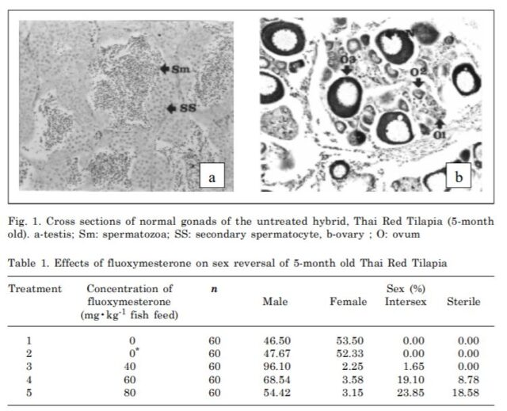
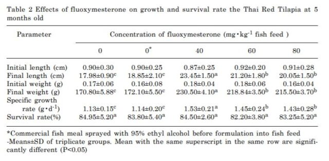
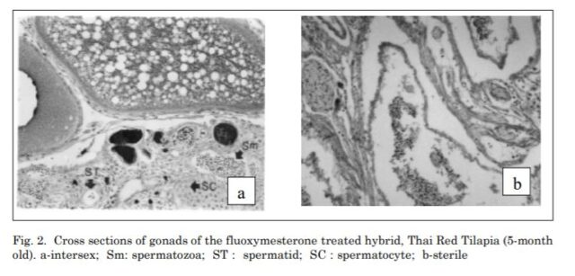
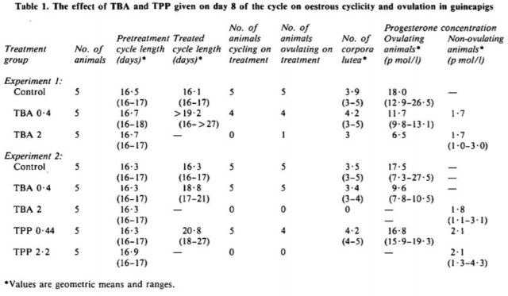
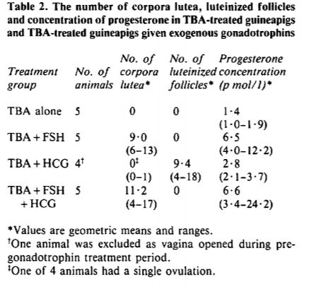

Paul E. Goss, M.D., Ph.D., James N. Ingle, M.D., José E. Alés-Martínez, M.D., Ph.D., Angela M. Cheung, M.D., Ph.D., Rowan T. Chlebowski, M.D., Ph.D., Jean Wactawski-Wende, Ph.D., Anne McTiernan, M.D., John Robbins, M.D., Karen C. Johnson, M.D., M.P.H., Lisa W. Martin, M.D., Eric Winquist, M.D., Gloria E. Sarto, M.D.,
Abstract
BACKGROUND
Tamoxifen and raloxifene have limited patient acceptance for primary prevention of breast cancer. Aromatase inhibitors prevent more contralateral breast cancers and cause fewer side effects than tamoxifen in patients with early-stage breast cancer.
METHODS
In a randomized, placebo-controlled, double-blind trial of exemestane designed to detect a 65% relative reduction in invasive breast cancer, eligible postmenopausal women 35 years of age or older had at least one of the following risk factors: 60 years of age or older; Gail 5-year risk score greater than 1.66% (chances in 100 of invasive breast cancer developing within 5 years); prior atypical ductal or lobular hyperplasia or lobular carcinoma in situ; or ductal carcinoma in situ with mastectomy. Toxic effects and health-related and menopause-specific qualities of life were measured.
RESULTS
A total of 4560 women for whom the median age was 62.5 years and the median Gail risk score was 2.3% were randomly assigned to either exemestane or placebo. At a median follow-up of 35 months, 11 invasive breast cancers were detected in those given exemestane and in 32 of those given placebo, with a 65% relative reduction in the annual incidence of invasive breast cancer (0.19% vs. 0.55%; hazard ratio, 0.35; 95% confidence interval [CI], 0.18 to 0.70; P=0.002). The annual incidence of invasive plus noninvasive (ductal carcinoma in situ) breast cancers was 0.35% on exemestane and 0.77% on placebo (hazard ratio, 0.47; 95% CI, 0.27 to 0.79; P=0.004). Adverse events occurred in 88% of the exemestane group and 85% of the placebo group (P=0.003), with no significant differences between the two groups in terms of skeletal fractures, cardiovascular events, other cancers, or treatment-related deaths. Minimal quality-of-life differences were observed.
CONCLUSIONS
Exemestane significantly reduced invasive breast cancers in postmenopausal women who were at moderately increased risk for breast cancer. During a median follow-up period of 3 years, exemestane was associated with no serious toxic effects and only minimal changes in health-related quality of life. (Funded by Pfizer and others; NCIC CTG MAP.3 ClinicalTrials.gov number, NCT00083174. opens in new tab.)
Estrogens contribute to normal breast development but can also promote breast cancer in preclinical models and in women with high circulating plasma estrogen levels.1-4 To date, chemoprevention of breast cancer has focused on the selective estrogen-receptor modulators (SERMs) tamoxifen and raloxifene, which exert antiestrogenic effects on the breast, as well as agonist or antagonist effects on other organs. In the National Surgical Adjuvant Breast and Bowel Project P-1 trial, tamoxifen significantly reduced the number of invasive breast cancers, by 49% (P<0.001) as compared with placebo.5 A meta-analysis of trials comparing tamoxifen with placebo showed that tamoxifen reduced the incidence of breast cancer by 38% with no effect on mortality.6 On the basis of these collective data on tamoxifen, the estimated number needed to treat to prevent one breast cancer after 5 years is about 95 and is reduced to 56 after 10 years.7 Similar risk reductions occur with raloxifene.8-10 Tamoxifen increases the risks of endometrial cancers and venous thromboembolism; raloxifene does not increase the risk of endometrial cancers but does cause similar toxic effects.
The acceptance of tamoxifen or raloxifene for reducing the risk of breast cancer has been poor, in part because they are both associated with rare but serious toxic effects.11-13 Of the approximately 2 million U.S. women who could potentially benefit from treatment with tamoxifen, only 4% of those at increased risk for breast cancer and only 0.08% of all U.S. women 40 to 79 years of age have accepted the use of this drug for chemoprevention.13-15 A 2002 expert assessment concluded that tamoxifen lacks overall health benefits and recommended that future trials be conducted with placebo controls.16 Novel, less toxic interventions are needed that will reduce the threshold of risk yet provide a net benefit.17
Aromatase inhibitors profoundly suppress estrogen levels in postmenopausal women and inhibit the development of breast cancer in laboratory models.18-21 In early trials of breast cancer therapy, both nonsteroidal and steroidal aromatase inhibitors reduced contralateral primary breast cancers more than did tamoxifen; after 5 years of tamoxifen therapy, letrozole resulted in a further reduction of 46%, as compared with placebo.22-27 Preclinical models and clinical studies suggest that because of exemestane’s antiestrogenic effects, such as those on bone resorption due to this drug’s mild androgenic activity, it is a good candidate for study in a breast-cancer prevention trial.28-30
Methods
STUDY DESIGN
The NCIC Clinical Trials Group Mammary Prevention.3 trial (NCIC CTG MAP.3) is an international, randomized, double-blind, placebo-controlled trial conducted in Canada, the United States, Spain, and France. The trial was approved by the health regulatory authorities and institutional review boards at the participating centers, and enrollment began in September 2004. After stratification according to current use of low-dose aspirin (≤100 mg per day) (yes or no) and Gail risk score (for calculation of this score, see www.cancer.gov/bcrisktool. opens in new tab and the Supplementary Appendix, available with the full text of this article at NEJM.org) (≤2.0% or >2.0%), subjects were randomly assigned to one of three treatment groups with the use of a dynamic minimization algorithm: 25 mg of exemestane plus placebo, 25 mg of exemestane plus celecoxib, or placebo plus placebo pills, administered daily after a morning meal.31,32 After 31 patients were enrolled, 10 patients discontinued treatment with celecoxib because of concern for cardiovascular safety.33 Before enrollment and during the study, written informed consent and reconsent in all the participating countries included counseling about the risks and benefits of treatment with tamoxifen and raloxifene. The trial was event-driven, with a planned maximum duration of therapy of 5 years or until a breast event, a neoplastic disease, or a cardiovascular event was diagnosed or unacceptable toxicity developed.
PARTICIPANTS
Women 35 years of age or older were eligible if they were postmenopausal (older than 50 years of age with no spontaneous menses for at least 12 months; or 50 years of age or younger either with no spontaneous menses [amenorrheic] within 12 months of randomization [e.g., spontaneous or secondary to hysterectomy] and a follicle-stimulating hormone level within the postmenopausal range or with prior bilateral oophorectomy). In addition, women had at least one of the following risk factors: age 60 years or older; Gail risk score greater than 1.66%; prior atypical ductal or lobular hyperplasia or lobular carcinoma in situ on breast biopsy or prior ductal carcinoma in situ treated with mastectomy. Prior menopausal hormone therapies (estrogen with or without progestin), luteinizing hormone–releasing hormone analogues, prolactin inhibitors, antiandrogens, or selective estrogen-receptor modulators were allowable, but not within 3 months of randomization. Women were ineligible if they were premenopausal, had prior invasive breast cancer or prior ductal carcinoma in situ treated with lumpectomy, were known carriers of the BRCA1 or BRCA2 gene, had a history of other malignancies (except nonmelanoma skin cancer, treated in situ cancer of the cervix, or other solid tumors treated with no evidence of disease for 5 years), had uncontrolled hypothyroidism or hyperthyroidism, or had chronic liver disease.
END POINTS AND ASSESSMENT
The primary outcome was incidence of invasive breast cancer. Secondary end points included a combined incidence of invasive and noninvasive (ductal carcinoma in situ) breast cancer; incidence of receptor-negative invasive breast cancer; incidence of combined atypical ductal hyperplasia, atypical lobular hyperplasia, and lobular carcinoma in situ; number of clinical breast biopsies; clinical fractures; adverse cardiovascular events, including myocardial infarction or coronary heart disease that resulted in death; overall incidence of other cancers; the side-effect profile and safety; and health-related and menopause-specific qualities of life (assessed by means of the Medical Outcomes Study 36-Item Short-Form Health Survey [SF-36] and the Menopause-Specific Quality of Life [MENQOL] questionnaire, respectively34-36).
At baseline, each patient’s history of prior diseases and treatment, family history of cancer, and reproductive history were obtained. Physical examination was performed, including height, weight, blood pressure, pulse, and clinical breast examination to confirm no suspicious breast abnormalities. Other requirements included complete blood count, liver-function tests, renal-function tests, and normal results on bilateral mammography and bone-mineral-density measurements within the past year. Symptoms at baseline were graded according to the National Cancer Institute’s Common Terminology Criteria for Adverse Events (CTCAE), version 3.0.37 Quality of life (QOL) was measured within 1 week before randomization. Clinical assessments occurred at 6 and 12 months after randomization and yearly thereafter and included physical examination with clinical breast examinations, recording of concomitant medications, symptoms and adverse events, and QOL assessments. Women discontinuing the study drug continued to undergo clinical assessments and follow-up for clinical outcomes and adverse events.
Mammography was required within 12 months before randomization and every 12 months from the time of the initial mammogram during and after the treatment. Breast cancers could be detected on clinical breast examination during the clinic visits or on annual mammography. All mammograms and radiographic reports of fractures were reviewed centrally, and all evidence of disease on breast-biopsy specimens was reviewed by an adjudication committee. Study accrual and safety data were reviewed every 6 months by an independent data and safety monitoring committee. The original protocol and subsequent amendments are available at NEJM.org.
STATISTICAL ANALYSIS
The planned final analyses presented here include invasive breast cancer incidence and other secondary breast cancer end points, estimated on the basis of time from randomization to when an end point was reached. The sample-size estimate was based on an assumption of a rate of invasive breast cancer of 0.60% per year in the group given placebo, as compared with 0.21% in those treated with exemestane, with a relative reduction of 65% with exemestane. To detect this with a two-sided 5% level and 90% power, a total of 38 cases of invasive breast cancer were required, projected to occur when 4560 women were randomly assigned to treatment groups in a 3-year period and then followed for an additional 1.2 years. No interim analyses were planned. Accrual was completed on March 23, 2010; the protocol target-event rate was met on November 5, 2010. All data queries were resolved, and the database was locked on March 1, 2011.
Comparisons of time-to-event primary and secondary end points were based on the stratified log-rank test, adjusting for the two stratification factors at randomization. Cox proportional-hazards models were used to derive hazard ratios and associated 95% confidence intervals. Fisher’s exact test was used to compare adverse events between the treatment and placebo groups. Mean change scores from baseline to each assessment were calculated for all SF-36 and MENQOL subscales and summaries. Changes measuring 5 to 10% of the scale breadth or 0.5 SD were considered to be potentially clinically meaningful.38-40 Scores measuring changes in QOL were considered worsened if they decreased by 5 or more points (out of a total of 100) from baseline on the SF-36 and if they increased by 0.5 or more points (out of a total of 8) on the MENQOL. A chi-square test was used to compare the differences in proportions of patients found to have potentially clinically meaningful changes in QOL.
The study drug, exemestane, and funding support were provided by Pfizer, but this sponsor had no role in the design of the study or in the accrual, management, or analysis of the data. The decision to publish and the drafting of the manuscript were undertaken entirely by the first author, coauthors, and staff at the NCIC CTG central office, who vouch for the fidelity of the study to the protocol and for the accuracy and completeness of the data.
Results
Between February 11, 2004, and March 23, 2010, 4560 women were randomly assigned to either exemestane (2285 patients) or placebo (2275 patients). After randomization, 15 women (6 taking exemestane and 9 taking placebo) were considered to be ineligible to continue with the study but are included in the primary intention-to-treat analysis as randomly assigned. The exemestane and placebo groups were well balanced for race, body-mass index, and breast cancer risk factors (Table 1, and Table 1 in the Supplementary Appendix).
Table 1. Baseline Characteristics of Patients Randomly Assigned to Exemestane or Placebo.
Major risk factors among the women who were enrolled included age of at least 60 years (49%); 5-year risk of breast cancer developing (Gail risk score >1.66%) (40%), and prior atypical ductal hyperplasia, atypical lobular hyperplasia, lobular carcinoma in situ, or prior ductal carcinoma in situ treated with mastectomy (11%). Prior menopausal hormone therapy use was recorded in 1310 women in the exemestane group (57.3%; range from 1 to 588 months) and 1327 women in the placebo group (58.3%; range from 1 to 360 months). Pretreatment bone mineral density and prior history of clinical fractures, cardiovascular risk factors, and the concomitant use of bisphosphonates, lipid-lowering drugs, and cardiovascular drugs were similar in the two study groups.
On November 5, 2010, at the time of the clinical data cutoff, 735 women (32.8%) assigned to exemestane and 646 women (28.7%) assigned to placebo were no longer taking the study medication. About 5% in each group had discontinued the protocol treatment because of treatment completion. The major reasons for early discontinuation of the protocol treatments were toxic effects (15.4% in the exemestane groups vs. 10.8% in the placebo group, P<0.001) and patient refusal (6.9% vs. 6.0%, P=0.22). The median time from randomization to off-protocol treatment was 10.2 months (range, 0.1 to 61.5) for exemestane and 14.2 months (range, 0.1 to 62.9) for placebo. Approximately 85% of women were compliant and 15% were noncompliant with the protocol guidelines for the study treatments. Scheduled annual mammography was performed equally in the two groups, with 7.2% and 7.7% of women having missed at least one scheduled mammography appointment in the exemestane and placebo groups, respectively.
At a median of 35 months of follow-up (range, 0 to 63.4), 43 invasive breast cancers were diagnosed: 11 in the exemestane groups and 32 in the placebo group (annual incidence, 0.19% with exemestane vs. 0.55% with placebo; hazard ratio, 0.35 with exemestane; 95% confidence interval [CI], 0.18 to 0.70) (Table 2). Figure 1 shows the cumulative incidence of invasive breast cancer in these two groups. There were 37 ductal (10 in the exemestane groups and 27 in the placebo group) and 6 lobular (1 in the exemestane groups and 5 in the placebo group) cancers. The majority of cancers in each group were estrogen-receptor–positive, HER2/neu–negative, and node-negative (Table 2).
Table 2. Incidence of Invasive and Preinvasive Breast Events by Treatment Group.
Figure 1. Cumulative Incidence of Invasive Breast Cancer.
Exemestane appeared to be superior to placebo in all prespecified subgroups defined by concurrent use of low-dose aspirin, Gail risk score, age, body-mass index, prior atypical ductal hyperplasia, atypical lobular hyperplasia, or lobular carcinoma in situ and prior ductal carcinoma in situ treated with mastectomy (Figure 2). Exemestane also appeared to be superior in unplanned subgroups: invasive breast cancers according to prior use of menopausal hormone therapy (hazard ratio, 0.30 for prior users; 95% CI, 0.11 to 0.81; hazard ratio, 0.41 for prior nonusers; 95% CI, 0.16 to 1.05) and continent of residence (hazard ratio, 0.34 for North America; 95% CI, 0.16 to 0.71; hazard ratio, 0.39 for Europe; 95% CI, 0.07 to 1.99). The annual incidence of invasive breast cancer plus ductal carcinoma in situ (20 in the exemestane group and 44 in the placebo group) was 0.35% and 0.77% in the exemestane and placebo groups, respectively (hazard ratio, 0.47; 95% CI, 0.27 to 0.79). Combined lobular carcinoma in situ, atypical ductal hyperplasia, and atypical lobular hyperplasia occurred in 4 women (0.2%) in the exemestane group and 11 (0.5%) in the placebo group (hazard ratio, 0.36; 95% CI, 0.11 to 1.12). The number needed to treat to prevent one case of invasive breast cancer with exemestane therapy was 94 in 3 years and 26 in 5 years, but few women completed 5 years of therapy.
Table 3. Side Effects during Treatment, According to Severity.
Table 3 (and Table 2 in the Supplementary Appendix) shows adverse events that occurred in 5% or more of women, with a difference between groups of 1% or more and prespecified secondary end points of toxicity. Symptoms and adverse events (all grades) occurred in 88% of women in the exemestane group versus 85% in the placebo group (P=0.003). Arthritis (P=0.01) and hot flashes (P<0.001) were more common in the exemestane group, but differences between the groups in the frequency of those with grade 2 or higher symptoms were modest (arthritis, 6.5% vs. 4.0%; hot flashes, 18.3% vs. 11.9%). Table 3 (and Table 2 in the Supplementary Appendix) shows no significant differences between the two groups in prespecified secondary end points, including new diagnoses of osteoporosis or cardiovascular events. Clinical fracture rates were also similar in the two groups, and the proportion of women in each group who were prescribed bisphosphonate therapy during the trial was also similar (24.5% for exemestane and 24.1% for placebo). There was no significant difference in the number of cancers other than breast cancer (50 [2.2%] vs. 44 [2.0%]) or time to detection of these cancers (1.8 yr vs. 1.6 yr). No significant differences were detected between the two groups with respect to hypercholesterolemia, hypertriglyceridemia, abnormal liver-function tests, acne, alopecia, rash, weight gain, or hair loss (data not shown). Table 3 in the Supplementary Appendix shows health-related and menopause-specific QOL results. Compliance in completing the QOL questionnaire at each follow-up visit was 92.9 to 97.4% for the exemestane group and 94.3 to 97.5% for the placebo group. No between-group differences in overall health-related QOL responses were found when distributions of worsened, stable, and improved scores on the SF-36 (Physical and Mental Component Scores) were compared despite worsened menopause-specific QOL among those taking exemestane (7% more overall). There were 38 deaths during the study (19 in each group). Causes of death in the exemestane and placebo groups, respectively, were breast cancer, 1 and 0; other malignancies, 10 and 12; cardiovascular events, 5 and 4; and other causes, 3 and 3. None were adjudicated as treatment-related.
Discussion
In this randomized, placebo-controlled trial in healthy postmenopausal women, exemestane reduced the relative incidence of invasive breast cancers by 65%, from 0.55% to 0.19%. Exemestane also reduced the risk of known breast-cancer precursor lesions — ductal carcinoma in situ, lobular carcinoma in situ, atypical ductal hyperplasia, and atypical lobular hyperplasia — suggesting possible further reductions in invasive cancers during long-term follow-up. Most tumors in these study patients were estrogen-receptor–positive. HER2-positive tumors, which have a poor prognosis, were also reduced with exemestane. Future studies to corroborate this finding would be important.
Menopausal symptoms such as hot flashes, fatigue, sweating, insomnia, and arthralgia were frequent among all the women in the study but were predictably somewhat more common in those taking exemestane. Also of potential clinical importance, more women in the exemestane group self-reported that menopause-related vasomotor and sexual symptoms had worsened. However, these symptoms did not appear to affect self-reports of overall health-related QOL among those taking exemestane because summary measures of physical and mental components of the SF-36 did not differ between the two study groups. (Full QOL results are not reported here.) Unlike the rare endometrial cancers and thromboemboli associated with tamoxifen, particularly in postmenopausal women, no serious adverse events or end-organ toxic effects, including fractures, were attributable to exemestane. Mild loss of bone mineral density with the aromatase inhibitors is well documented, but the annual excess incidence of fractures in trials comparing aromatase inhibitors and tamoxifen are probably due mainly to the bone-protective effects of tamoxifen.41,42 After the cessation of therapy in several large trials comparing aromatase inhibitors and tamoxifen in early breast cancer, bone mineral density improved and the difference in fracture rates was reduced.43-45 In these trials, adverse events also attenuated rapidly after cessation of treatment and correlated with recovery of estrogen levels to their normal postmenopausal range. The absence of excess clinical fractures in patients treated with exemestane in this study is reassuring. This occurred despite similar baseline bone mineral density in the two groups and the use of bisphosphonate therapy both before and during the study. Although differences in the occurrence of colorectal, lung, and endometrial cancers and malignant melanomas have been reported in tamoxifen comparator trials, no differences were seen in this trial or in the placebo-controlled MA.17 trial.26,46 Small numerical, but not significant, differences in the number of cardiovascular events have also been reported in trials comparing aromatase inhibitors with tamoxifen,22,23,46 with more events among the patients treated with aromatase inhibitors, and these differences may have been due to the slightly protective effect of tamoxifen, as suggested by Mouridsen et al.47 It is reassuring that when the aromatase inhibitors were compared with placebo, these differences were not seen either in this prevention trial or in our early breast cancer MA.17 trial.
This trial has some limitations. The median follow-up of 3 years is relatively short, and although consistent with our projections, the total number of breast events (66) was small. The optimal duration of endocrine therapy for breast-cancer prevention is not known, but in a previous placebo-controlled trial of early breast cancer, we found that prolonged aromatase-inhibitor therapy was associated with continued reductions in the incidence of contralateral breast cancers even after the aromatase inhibitor was discontinued.48 The number of women needed to treat in MAP.3 to prevent one case of breast cancer is 94 with 3 years of exemestane therapy, but is projected to be 26 at 5 years, although the number of women who received treatment for a full 5 years was low. By identifying subgroups of participants in the MAP.3 trial who would benefit most or who would be most vulnerable to toxic effects, one might be able to reduce the number needed to treat.
Despite these limitations we found a favorable risk-to-benefit ratio with a strong preventive effect of exemestane and, with a limited median follow-up of 3 years, an excellent safety profile across a spectrum of women at average to high risk for breast cancer. We reached our protocol-specified number of events for this final analysis; after unblinding, women taking the active drug will be offered exemestane to complete 5 years of therapy, and MAP.3 sites will have the option of offering 5 years of exemestane treatment to those initially assigned to placebo. We and others are conducting placebo-controlled trials in healthy women and patients with early breast cancer to evaluate prolonged aromatase-inhibitor therapy in postmenopausal women of similar age. The results of these ongoing trials should contribute to our understanding of the long-term efficacy and toxicity of aromatase inhibitors.
Supported by the Canadian Cancer Society Research Institute, the Canadian Institutes for Health Research, Pfizer, and the Avon Foundation.
Disclosure forms provided by the authors are available with the full text of this article at NEJM.org.
This article (10.1056/NEJMoa1103507) was published on June 4, 2011, and updated on June 23, 2011, at NEJM.org.
We thank the 4560 women (2824 from the United States, 1285 from Canada, 432 from Spain, and 19 from France) who agreed to participate in this study; the trial committee; the many investigators, pharmacists, and clinical research associates involved in the trial; Drs. Joe Pater and Lois Shepherd, Dianne Johnston, and Andrea Hiltz for their enthusiastic and unwavering support; the members of the NCIC CTG Data Safety Monitoring Committee; the Central Office staff of the NCIC CTG who contributed to the conduct of the trial; and Pfizer Pharmaceuticals for support and for providing exemestane and placebo.
Author Affiliations
From Massachusetts General Hospital Cancer Center (P.E.G.) and Dana–Farber Cancer Institute (J.E.G.) — both in Boston; Mayo Clinic, Rochester, MN (J.N.I.); Hospital Nuestra Señora De Sonsoles, Ávila, Spain (J.E.A., on behalf of the Spanish Group for Breast Cancer Research); Los Angeles Biomedical Research Institute, Harbor–UCLA Medical Center, Torrance, CA (R.T.C.); University at Buffalo, Buffalo, NY (J.W.-W.); Division of Public Health Sciences, Fred Hutchinson Cancer Research Center, Seattle (A.M.); University of California, Davis, Sacramento (J.R.); University of Tennessee Health Science Center, Memphis (K.C.J.); George Washington University School of Medicine, Washington, DC (L.W.M.); University of Wisconsin School of Medicine and Public Health, Madison (G.E.S.); Kansas University Medical Center, Kansas City (C.J.F.); Centre Hospitalier Universitaire Arnaud de Villeneuve, Montpellier, France (P.P., on behalf of the National Federation of French Cancer Centers); University Health Network, Toronto (A.M.C.), London Health Sciences Centre, London, ON (E.W.), Unité de recherche en santé des populations de l’Université Laval, Quebec (E.M.), Queen’s University Pathology and Molecular Medicine, Kingston, ON (P.F.), British Columbia Cancer Agency, Vancouver, BC (K.A.G.), and NCIC Clinical Trials Group, Kingston, ON (D.T., H.R.) — all in Canada.
Address reprint requests to Dr. Goss at Massachusetts General Hospital Cancer Center, Lawrence House, LRH-302, Boston, MA 02114, or at pgoss@partners.org.
The NCIC Clinical Trials Group MAP.3 (NCIC CTG MAP.3) investigators are listed in the Supplementary Appendix, available at NEJM.org.
References
1. Clemons M, Goss P. Estrogen and the risk of breast cancer. N Engl J Med 2001;344:276-285[Erratum, N Engl J Med 2001;344:1804.]
2.Eliassen AH, Missmer SA, Tworoger SS, Hankinson SE. Circulating 2-hydroxy- and 16alpha-hydroxy estrone levels and risk of breast cancer among postmenopausal women. Cancer Epidemiol Biomarkers Prev 2008;17:2029-2035
3.Ahlgren M, Melbye M, Wohlfahrt J, Sorensen TIA. Growth patterns and the risk of breast cancer in women. N Engl J Med 2004;351:1619-1626
4.The Endogenous Hormones and Breast Cancer Collaborative Group. Endogenous sex hormones and breast cancer in postmenopausal women: reanalysis of nine prospective studies. J Natl Cancer Inst 2002;94:606-616
5.Fisher B, Costantino JP, Wickerham DL, et al. Tamoxifen for prevention of breast cancer: report of the National Surgical Adjuvant Breast and Bowel Project P-1 Study. J Natl Cancer Inst 1998;90:1371-1388
6.Cuzick J, Powles T, Veronesi U, et al. Overview of the main outcomes in breast-cancer prevention trials. Lancet 2003;361:296-300
7.Cuzick J. Long-term follow-up in cancer prevention trials (It ain’t over till it’s over). Cancer Prev Res (Phila) 2010;3:689-691
8.Barrett-Connor E, Mosca L, Collins P, et al. Effects of raloxifene on cardiovascular events and breast cancer in postmenopausal women. N Engl J Med 2006;355:125-137
9.Martino S, Cauley JA, Barrett-Connor E, et al. Continuing outcomes relevant to Evista: breast cancer incidence in postmenopausal osteoporotic women in a randomized trial of raloxifene. J Natl Cancer Inst 2004;96:1751-1761
10.Vogel VG, Costantino JP, Wickerham DL, et al. Effects of tamoxifen vs raloxifene on the risk of developing invasive breast cancer and other disease outcomes: the NSABP Study of Tamoxifen and Raloxifene (STAR) P-2 trial. JAMA 2006;295:2727-2741
11.Armstrong K, Quistberg DA, Micco E, Domchek S, Guerra C. Prescription of tamoxifen for breast cancer prevention by primary care physicians. Arch Intern Med 2006;166:2260-2265
12.Lippman SM. The dilemma and promise of cancer chemoprevention. Nat Clin Pract Oncol 2006;3:523-523
13.Ropka ME, Keim J, Philbrick JT. Patient decisions about breast cancer chemoprevention: a systematic review and meta-analysis. J Clin Oncol 2010;28:3090-3095
14.Visvanathan K, Chlebowski RT, Hurley P, et al. American Society of Clinical Oncology 2008 clinical practice guideline update on the use of pharmacologic interventions including tamoxifen, raloxifene, and aromatase inhibition for breast cancer risk reduction. J Clin Oncol 2009;27:3235-3258
15.Waters WA, Cronin KA, Graubard BI, Han PK, Freedman AN. Prevalence of tamoxifen use for breast cancer chemoprevention among U.S. women. Cancer Epidemiol Biomarkers Prev 2010;19:443-446
16.Chlebowski RT, Col N, Winer EP, et al. American Society of Clinical Oncology technology assessment of pharmacologic interventions for breast cancer risk reduction including tamoxifen, raloxifene, and aromatase inhibition. J Clin Oncol 2002;20:3328-3343
17.Gail MH. Personalized estimates of breast cancer risk in clinical practice and public health. Stat Med 2011;30:1090-1104
18.Goss PE. Breast cancer prevention — clinical trials strategies involving aromatase inhibitors. J Steroid Biochem Mol Biol 2003;86:487-493
19.Lubet RA, Steele VE, Casebolt TL, Eto I, Kelloff GJ, Grubbs CJ. Chemopreventive effects of the aromatase inhibitors vorozole (R-83842) and 4-hydroxyandrostenedione in the methylnitrosourea (MNU)-induced mammary tumor model in Sprague-Dawley rats. Carcinogenesis 1994;15:2775-2780
20.De Coster R, Van Ginckel RF, Callens MJ, Goeminne NK, Janssens BL. Antitumoral and endocrine effects of (+)-vorozole in rats bearing dimethylbenzanthracene-induced mammary tumors. Cancer Res 1992;52:1240-1244
21.Schieweck K, Bhatnagar AS, Batzl C, Lang M. Anti-tumor and endocrine effects of non-steroidal aromatase inhibitors on estrogen-dependent rat mammary tumors. J Steroid Biochem Mol Biol 1993;44:633-636
22.Baum M, Buzdar A, Cuzick J, et al. Anastrozole alone or in combination with tamoxifen versus tamoxifen alone for adjuvant treatment of postmenopausal women with early-stage breast cancer: results of the ATAC (Arimidex, Tamoxifen Alone or in Combination) trial efficacy and safety update analyses. Cancer 2003;98:1802-1810
23.The Breast International Group (BIG) 1-98 Collaborative Group. A comparison of letrozole and tamoxifen in postmenopausal women with early breast cancer.N Engl J Med 2005;353:2747-57. [Erratum, N Engl J Med 2006;354:2200.]
24.Coombes RC, Hall E, Gibson LJ, et al. A randomized trial of exemestane after two to three years of tamoxifen therapy in postmenopausal women with primary breast cancer. N Engl J Med 2004;350:1081-1092[Erratum, 2004;351:2461, 2006;355:1746.]
25.van de Velde CJ, Rea D, Seynaeve C, et al. Adjuvant tamoxifen and exemestane in early breast cancer (TEAM): a randomized phase 3 trial. Lancet 2011;377:321-331
26.Goss PE, Ingle JN, Martino S, et al. A randomized trial of letrozole in postmenopausal women after five years of tamoxifen therapy for early-stage breast cancer. N Engl J Med 2003;349:1793-1802
27.Dowsett M, Cuzick J, Ingle J, et al. Meta-analysis of breast cancer outcomes in adjuvant trials of aromatase inhibitors versus tamoxifen. J Clin Oncol 2010;28:509-518
28.Goss PE, Qi S, Josse RG, et al. The steroidal aromatase inhibitor exemestane prevents bone loss in ovariectomized rats. Bone 2004;34:384-392
29.Joahannessen DC, Engan T, Di Salle E, et al. Endocrine and clinical effects of exemestane (PNU 155971), a novel steroidal aromatase inhibitor, in postmenopausal breast cancer patients: a phase I study. Clin Cancer Res 1997;3:1101-1108
30.Goss PE, Hadji P, Subar M, Abreu P, Thomsen T, Banke-Bochita J. Effects of steroidal and nonsteroidal aromatase inhibitors on markers of bone turnover in healthy postmenopausal women. Breast Cancer Res 2007;9:R52-R52
31.Tu D. Minimization Procedure. In: Chow SC, ed. Encyclopedia of biopharmaceutical statistics. 3rd ed. New York: Marcel Dekker, 2010:795-8.
32.Gail MH, Brinton LA, Byar DP, et al. Projecting individualized probabilities of developing breast cancer for white females who are being examined annually. J Natl Cancer Inst 1989;81:1879-1886
33.Solomon SD, McMurray JJV, Pfeffer MA, et al. Cardiovascular risk associated with celecoxib in a clinical trial for colorectal adenoma prevention. N Engl J Med 2005;352:1071-1080
34.Ware JE Jr. SF-36 health survey update. Spine (Phila Pa 1976;25:3130-3139
35.Hilditch JR, Lewis J, Peter A, et al. A menopause-specific quality of life questionnaire: development and psychometric properties. Maturitas 1996;24:161-175[Erratum, Maturitas 1996;25:231.]
36.Ware JE, Kosinksi M, Dewey JE. How to score version 2 of the SF-36 health survey. Lincoln, RI: QualityMetric, 2000.
37.Cancer Therapy Evaluation Program. Common terminology criteria for adverse events, version 3.0. March 31, 2003.
38.Norman GR, Sloan JA, Wyrwich KW. Interpretation of changes in health-related quality of life: the remarkable universality of half a standard deviation. Med Care 2003;41:582-592
39.Wyrwich KW, Fihn SD, Tierney WM, Kroenke K, Babu AN, Wolinsky FD. Clinically important changes in health-related quality of life for patients with chronic obstructive pulmonary disease: an expert consensus panel report. J Gen Intern Med 2003;18:196-202
40.Whelan TJ, Goss PE, Ingle JN, et al. Assessment of quality of life in MA.17: a randomized, placebo-controlled trial of letrozole after 5 years of tamoxifen in postmenopausal women. J Clin Oncol 2005;23:6931-6940
41.Perez EA, Josse RG, Pritchard KI, et al. Effect of letrozole versus placebo on bone mineral density in women with primary breast cancer completing 5 or more years of adjuvant tamoxifen: a companion study to NCIC CTG MA.17. J Clin Oncol 2006;24:3629-3635
42.Eastell R, Adams JE, Coleman RE, et al. Effect of anastrozole on bone mineral density: 5-year results from the anastrozole, tamoxifen, alone or in combination trial 18233230. J Clin Oncol 2008;26:1051-1057
43.Coleman RE, Banks LM, Girgis SI, et al. Reversal of skeletal effects of endocrine treatments in the Intergroup Exemestane Study. Breast Cancer Res Treat 2010;124:153-161
44.Geisler J, Lonning PE, krag LE, et al. Changes in bone and lipid metabolism in postmenopausal women with early breast cancer after terminating 2-year treatment with exemestane: a randomised, placebo-controlled study. Eur J Cancer 2006;42:2968-2975
45.Eastell R, Adams J, Clack G, et al. Long-term effects of anastrozole on bone mineral density: 7-year results from the ATAC trial. Ann Oncol 2011;22:857-862
46.Cuzick J, Sestak I, Baum M, et al. Effect of anastrozole and tamoxifen as adjuvant treatment for early-stage breast cancer: 10-year analysis of the ATAC trial. Lancet Oncol 2010;11:1135-1141
47.Mouridsen H, Keshaviah A, Coates AS, et al. Cardiovascular adverse events during adjuvant endocrine therapy for early breast cancer using letrozole or tamoxifen: safety analysis of BIG 1-98 trial. J Clin Oncol 2007;25:5715-5722
48.Ingle JN, Tu D, Pater JL, et al. Duration of letrozole treatment and outcomes in the placebo-controlled NCIC CTG MA.17 extended adjuvant therapy trial. Breast Cancer Res Treat 2006;99:295-300
Sas T.C.J.a, b· Gault E.J.f· Zeger Bardsley M.g· Menke L.A.c· Freriks K.d· Perry R.J.f· Otten B.J.e· de Muinck Keizer-Schrama S.M.P.F.b· Timmers H.d· Wit J.M.c· Ross J.L.g· Donaldson M.D.C.f
Abstract
There has been no consensus regarding the efficacy and safety of oxandrolone (Ox) in addition to growth hormone (GH) in girls with Turner syndrome (TS), the optimal age of starting this treatment, or the optimal dose. This collaborative venture between Dutch, UK and US centers is intended to give a summary of the data from three recently published randomized, placebo-controlled, double-blind studies on the effects of Ox. The published papers from these studies were reviewed within the group of authors to reach consensus about the recommendations. The addition of Ox to GH treatment leads to an increase in adult height, on average 2.3-4.6 cm. If Ox dosages <0.06 mg/kg/day are used, side effects are modest. The most relevant safety concerns are virilization (including clitoromegaly and voice deepening) and a transient delay of breast development. We advise monitoring signs of virilization breast development and possibly blood lipids during Ox treatment, in addition to regular follow-up assessments for TS. In girls with TS who are severely short for age, in whom very short adult stature is anticipated, or in whom the growth rate is modest despite good compliance with GH, adjunctive treatment with Ox at a dosage of 0.03-0.05 mg/kg/day starting from the age of 8-10 years onwards can be considered.
While growth hormone (GH) has been shown to improve final height (FH) in Turner syndrome (TS), such treatment can only partially overcome the growth failure observed in affected girls. It is for this reason that adjunctive therapy in TS has been tried, notably with oxandrolone (Ox), a synthetic anabolic steroid derived from dihydrotestosterone by replacing the carbon atom in position 2 with an oxygen atom, and methylating the carbon atom in position 17. Ox treatment, when combined with GH, has been shown to increase height velocity in TS [1] and to improve FH [2,3], but its use has not become standard for two main reasons. Firstly, the patient numbers involved in previous studies reporting increased FH with GH and Ox have been relatively small. For example, Nilsson et al. [2] found FH to be greatest in girls receiving GH and Ox compared with GH ± ethinyl estradiol (EE2) and GH, Ox and EE2, but there were 15 or fewer girls in each of the three groups, while in the study of Stahnke et al. [3] only 7 girls treated with GH alone and 15 girls who had received GH and consistent Ox treatment were at FH. Secondly, features of virilization with clitoromegaly and voice deepening have been reported with Ox doses of 0.1 mg/kg/day or more, requiring a reduction in dosage [1,3]. Given these concerns, and because none of the above studies were placebo (Pl)-controlled, there has to date been insufficient information about both the efficacy and safety of Ox and the optimal dose and age at starting this treatment.
The recent publication of three randomized Pl-controlled, double-blind studies on the effects of Ox in addition to GH in girls with TS has generated more insight into the benefit-risk ratio of Ox [4,5,6].
In this paper we summarize the findings of the three recent studies [4,5,6] in terms of efficacy and safety, and present recommendations concerning the use of Ox in TS. We also draw attention to areas where our knowledge remains insufficient. Whilst a meta-analysis of the data from the three studies was carefully considered and would have the advantages of increasing sample size thus decreasing the confidence intervals, there are difficulties in applying this approach to our situation. Firstly, pooled analysis is usually more suited to situations where more than three studies are available for analysis. Secondly, there are considerable differences in Ox dosage and in timing of GH, Ox and estrogen treatment between the treatment regimens of the three studies. Finally, meta-analysis of the results of these three studies could obscure the influence of the various treatment regimens. For these reasons we have chosen to simply compare and contrast the results from each study.
Efficacy of Ox in GH-Treated Girls with TS
Table 1 outlines the characteristics while table 2 gives the results of the three Pl-controlled studies on the effect of Ox in girls with TS who were treated with GH.
Table 1
Characteristics of three Pl-controlled studies on the effect of Ox in girls with TS treated with GH 1.33-1.43 mg/m2/day
Table 2
Results of three Pl-controlled studies on the effect of Ox in girls with TS treated with GH 1.33-1.43 mg/m2/day
In 2010, Menke et al. [4] reported the data of a Dutch randomized, Pl-controlled, double-blind, dose-response study performed in ten centers in the Netherlands. A total of 133 patients with TS were grouped according to age as follows: group 1 (2-7.99 years), group 2 (8-11.99 years), or group 3 (12-15.99 years). Patients were treated with GH, maintaining a dose of 1.33 mg/m2/day, equivalent to 46 µg/kg/day for a body surface of 1 m2, from baseline throughout the study. They were also randomized to receive either Pl or Ox in a low (0.03 mg/kg/day) or conventional (0.06 mg/kg/day) dose from the age of 8 years. Capsules of Ox were made by one pharmacist in predetermined strengths for daily use and the dose of Ox was rounded off to the nearest 0.5 mg. The maximum daily Ox dose was 3.75 mg. Ox or Pl was continued for as long as GH was prescribed. Estrogen therapy was given from the age of 12 years; 17β-estradiol was prescribed in age groups 1 and 2, and EE2 in age group 3 (5 and 0.05 μg/kg/day orally, increasing to 10 and 0.1 μg/kg/day, respectively, after 2 years). Adult height gain was calculated as attained adult height minus predicted adult height using a modification of the Lyon method [5,6]. Compared with Pl, Ox 0.03 mg/kg/day increased adult height gain in the intention-to-treat analysis (mean ± SD, 9.5 ± 4.7 vs. 7.2 ± 4.0 cm, p = 0.02) and per-protocol analysis (9.8 ± 4.9 vs. 6.8 ± 4.4 cm, p = 0.02). By contrast, adult height gain on GH and Ox 0.06 mg/kg/day was not significantly different from that on GH and Pl (8.3 ± 4.7 vs. 7.2 ± 4.0 cm, p = 0.3) [4]. Concerning the difference in height gain between the group receiving Ox 0.03 mg/kg/day and the group receiving Pl, this is not attributable to the former starting GH 0.9 year and Ox 0.7 year earlier since adjustments for age were made in the statistical analysis. The lack of incremental effect of the higher Ox dose of 0.06 mg/kg/day on adult height can be explained partly by an acceleration in bone maturation (p = 0.001) and also by the relatively high numbers of earlier termination of treatment owing to virilization.
In 2011, Zeger et al. [7] reported the results of a randomized Pl-controlled, double-blind prospective trial carried out in two centers in the USA, addressing the effect of Ox at a dosage of 0.06 mg/kg/day in addition to GH in girls with TS. Patients received combinations of 2.5- and 1.25-mg Ox tablets in order to achieve the desired weekly dose. The dosage of Ox was reduced by 50% if there were signs of virilization and/or bone age advancement. Ox or Pl was added to GH for 4 years, and EE2 was started in all girls after 2 years of treatment with GH+Pl/Ox: in year 3 50 ng/kg/day, and in year 4 100 ng/kg/day. Height gain was assessed as change in absolute height and height SD score (SDS) from baseline using US National Center for Health Statistics and TS-specific standards. Seventy-six girls aged 10-14.9 years with TS were randomized to receive Ox (0.06 mg/kg/day, maximum 3.75 mg/day) or Pl in combination with GH (maintaining a dose of 0.35 mg/kg/week = 50 μg/kg/day throughout the study). At year 4, 21 out of 24 girls in the GH/Ox group and 20 out of 23 in the GH/Pl group had reached near-adult height (bone age ≥13.5 years). For those who had reached near-adult height, the change in height from baseline between the Ox and Pl groups was nearly significant, those having received Ox having grown an average of 4 cm more (25.4 ± 6.7 vs. 21.8 ± 5.3 cm, p = 0.07) [7].
In 2011, Gault et al. [8] reported the data of a randomized, double-blind, Pl-controlled trial performed in 36 pediatric endocrinology departments in the UK. A total of 106 girls with TS aged 7-13 years at recruitment received GH therapy, maintaining a dose of 10 mg/m2/week (1.43 mg/m2/day, equivalent to 49 μg/kg/day for a body surface area of 1 m2) throughout the study, and were randomized to Ox (0.05 mg/kg/day with a maximum daily dose of 2.5 mg/day) or Pl from 9 years of age. Ox was administered as either a full or a half 2.5-mg tablet, or taken on alternate days to achieve the desired weekly dose. Those girls with evidence of ovarian failure at 12 years were further randomized to oral EE2 (year 1: 2 μg daily; year 2: 4 μg daily; year 3: 4 months each of 6, 8, and 10 μg daily) or Pl. Participants who received Pl as well as those recruited after the age of 12.25 years started the EE2 protocol at age 14 years. Growth data were analyzed according to FH, defined as height velocity <1 cm/year and bone age at least 15.5 years, and by SITAR (SuperImposition by Translation And Rotation), a method of growth curve analysis which transforms individual growth curves, which can then be superimposed, thus defining an average summary curve for specific groups [9]. Ox increased adult height by 4.6 cm (95% confidence interval 1.9-7.2, p = 0.001, n = 82) and late pubertal induction (14 years) by 3.8 (0.0-7.5) cm (p = 0.05, n = 48). However, mean FHs for Pl/late induction and Ox/induction at 12 years were similar (153.1 and 154.4 cm) indicating that the effects of Ox therapy and late induction were not additive so that there was little benefit of both giving Ox and delaying pubertal induction [8]. The reason for this negative interaction, which nearly achieved statistical significance, is unknown.
In all three studies, Ox directly increased height velocity in girls with TS who were on standard GH treatment (1.33-1.43 mg/m2/day, equivalent to 45-50 μg/kg/day). Although the effect on adult height and adult height gain was calculated in different ways in the three studies, Ox co-treatment was associated with a greater adult height and/or adult height gain in all when compared to girls treated with GH therapy and Pl. Due to the Pl-controlled randomized design, it is unlikely that the observed differences are caused by one or more of the other factors which may influence adult height in GH-treated girls with TS, such as age at start of GH, years of GH treatment, compliance, GH dose, estrogen therapy and genetic factors.
The average effect of Ox on adult height gain varied between 2.3 and 4.6 cm in the three studies. Differences in the magnitude of the effect of Ox between the three studies may be explained by differences in the patient characteristics, dosage regimen, and limitations of the studies (table 1, 2).
Safety of Ox in GH-Treated Girls with TS
In previous studies as well as in the three recent studies, various aspects of safety were assessed. Here we discuss virilization, delay of breast development, body proportions and composition, cardiovascular risk, bone mineral density, circulating IGF-1, and psychosocial aspects.
Virilization
The US study using Ox 0.06 mg/kg/day (with a maximum daily dose of 3.75 mg) showed subjective clitoral changes (2 girls on Ox and 2 on Pl), acne (1 on Ox) and mild hirsutism (3 on Ox) in patients after which the Ox/Pl dose was reduced [7]. The Dutch study showed that while there were sporadic complaints about virilization in the Pl group (5%), more girls in the Ox groups reported features of mild virilization (subjective voice deepening, hirsutism, and mild clitoromegaly). This was particularly evident in girls receiving Ox 0.06 mg/kg/day (with a maximum of 3.75 mg) (42%), and to a lesser extent in the group receiving Ox 0.03 mg/kg/day (16%) [4]. In addition, the objective deepening of the voice was greater in the groups receiving GH+Ox compared to those receiving GH+Pl [10]. One girl on Ox 0.03 and 7 on Ox 0.06 (vs. zero on Pl, p = 0.005) discontinued Ox because of virilization [4]. By contrast, the UK study (using 0.05 mg/kg/day with a maximum daily dose of 2.5 mg) did not report any virilizing effects [8].
It is at present unclear as to how the discrepancies in virilizing effects between the three studies can be explained. In the two studies using 0.06 mg/kg/day, virilization was noted in a substantial number of the girls [4,7]. In the US study, in which the study design included dose reduction, the Ox dose was reduced in about 40% of the girls because of virilization [7]. The absence of virilization in the UK study (using Ox 0.05 mg/kg/day) appears to show that this dose regimen does not lead to virilization. However, it should be noted that no systematic and specific assessment of possible virilization was carried out in this study in which investigators were simply asked to record any adverse event/reaction at each visit [8]. Another explanation may be the use of a relatively low maximal Ox dose in the UK study (2.5 mg/day) in comparison to maximum daily dose of 3.75 mg in the US and Dutch studies [4,7]. However, most girls reported virilization before they were receiving a daily dose >2.5 mg [unpubl. data from the Dutch study].
At present, long-term follow-up data are only available in the women who participated in the Dutch study. This follow-up study showed that even after an average period of 8.7 years, the number of girls who still subjectively experienced virilization was higher in the group that had received Ox compared to Pl [11]. There was also a trend towards a higher Ferriman-Gallwey hirsutism score with Ox (though the score was subclinical for most girls). Three girls who had received Ox still had objective clitoromegaly. In addition, the dose-dependent effect of Ox on lowering voice frequency, which was reported in the pediatric Dutch study [10], was also seen in the follow-up study [11]. However, only a few [7 of the 43 (16%) Ox-treated versus 2 of the 23 (9%) Pl-treated] patients had developed a voice frequency <-2 SDS; in most instances the voice frequency remained within the normal range. The percentage of patients reporting subjective voice deepening was similar between the GH+Ox and GH+Pl groups [11].
In conclusion, the addition of Ox (0.03-0.06 mg/kg/day) shows mild dose-dependent subjective and objective virilizing effects in girls with TS, which leads in some individuals to dose reduction or premature discontinuation of treatment. Although hirsutism and acne seem to regress after discontinuation of Ox, clitoromegaly and voice deepening appear irreversible.
Delay of Breast Development
In all three studies, estrogens were started approximately 2 years later than the average age of onset of puberty in the non-TS population (12.5 years – and in one arm of the UK study even 14 years – compared with 10.5 years in population studies) [12]. In the Dutch follow-up study, about 50% of the women had experienced their breast development as delayed, while in 24% the delay of breast development was accompanied by negative emotions or unhappy feelings [11]. In line with expectations based on previous observations [13], Ox therapy was associated with delayed breast development in the US study as well as in the Dutch studies [7,4] while this parameter was not monitored in the UK study [8]. In the US study, mean Tanner breast stage in the Ox group was approximately one stage behind that of the Pl group after 4 years. At follow-up, more patients who had received Ox had not achieved Tanner breast stage 5 than Pl-treated women [7]. In the Dutch study the increase in breast stage SDS was less with Ox 0.03 and 0.06 mg/kg/day treatment than with Pl in the first 2 years or with discontinuation of Ox/Pl [4]. However, the Dutch follow-up study showed no difference in the subjective experience of delay in breast development during puberty and adolescence between the treatment groups. In addition, the effect of Ox on breast development was transient since final breast size, measured as subtraction of the smallest chest circumference (under the breasts) from the widest chest circumference (at the level of the nipples) with the patient in supine position and Tanner breast stage, was similar in the Ox and Pl groups [11].
In conclusion, girls with TS receiving Ox undergo a delay in breast development, which disappears after several years on an adult estrogen replacement dose. The consequences of this transient side effect on the patients’ well-being in adolescence and adulthood are unknown.
Body Proportions and Body Composition
In the Dutch study there was a trend towards a higher sitting height using higher Ox doses compared to Pl. In addition, shoulder width was somewhat larger and hip width smaller in the Ox groups compared with the Pl group [14]. These findings were confirmed in the follow-up study, although the numerical difference did not reach statistical significance [11].
Regarding foot and hand length, previous reports have shown that the already relatively large foot and hand length of TS patients increase during GH treatment, with a possible additional effect in girls receiving a higher dose of GH [15,16]. There are no longitudinal data on the effect of Ox on hand and foot length. However, the Dutch follow-up study showed that the addition of Ox to the standard GH dose does not further increase the disproportion in foot or hand length compared with height. Head circumference was greater in both Ox-treated groups in comparison with Pl-treated girls, but the head circumference/height ratio was not different [11].
The US study found no differences in terms of change in weight SDS, body mass index SDS, and waist-to-hip ratio from baseline throughout the study between Ox and Pl [5]. In the Dutch study a reduction in fat mass and an increment in muscle mass during Ox treatment were found [14]. In the follow-up study, however, this effect of Ox on fat mass and muscle mass, measured using DEXA, was no longer observed [11]. Thus, the initial beneficial effects of Ox on body composition are transient. The UK study did not record data on body proportions or body composition [8].
In conclusion, the effects of Ox on body proportions (higher sitting height, broader shoulders) are mild and the effects on body composition appear to be transient.
Cardiovascular Risk
In the US study, high-density lipoprotein (HDL) cholesterol levels were lower in the Ox group from study visits at 6 months to 2 years, but then increased in the Ox group once estrogen replacement was begun so that there was less of a difference by year 4. There was no significant difference between groups in low-density lipoprotein (LDL) cholesterol measurements for any visit. Triglycerides were lower in the Ox group than in the Pl group at years 3 and 4 [7]. The Dutch study did not present longitudinal data on lipids [4], but lipid data were obtained at the follow-up study. Eight years after discontinuation of Ox/Pl, mean HDL cholesterol was (although within the normal range) significantly lower in the Ox-treated groups than in the Pl group [11]. This finding suggests that the effect of Ox on lipids is not transient and may be considered as sufficient reason to monitor these during treatment.
The Dutch study showed that at start of treatment, during treatment and after discontinuation of GH+Pl/Ox, mean systolic and diastolic blood pressure were significantly higher than in healthy girls, without significant differences between Ox dosage groups [4].
In the US and Dutch studies in which oral glucose tolerance tests were performed, the glucose and insulin levels were not significantly different between the Ox and Pl groups [7,11,17].
Bone Mineral Density
Previous studies in women with TS have shown that cortical bone mineral density is lower and the fracture risk is higher than in the normal population [18,19]. Bone health was not reported in the Dutch or UK paper. In the US study, Ox had no effect on bone mineral density SDS [7]. Bone health data have been collected as part of the Dutch follow-up study and are being analyzed at the present time. Such long-term data will be of importance in showing whether or not Ox increases bone density as an androgen-related effect.
IGF-1 Levels
In the US study, IGF-1 levels were similar between the Ox and Pl groups at baseline, lower in the Ox group from 6 months to 2 years, and again similar thereafter (when estrogen was added). Serum IGFBP-3 levels were similar in the Ox and Pl groups except for the baseline and 6-month visits [7]. In the Dutch study, IGF-1 SDS values were stable over time, although levels were more frequently increased on Ox than on Pl, whereas the increase in IGF-1 levels and IGF-1 to IGFBP-3 ratio (an indicator of free IGF-1) was not significantly different between the dosage groups [4]. Thus, there was no evidence for higher or lower IGF-1 levels following estrogen induction in these two studies. In the UK study, IGF-1 levels were not routinely assessed as part of the protocol.
Cognitive and Psychosocial Development
In the US study a small decrease in frequency of severe arithmetic learning disability after 4 years of Ox was observed [20]. In the Dutch study, behavior problems, frequently present in untreated girls with TS, decreased during therapy, but total and internalizing problem behavior remained increased, without differences between the Ox and Pl groups [21]. Ox treatment was not associated with any obvious psychological symptoms which could be attributable to virilizing side effects.
Recommendations
Optimal Age to Start Ox
The lowest age at which Ox was started in the three studies was 8 [4], 9 [8] and 10 [7] years, respectively. In view of the possible virilizing effect, starting Ox before the age of 8 years in doses between 0.03 and 0.06 mg/kg/day is not recommended. However, the effect of even lower Ox doses at <8 years of age has not been reported. Since many patients in the three studies were older than 8-10 years at the start of treatment, age at the start of Ox ranged from 8 to 16 years (for details, see table 1). In the Dutch study, no statistically significant difference in the effect of Ox on adult height gain was found between the three age groups [4]. Thus, in contrast to GH treatment, starting Ox therapy as young as 8 years does not appear to be more effective than starting later. Furthermore, it might be expected that possible virilizing side effects from Ox would result in a greater psychosocial burden in a younger girl with TS than in an older girl. In conclusion, adjunctive treatment with Ox appears effective in the age range of 8-16 years. However, starting Ox relatively young, e.g. before 8 years of age, does not seem to be more favorable than starting in the early pubertal age range.
Optimal Dose of Ox
In the US [7] and Dutch [4,11] studies, an Ox dose of 0.06 mg/kg/day with a relatively high maximum dose of 3.75 resulted in more virilization and increased skeletal maturation, and the efficacy was less than that of the lower dose (0.03 mg/kg/day) in the Dutch study [4]. Consequently, we believe that for most girls an Ox dose of 0.06 mg/kg/day is too high [22]. A dose of 0.05 mg/kg/day with a maximum of 2.5 mg/day appears to be effective and safe, as is the case with a dose of 0.03 mg/kg/day. The slightly higher adult height gain on Ox 0.05 mg/kg/day in the UK study [8] than on 0.03 mg/kg/day in the Dutch study [4] may be explained, at least partially, by the differences in baseline characteristics between the Ox and Pl groups (lower age at start in the Ox group in the UK study), and the later start of estrogens in 50% of the girls in the UK study [8]. An even lower Ox dose than 0.03 mg/kg/day has not yet been studied and could theoretically still have a positive effect on height with even fewer signs of virilization. However, the currently available evidence suggests that an Ox dose between 0.03 and 0.05 mg/kg/day offers the best benefit-risk ratio. As even on a dose of 0.03 mg/kg/day some virilization has been observed, patients and parents should be informed about these possible side effects before starting Ox. When these side effects occur, the dose should be decreased.
There is no scientific evidence to prove that a maximum daily dose for Ox should be set (2.5 mg in the UK study, 3.75 mg in the US and Dutch studies) [4,7,8]. In most girls the complaints about virilization started before they were receiving a daily dose of >2.5 mg [unpubl. data from the Dutch study]. Furthermore, if a dose of 0.03 mg/kg is given, most girls will never reach a dose >2.5 mg (given that few will surpass a body weight of 83 kg). However, we suggest that if an Ox dose of 0.03-0.05 mg/kg/day is prescribed, a pragmatic ceiling dose of 2.5 mg can be used to prevent overdosing, particularly in older and heavier girls.
Conclusions on the Possible Role of Ox in TS
The three recent controlled studies have shown that the addition of Ox to GH treatment (starting at an age between 8 and 16 years) leads to an increase in height velocity and a modest increase of adult height, on average 2.3-4.6 cm, confirming the results of previous clinical trials. The effect of an adequate dose of GH alone on adult height is particularly dependent on the age at the start of GH ranging from approximately 6 cm in girls older than 8 years up to 10-12 cm in younger girls. Therefore, the additional effect of Ox can be estimated at 25-50%. The cost of 5 years of Ox treatment at an average dose of 2.5 mg is calculated at USD 6,000-7,000, although in practice many girls will receive lower doses than this. This cost is more than outweighed by the shorter duration of GH treatment if Ox is added, estimated at approximately EUR 10,000 (USD 13,700) when Ox 0.03 mg/kg/day is used [4], while the efficacy in terms of adult height is approximately 3 cm greater. Two possible additional benefits (as yet not proven) of adjunctive treatment with Ox may be an increase of cortical thickness and a redress of the relative androgen deficiency in adolescent girls with TS. Side effects are modest if dosages are <0.06 mg/kg/day. The most relevant safety concerns are virilization (including clitoromegaly and voice deepening), transient delay of breast development, and a decrease of HDL cholesterol, but side effects in the very long term are unknown. We advise that during Ox treatment subjective and objective signs of virilization, breast development, and blood lipids should be monitored. The laboratory costs of this are significant, estimated at USD 500 per year, but could be viewed as part of good practice in the monitoring of TS, whether or not adjunctive Ox is used. We believe that in girls with TS who are severely short for age, in whom very short adult stature is anticipated, or in whom the growth rate is modest despite good compliance with GH (as evidenced by normal/high IGF-1 levels), adjunctive treatment with Ox at a dosage of 0.03-0.05 mg/kg/day started from the age of 8-10 years onwards can be considered and discussed with the girl and her family.
Disclosure Statement
H. Timmers received a research grant from Pfizer for this research. T.C.J. Sas received lecture fees from Novo Nordisk and Pfizer and did advisory work for Novo Nordisk. J.M. Wit has served on the advisory boards of Pfizer, Ipsen, Versartis, Prolor, and Biopartners and received fees from Pfizer, Ipsen, and Ferring. L.A. Menke received an honorarium for her thesis from Pfizer, Eli Lilly & Co., ACE Pharmaceuticals, Ferring, Novo Nordisk, Ipsen, and Sandoz. M.D.C. Donaldson received travel expenses from the British Society for Paediatric Endocrinology and Diabetes to attend study Steering Group meetings and royalties from endocrine textbook, consultancy fees for medicolegal reports, and lecture fees from endocrine symposia. E.J. Gault received financial support from the Scottish Executive Chief Scientist Office, the British Society for Paediatric Endocrinology and Diabetes and the Child Growth Foundation, travel expenses to attend an international meeting and a departmental honorarium for presenting preliminary results at a specialist nurse workshop, and travel expenses from the British Society for Paediatric Endocrinology and Diabetes to attend study Steering Group meetings. J.L. Ross has received grant support from Eli Lilly & Co., Pfizer, and Novo Nordisk and has served as a consultant for Eli Lilly & Co., Pfizer, and Novo Nordisk. M. Zeger Bardsley, R.J. Perry, K. Freriks, B.J. Otten and S.M.P.F. de Muinck Keizer-Schrama have nothing to disclose.
References
Rosenfeld RG, Attie KM, Frane J, Brasel JA, Burstein S, Cara JF, Chernausek S, Gotlin RW, Kuntze J, Lippe BM, Mahoney CP, Moore WV, Saenger P, Johanson AJ: Growth hormone therapy of Turner’s syndrome: beneficial effect on adult height. J Pediatr 1998;132:319-324.
Nilsson KO, Albertsson-Wikland K, Alm J, Aronson S, Gustafsson J, Hagenas L, Hager A, Ivarsson SA, Karlberg J, Kristrom B, Marcus C, Moell C, Ritzen M, Tuvemo T, Wattsgard C, Westgren U, Westphal O, Aman J: Improved final height in girls with Turner’s syndrome treated with growth hormone and oxandrolone. J Clin Endocrinol Metab 1996;81:635-640.
Stahnke N, Keller E, Landy H: Favorable final height outcome in girls with Ullrich-Turner syndrome treated with low-dose growth hormone together with oxandrolone despite starting treatment after 10 years of age. J Pediatr Endocrinol Metab 2002;15:129-138.
Menke LA, Sas TC, de Muinck Keizer-Schrama SM, Zandwijken GR, de Ridder MA, Odink RJ, Jansen M, Delemarre-van de Waal HA, Stokvis-Brantsma WH, Waelkens JJ, Westerlaken C, Reeser HM, van Trotsenburg AS, Gevers EF, van Buuren S, Dejonckere PH, Hokken-Koelega AC, Otten BJ, Wit JM: Efficacy and safety of oxandrolone in growth hormone-treated girls with Turner syndrome. J Clin Endocrinol Metab 2010;95:1151-1160.
Lyon AJ, Preece MA, Grant DB: Growth curve for girls with Turner syndrome. Arch Dis Child 1985;60:932-935.
Van Teunenbroek A, Stijnen T, Otten B, de Muinck Keizer-Schrama S, Naeraa RW, Rongen-Westerlaken C, Drop S: A regression method including chronological and bone age for predicting final height in Turner’s syndrome, with a comparison of existing methods. Acta Paediatr 1996;85:413-420.
Zeger MP, Shah K, Kowal K, Cutler GB Jr, Kushner H, Ross JL: Prospective study confirms oxandrolone-associated improvement in height in growth hormone-treated adolescent girls with Turner syndrome. Horm Res Paediatr 2011;75:38-46.
Gault EJ, Perry RJ, Cole TJ, Casey S, Paterson WF, Hindmarsh PC, Betts P, Dunger DB, Donaldson MD: Effect of oxandrolone and timing of pubertal induction on final height in Turner’s syndrome: randomised, double-blind, placebo-controlled trial. BMJ 2011;342:d1980.
Cole, TJ, Donaldson, MDC, Ben-Shlomo, Y: SITAR – a useful instrument for growth curve analysis. Int J Epidemiol 2010;39:1558-1566.
Menke LA, Sas TC, van Koningsbrugge SH, de Ridder MA, Zandwijken GR, Boersma B, Dejonckere PH, de Muinck Keizer-Schrama SM, Otten BJ, Wit JM: The effect of oxandrolone on voice frequency in growth hormone-treated girls with Turner syndrome. J Voice 2011;25:602-610.
Freriks K, Sas TC, Traas MA, Netea-Maier RT, den Heijer M, Hermus AR, Wit JM, van Alfen-van der Velden JA, Otten BJ, de Muinck Keizer-Schrama SM, Gotthardt M, Dejonckere PH, Zandwijken GR, Menke LA, Timmers HJ: Long-term effects of previous oxandrolone treatment in adult women with Turner syndrome. Eur J Endocrinol 2012;168:91-99.
Mul D, Fredriks AM, van Buuren S, Oostdijk W, Verloove-Vanhorick SP, Wit JM: Pubertal development in the Netherlands 1965-1997. Pediatr Res 2001;50:479-486.
Labrie F: Dehydroepiandrosterone, androgens and the mammary gland. Gynecol Endocrinol 2006;22:118-130.
Menke LA, Sas TC, Zandwijken GR, de Ridder MA, Stijnen T, de Muinck Keizer-Schrama SM, Otten BJ, Wit JM: The effect of oxandrolone on body proportions and body composition in growth hormone-treated girls with Turner syndrome. Clin Endocrinol (Oxf) 2010;73:212-219.
Sas TC, Gerver WJ, de Bruin R, Stijnen T, de Muinck Keizer-Schrama SM, Cole TJ, van Teunenbroek A, Drop SL: Body proportions during long-term growth hormone treatment in girls with Turner syndrome participating in a randomized dose-response trial. J Clin Endocrinol Metab 1999;84:4622-4628.
Bannink EM, van der Palen RL, Mulder PG, de Muinck Keizer-Schrama SM: Long-term follow-up of GH-treated girls with Turner syndrome: BMI, blood pressure, body proportions. Horm Res 2009;71:336-342.
Menke LA, Sas TC, Stijnen T, Zandwijken GR, de Muinck Keizer-Schrama SM, Otten BJ, Wit JM: Effect of oxandrolone on glucose metabolism in growth hormone-treated girls with Turner syndrome. Horm Res Paediatr 2011;75:115-122.
Bakalov VK, Axelrod L, Baron J, Hanton L, Nelson LM, Reynolds JC, Hill S, Troendle J, Bondy CA: Selective reduction in cortical bone mineral density in Turner syndrome independent of ovarian hormone deficiency. J Clin Endocrinol Metab 2003;88:5717-5722.
Gravholt CH, Vestergaard P, Hermann AP, Mosekilde L, Brixen K, Christiansen JS: Increased fracture rates in Turner’s syndrome: a nationwide questionnaire survey. Clin Endocrinol 2003;59:89-96.
Ross JL, Mazzocco MM, Kushner H, Kowal K, Cutler GB Jr, Roeltgen D: Effects of treatment with oxandrolone for 4 years on the frequency of severe arithmetic learning disability in girls with Turner syndrome. J Pediatr 2009;155:714-720.
Menke LA, Sas TC, Visser M, Kreukels BP, Stijnen T, Zandwijken GR, de Muinck Keizer-Schrama SM, Otten BJ, Wit JM, Cohen-Kettenis PT: The effect of the weak androgen oxandrolone on psychological and behavioral characteristics in growth hormone-treated girls with Turner syndrome. Horm Behav 2010;57:297-305.
Menke LA, Sas TC, Wit JM: Comments on ‘Prospective study confirms oxandrolone-associated improvement in height in growth hormone-treated adolescent girls with Turner syndrome’ by Zeger et al, pp 39-47, this issue. Horm Res Paediatr 2011;75:47-48.
Rongen-Westerlaken C, Corel L, van den Broeck J, Massa G, Karlberg J, Albertsson-Wikland K, Naeraa RW, Wit JM: Reference values for height, height velocity and weight in Turner’s syndrome. Swedish Study Group for GH treatment. Acta Paediatr 1997;86:937-942.
Greulich WW, Pyle SI: Radiographic Atlas of Skeletal Development of the Hand and Wrist. Stanford, Stanford University Press, 1959.
Gloria Lena Vega, PhD, Jacob J. Clarenbach, MD, Fredrick Dunn, MD, Scott M. Grundy, MD, PhD
Abstract
Background Immediate administration of oxandrolone markedly increases hepatic lipase activity and reduces levels of plasma high-density lipoprotein.
Rationale for the study We postulated that oxandrolone should increase hepatic lipase and that the nonesterified fatty acids generated would enhance hepatic ketogenesis during an extended fat tolerance test.
Main Results Eighteen men participated in the study using short-term administration of oxandrolone (10 mg/d) over a week. Subjects had evaluation of hepatic ketogenesis at baseline and after 7 days of administration of oxandrolone. Ketogenesis was assessed by measuring plasma levels of 3-hydroxybutyrate during a fat tolerancetest. Oxandrolone increased fasting levels of 3-hydroxybutyrate by 70%, and increased the area under the curve during an FFT by 53% above pretreatment levels without affecting the areas under the curve for nonesterified fatty acids, glycerol, or triglycerides. Fasting 3-hydroxybutyrate levels correlated with nonesterified fatty acids and with triglycerides; however, there were no significant correlations with any other parameter.
Conclusions This study shows that short-term administration of oxandrolone results in marked increases in hepatic ketogenesis. This finding is consistent with an increased influx of fatty acids into the liver secondary to lipoprotein lipolysis by increased hepatic lipase. However, the possibility cannot be ruled out that oxandrolone acts directly in the liver to stimulate fatty acid oxidation. Therefore, the observation of increased ketogenesis will require further studies to determine the molecular basis of the response.
INTRODUCTION
Anabolic steroids stimulate expression of hepatic lipase (HL).1,2Hepatic lipase possesses both phospholipase and triglyceride-lipase activities. An increase in HL activity is accompanied by a reduction in plasma high-density lipoprotein cholesterol (HDL-C) levels; this increase further appears to enhance the lipolysis of triglyceride-rich lipoproteins (TGRLP) and to promote uptake of remnant lipoproteins into the liver.2-4Because of the effects of anabolic steroids on HL, we posed the question of whether an increased lipolysis of TGRLP at the surface of liver cells might increase the influx of fatty acids into the liver. As a first step to examine this possibility, we further asked whether anabolic steroids might promote hepatic ketogenesis, which could be secondary to increased influx of fatty acids into the liver and enhanced fatty acid oxidation. Because a precise quantification of fatty acid oxidation in humans is not possible, we measured plasma levels of 3-hydroxybutyrate asasurrogate indicator. Previous studies have shown that plasma 3-hydroxybutyrate correlates with rates of ketogenesis, which in turn correlates with rates of fatty acid oxidation.5-8If hepatic ketogenesis during anabolic steroid administration is not increased, then an increased influx of fatty acids into the liver is unlikely.
METHODS
Eighteen adult men were recruited into the study at the Veterans Affairs Medical Center in Dallas. Their characteristics are shown in Table 1. Nine subjects had metabolic syndrome as previously defined.9Basal plasma triglycerides ranged from 51 mg/dL to 340 mg/dL, low-density lipoprotein cholesterol level ranged from 80 mg/dL to 182 mg/dL and HDL-C from 19 mg/dL to 74 mg/dL. None were taking lipid-lowering drugs, and none had history of cardiovascular disease, endocrine disorders, liver dysfunction, or contraindications for participating in the study. The trial had a sequential design of baseline evaluation followed by oral administration of oxandrolone (10 mg/d) for 7 days with a repeat of the baseline tests. The protocol was approved by the Institutional Review Board for Investigation in Humans and all subjects gave informed written consent.
TABLE 1.
Clinical Characteristics of Subjects
Subjects had a clinical evaluation for inclusion into the study, and after recruitment, they had anthropometry, measurement of fasting plasma lipids and lipoprotein cholesterol, and study of ketogenesis during an extended fat tolerance test (FTT). For the latter, after an overnight fast, subjects ingested a heavy whipping cream drink containing 75 g of fat (100% of calories from fat with 70% long-chain saturates). After cream ingestion, they were allowed to drink water and sugar-free tea during the succeeding 10 hours. Arterialized blood samples were obtained in sodium-ethylenediaminetetraacetic acid (2 mg/mL) before (t = 0) and every 2 hours until 8 hours after the meal. Subjects kept their hand in an isothermal box (T = 70°C) to obtain arterialized blood samples. To avoid ongoing in vitro lipolysis by plasma lipoprotein lipase, blood samples were immediately placed on ice, centrifuged to separate plasma, which was frozen at −80°C. Analysis was carried out in less than 24 hours. In preliminary testing, we demonstrated that no significant lipolysis of triglycerides occurred before analysis under these conditions. The 3-hydroxybutyrate, nonesterified fatty acids (NEFA), triglycerides, and glycerol were measured from plasma spectrophotometrically using enzymatic assays (Roche Diagnostics/Boehringer Mannheim Corp, Indianapolis IN). Levels of plasma total cholesterol, triglycerides, and HDL-C were measured using standardized enzymatic assays as described previously.10Levels of plasma apolipoprotein B were quantified as detailed previously.11
Data are summarized as mean ± SEM. The primary end point of the study was the change in the area under the curve (AUC) of plasma 3-hydroxybutyrate during the extended FTT before and after 7 days of treatment with oxandrolone. The effects of oxandrolone on metabolites of interest were analyzed by comparing the baseline to treatment levels during fasting or the AUCs during the extended FTT. Analysis was carried out by repeated-measuresanalyses of variance with Bonferroni-Dunn adjustments for multiplicity of testing. Areas under thecurve were calculated by the trapezoid formula. The StatView (version 5.0.1) program from SAS was used in the analyses of the data.
RESULTS
During oxandrolone treatment, the men had the expected marked lowering of HDL-C (39 ± 3 [SEM] mg/dL vs 26± 2 mg/dL [P < 0.001]). Low-density lipoprotein cholesterol levels were unchanged (131 ± 7 mg/dL vs 136 ± 8 mg/dL). As shown in Figure 1, oxandrolone therapy produced no changes in either fasting levels or postprandial AUCs for plasma triglycerides, glycerol, or NEFA. In contrast, fasting levels of 3-hydroxybutyrate during oxandrolone treatment were increased by 70% (Fig. 2), and oxandrolone raised the AUC for 3-hydroxybutyrate by 53% after oral fat loading. There was a consistent direction of change in 3-hydroxybutyrate on oxandrolone therapy in spite of considerable baseline variation in NEFA levels among individuals of the study. This resulted in a highly statistically significant increase in 3-hydroxybutyrate levels on oxandrolone treatment (Fig. 2).
FIGURE 1.
Effect of oxandrolone on plasma fasting levels and post-prandial levels of triglyceride (panels A and B, respectively), non-esterified fatty acids (panels C and D, respectively) and glycerol (panels E and F, respectively). The term baseline signifies the study before oxandrolone treatment and oxandrolone during treatment. There were no significant changes in either fasting or the post-prandial levels for any of the metabolites between baseline and on-treatment measurements. Numerical data shown in the figure represent means ± standard error of the means.
FIGURE 2.
Effect of oxandrolone on fasting levels of 3-hydroxybutyrate (panel A) and during an extended fat tolerance test (panel B). Results are shown as box-and-whisker plots. Numerical data shown in the figure represent means ± standard error of the means. The term baseline signifies the study before oxandrolone treatment and oxandrolone during treatment. Oxandrolone therapy significantly increased the fasting and post-prandial levels of 3-hydroxybutyrate by repeated ANOVA after Bonferroni-Dunn adjustments for multiplicity of testing (P < 0.0028 for panel A and P < 0.0086 for panel B).
DISCUSSION
In the current study, oxandrolone therapy was accompanied by a striking increase in plasma 3-hydroxybutyrate levels. This change almost certainly reflects an increase in hepatic ketogenesis5-8and raises the question of mechanism. Several possibilities can be considered.
First, an increased hepatic ketogenesis could be secondary to increased influx of fatty acids into the liver associated with an increased activity of HL. In fact, as previously reported,1,2,12we observed a marked decrease in plasma levels of HDL-C associated with anabolic steroid administration. In the current study, the reduction in HDL-C was uniform, averaging about 33%. Reductions in HDL-C levels occurred in subjects who even had a low baseline HDL before oxandrolone. Based on previous studies,1,2,12we assume that the further reduction in HDL-C levels during oxandrolone administration was the consequence of an increase in HL activity. An increase in lipolytic activity at the surface of the hepatocytes could result in greater influx of fatty acids into the liver. Potential lipoprotein substrates for HL activities have been studied but have not been entirely resolved. High-density lipoprotein and TGRLP, including very low-density lipoprotein and chylomicrons and their remnants may be substrates. Most findings are based on in vitro studies and do not provide definite information on what actually occurs at the surface to the liver cell. However, the potential for lipolysis and release of fatty acids from several types of lipoproteins exist. These fatty acids could be a source for fatty acid oxidation.
Another possible mechanism for increased fatty acid oxidation with oxandrolone therapy could be an enhanced uptake of circulating NEFA by the liver. Some investigators have shown that anabolic steroids modestly raise the activity of plasma lipoprotein lipase.13However, in this study, there was no increase in either NEFA or glycerol in the postprandial state. This finding speaks against the possibility that oxandrolone enhanced peripheral lipolysis by LPL and increased availability of NEFA for hepatic uptake. Further, the lack of rise in fasting NEFA on oxandrolone therapy does not support the possibility that adipose tissue lipolysis was enhanced by the steroid. Conversely, the lack of fall in fasting NEFA on oxandrolone does not support an increased fatty acid oxidation in muscle that could produce enhanced NEFA uptake by muscle.
Another possibility that cannot be ruled out is that oxandrolone directly promoted fatty acid oxidation in the liver. Anabolic steroids are reported to have a myriad of metabolic actions.14Some of these may impinge onfactors regulating fatty acid oxidation. The latter is regulated largely by the flux of acyl groups into the mitochondria. The major factor affecting acyl flux is availability, as discussed previously, but other factors are known to influence fatty acids oxidation. They include concentrations of malonyl-CoA, carnitine acylcarnitine translocase I and II activities, the redox state of nicotinamide adenine dinucleotide (NAD+/NADH), and the activities of various nuclear receptors (eg, peroxisome proliferator-activated receptor-α) and hormones (epinephrine, thyroid hormones, insulin and glucagon), among others.15-17Thus, it is possible that anabolic steroids may directly influence rates of fatty acid oxidation independently of availability of acyl groups derived from increased influx offatty acids into the liver. The findings of the current studythus should open new avenues to understanding of regulation of fatty acid oxidation.
In summary, short-term treatment with oxandrolone leads to marked hepatic ketogenesis during fasting and during oral fat loading in adult men. Because anabolic steroids are known to increase HL activities, which could enhance fatty acid influx into the liver, we were prompted to ask whether there might be an increased ketogenesis associated with oxandrolone therapy. In fact, this was observed, which is consistent with our hypothesis. Nevertheless, beyond the basic observation, the actual mechanism for enhanced ketogenesis by anabolic steroids must await more detailed in vitro and in vivo studies in various animals. For future studies, we suggest that consideration be given to the possibility that HL activity is a greater regulator of hepatic fatty acid influx than previously recognized.
ACKNOWLEDGMENTS
The authors thank Laura Caldwell, PAC, Rita Nemons, RN, Davood Rezaei, Research Pharmacist and Marjorie Whelan, RN, for their contribution. Biman Pramanik, Mathew Kreth, and Mathew Crutchley provided excellent technical support for the conduct of the study.
References
Kantor MA , Bianchini A , Bernier D , et al . Androgens reduce HDL2-cholesterol and increase hepatic triglyceride lipase activity. Med Sci Sports Exerc . 1985;17:462-465.
Vega GL , Gao J , Bersot TP , et al . The -514 polymorphism in the hepatic lipase gene (LIPC) does not influence androgen-mediated stimulation of hepatic lipase activity. JLipid Res . 1998;39:1520-1524.
Connelly PW , Maguire GF , Lee M , et al . Plasma lipoproteins in familial hepatic lipase deficiency. Arteriosclerosis . 1990;10:40-48
Shafi S , Brady SE , Bensadoun A , et al . Role of hepatic lipase in the uptake and processing of chylomicron remnants in rat liver. J Lipid Res . 1994;35:709-720.
Garber AJ , Menzel PH , Boden G , et al . Hepatic ketogenesis and gluconeogenesis in humans. J Clin Invest . 1974;54:981-989.
Reichard GA Jr , Owen OE , Haff AC , et al . Ketone-body production and oxidation in fasting obese humans. J Clin Invest . 1974;53:508-515.
Reichard GA Jr , Haff AC , Skutches CL , et al . Plasma acetone metabolism in the fasting human. J Clin Invest . 1979;63:619-626.
Hall SE , Wastney ME , Bolton TM , et al . Ketone body kinetics in humans: the effects of insulin-dependent diabetes, obesity, and starvation. J Lipid Res . 1984;25:1184-1194.
Grundy SM , Cleeman JI , Daniels SR , et al . Diagnosis and management of the metabolic syndrome: an American Heart Association/National Heart, Lung, and Blood Institute Scientific Statement. Circulation . 2005;25;112:2735-2752.
Vega GL , Chandalia M , Szczepaniak LS , et al . Metabolic correlates of nonalcoholic fatty liver in women and men. Hepatology . 2007;46:716-722.
Vega GL , Grundy SM. Quantitation of apolipoprotein B by chemical methods. Methods Enzymol . 1996;263:63-82.
Tikkanen MJ , Nikkila EA. Regulation of hepatic lipase andserum lipoproteins by sex steroids. Am Heart J . 1987;113:562-567.
Sorva R , Kuusi T , Taskinen MR , et al . Testosterone substitution increases the activity of lipoprotein lipase and hepatic lipase in hypogonadal males. Atherosclerosis . 1988;69:191-197.
Bain J. The many faces of testosterone. Clin Interv Aging . 2007;2:567-576.
McGarry JD , Brown NF. The mitochondrial carnitine palmitoyltransferase system. From concept to molecular analysis. Eur J Biochem . 1997;244:1-14.
Eaton S. Control of mitochondrial beta-oxidation flux. Prog Lipid Res . 2002;41:197-239.
Beylot M. Regulation of in vivo ketogenesis: role of free fatty acids and control by epinephrine, thyroid hormones, insulin and glucagon. Diabetes Metab . 1996;22:299-304.
J. MANOSROI1,2
, K. PETCHJUL3 and A. MANOSROI1,2
1Division of Pharmaceutical Science
Faculty of Pharmacy
Chiang Mai University, Chiang Mai
Thailand
2Pharmaceutical Cosmetic Raw Materials and Natural Products
Research and Development Center (PCRNC)
Institute for Science and Technology Research and Development (IST)
Chiang Mai University, Chiang Mai
Thailand
3Department of Fisheries
Rajamangala University of Technology
Kalasin Campus, Kalasin
Thailand
Abstract
Effects of an androgen, fluoxymesterone on sex reversal and gonadal development of Thai Red Tilapia, the hybrid of Oreochromis niloticus x O. mossambicus were investigated. Four days old fry were fed with feeds containing three different concentrations of fluoxymesterone (40, 60 and 80 mg•kg-1 fish feed) for 21 days. Fry fed with 40 mg•kg-1 fish feed of fluoxymesterone showed the highest percentage of males reversal of 96.10% (p < 0.05). Higher dose of fluoxymesterone at 60 and 80 mg•kg-1 fish feed increased the percentage of intersex and sterile fish. Higher growth rate of fish treated with fluoxymesterone in comparison to the control groups was observed. However, no significant differences in survival rate between the fluoxymesterone treated and the control groups were seen. No residual fluoxymesterone in 5 months old fish were detected. The morphological and histological studies demonstrated that fluoxymesterone can be used to control the gonadal development and phenotypic sex of the Thai Red Tilapia. This study suggested that fluoxymesterone can be used efficiently for sex reversal in the hybrid, Thai Red Tilapia.
Introduction
Sexuality of fish has great significance in aquaculture due to the differences in growth rate, survival rate, size, behavior pattern and breeding time.
In Tilapia, the culture of all male populations is important for higher growth rate and more uniformly sized fish can be obtained (Mair and Little 1991). This is because the fish exhibits sexually related dimorphic growth in which males grow and reach a larger ultimate size faster than the females (Guerrero 1975). In Thailand, Thai Red Tilapia is the hybrid between Oreochromis niloticus Linn. and Oreochromis mossambicus Linn. (Jarimopas 1988). It has been originally found from the Ubonratchathani Freshwater Fisheries Station, North-Eastern of Thailand in 1968 (Jarimopas 1988). Thai Red Tilapia is one of the most popular Tilapias because of its economic values.
The production of monosex populations has been successfully achieved by oral administration of natural or synthetic steroidal hormone to masculinize or feminize sexually undifferentiated fry (Pandian and Sheela 1995). This technique has been widely used. However, increasing consumer rejection to the use of hormone in food production has limited this application. Using hormones to alter the sex ratios of fish have been demonstrated in Eurasian perch, Perca fluviatilis (Rougeot et al. 2001), Black crappie, Pomoxis
nigromaculatus (Salam Al-ablani and Ronald Phelps 1997), European seabass, Dicentrarchus labrax (Chatain et al. 1999), Euryhaline tilapia, Oreochromis mossambicus (Benny Ron et al. 1995), Pikeperch, Stizostedion lucioperca (Demska-Zakes and Zakes 1997), Rainbow trout, Salmo gairdneri (Solar et al. 1984) and African catfish, Clarias gariepinus (Van Den Hurk et al. 1989). Sex hormones not only modify secondary sex characteristics, but also affect the gonads (Yamamoto 1951). Administration of feeds supplemented with synthetic androgenic hormones to sexually undifferentiated fry is one of the methods of choice for all-male sex reversal (Abucay and Mair 1997; Ohia and Takano 1996; Demska-Zakes and Zakes 1997). However, a synthetic androgenic hormone is based on testosterone, the principal male hormone synthesized in the testis, ovary and adrenal gland (Murad and Haynes 1985). Oral administration with synthetic hormone generally results in sex reversal, and the hormone is readily metabolized in several tilapiine species. (Goudie et al. 1986a; Goudie et al. 1986b; Curtis et al. 1991). However, high doses may result in gonadal growth reduction, gonadal intersexuality and feminization (Demska-Zakes and Zakes 1997). Alteration in spermatogenesis such as inhibition of spermiation, low fertility, and poor reproductive performance in several Teleostean species treated with synthetic androgen hormone have also been reported (George and Pandian 1996; Porter 1996). Other synthetic androgenic hormones such as 17a-methyltestosterone (Benny Ron et al. 1995), 17a-ethynyltestosterone (Guerrero 1975) and 17amethyldehydrotestosterone (Chatain et al. 1999) have been incorporated into the feed of fish for sex reversal. None of these androgens can be considered the best for tilapia sex reversal. The range of dose and treatment protocols make it difficult to compare these hormones. One perspective to evaluate these androgens is based on the production cost of a given number of fish. Phelps et al (1992) discussed how fluoxymesterone became more expensive than 17a-methyltestosterone whereas the effective dose was lower, thus compensating for the cost difference. Selection of androgen to be incorporated into the feed should be based on availability, costs, government regulations, and ecological impact. Fluoxymesterone and 17a-methyltestosterone can be harmful by inhalation, ingestion, or skin absorption and may cause irritation. Preparation of these hormones in fish feed granular form will minimize the distribution of feeds and hormone to the environment that will be hazardous to human. In granular form, the feed can also reduce the loss of feeds and hormone due to the physical properties of granules which is suitable for the eating behavior of the fry.
In the present work, fish feeds containing fluoxymesterone was formulated in granular form and the effects of fluoxymesterone concentrations in fish feeds on sex reversal and gonadal development of the hybrid, Thai Red Tilapia were investigated.
Materials and Methods
Fry production
Male and female hybrid, Thai Red Tilapia (Oreochromis niloticus x O. mossambicus) with the average weight of 290 ±5.50 g and length of 23.20±2.30 cm were reared in rectangular hapas constructed with the 1.60 mm mesh net in the size of 5 m3. The hapas were designed to allow fish to be crowded at one end for convenient collection. A total of 80 brooders were reared in each hapa at a ratio of 1:3 male/female. Fish were spawned naturally in the hapas. After 14 days of spawning, brooders and the sec fry were removed, and the females were taken out for eggs and fry examination. Eggs were collected and then hatched in aquaria. Fry were reared in fine mesh hapas installed in earthen ponds. Dissolved oxygen contents (5.50 -8.00 mg•l-1), pH (7.00 – 7.80), ammonia contents (0.10 – 0.45 mg•l-1) and the average temperature (25 ± 1.00°C) were maintained and measured weekly throughout the experiments. Fish rearing was performed at Department of Fisheries Technology, Maejo University, Chiang Mai, Thailand.
Fish feed preparation
Fish feed granules were prepared by wet granulation method using 2.50% corn starch solution as binder. Corn starch solution was prepared by adding 80 ml of boiling water to 2.50 g of corn starch powder and adjusted to 100 ml. A 100 g of fish meal (commercial powdered fish which passed through sieve No. 40) were mixed with various concentrations of fluoxymesterone (Sigma Co., USA) solution in 95% ethyl alcohol and 90.10 ml of 2.50% corn starch solution for 5 minutes to get a wet mass. The wet mass was then passed through sieve No. 8 and dried at 50ºC for 18 hours. The final concentration of fluoxymesterone were 40, 60 and 80 mg•kg-1 fish feed, respectively. The dried granules were passed through sieve No 20. The control feed was prepared in the same manner
but without the hormone. The fish feed granules were kept in a tight container at 4ºC prior to use.
Hormonal treatments
The 4-day old fish after hatching were divided into 5 treatments of 300 fish per treatment. Each treatment was divided into 3 groups. In treatments1 and 2, the fish were fed with commercial fish meal and fish granule without hormone, respectively. For treatments 3 to 5, the fish were fed with fish granule containing hormone at 40, 60 and 80 mg•kg-1 of fish feed, respectively. Fry were fed daily at 08.00 AM, 10.00 AM, 14.00 PM and 16.00 PM at 10% of body weight for 21 days. After 21 days, fry were transferred and
grown in a 1 m3 fine mesh hapa installed in earthen ponds (25 x 40 x1.50 m3). Then, all fish were fed with normal feed. Twenty fish from each group were taken randomly, weighed and measured (the length). Growth and survival rates were determined twice a month for 5 months. The residual fluoxymesterone in fish, 5 months old, were detected by HPLC (Highperformance liquid chromatograms).
Histological examination of gonads
At the end of the experiments, 20 fish were taken randomly from each hapa for morphological and histological examinations of gonads. Gonadal tissues were dissected, fixed in Bouin’s fixative and embedded in paraffin wax.
Tissue cross-sections (4-6 µm thin) were prepared using a microtome (Microtome Cryostat, I.E.C.). The sections were stained with haematoxylin and eosin and mounted on glass microslides. The slides were examined and photographed using a stereomicroscope (Nikon Optiphot, Nikon Corp., Tokyo, Japan). The presence of spermatogonia and ovocells in the gonads were used as an indicator of males and females respectively. Intersex gonads contained both oogenic and spermatogenic tissue. Sterile gonads contained large amounts of connective tissue with numerous vessels. Quantitative assay of fluoxymesterone Fluoxymesterone from Sigma Co., USA were used as reference standards. The fish samples (n = 20 per group) were used. A 10 gm of fish tissue was homogenized and extracted with 20 ml CH3OH. The extracts were centrifuged at 3,000 rpm. Subsequently, 10 ml of the filtered supernatant was assayed by HPLC (HP 1100, Vectra XM series 4, Hewlett Packard, USA). The column used was a 5 mm, 250 x 4.6 mm Selectosil C 18 (Phenomenex, USA) at a flow rate of 1 ml•min and the wavelength at 254 nm. The mobile phase was composed of methanol and water at a ratio of 70:30 v/v.
Statistical analysis of data
One way ANOVA (a = 0.05) and Duncan’s multiple range test were used for the statistical analysis.
Results
In the control group, gonadal development was normal both in testis and ovaries. The spermatogonia and ovocells in the gonads were found in normal males and females, respectively. The males had relatively smaller lobate gonads containing primordial germ cells (PGC), gonocytes and spermatogonia and appeared to be normal both in morphology and histology. (Fig. 1a). Ovaries of the females have medially located ovocells containing oogonia, meiotic oocytes and oocytes at the previtellogenesis stage (Fig. 1b).
From gonadal histological examination the sex percentage of male to female range from 46.50 to 53.50% (Table 1).
The groups treated with fluoxymesterone at 40 mg•kg-1 fish feed showed three types of gonads which were 96.10% males, 2.25 % females and1.65% intersex. Histological examination revealed that ovaries and testis in the treated group were the same as the control groups. However, abnormal gonads in intersex containing numerous small spaces appeared (Fig. 2a).
At a dose of 60 mg•kg-1 fish feed of fluoxymesterone, 68.54% male, 3.58% female, 19.10% intersex and 8.78% sterile gonads were observed. Intersex gonads contained both oogenic and spermatogenic tissue. At a higher dose of 80 mg•kg-1 fish feed, not only higher percentage of intersex (23.85%) was obtained, but also higher percentage of sterile gonads of 18.58% with
large amounts of connective tissue containing numerous vessels were observed as well (Fig. 2b). Lobes with male germ cells were also sporadically found in these tissues.
Mean length, weight and survival rate of all treatments were presented in table 2. The growth rates in the fluoxymesterone-treated groups were higher than the control groups (P < 0.05) with the specific growth rate ranging from 1.13 ± 0.15 to 1.53 ± 0.21. No significant differences in survival rate (ranging from 82.20±3.80 to 84.95 ± 5.20) between treated and the control group (P < 0.05) were observed. The remaining fluoxymeoterone determined by HPLC in the 5 months old fish of al treated groups were not detected (data not shown).

Discussion
Thai Red Tilapia has sexual growth dimorphism in which males grow significantly faster than females. Currently, fish feed formulation for sex reversal of Tilapia is prepared in powdered form by mixing male hormone with fish meal. Preparation of fish feed granules with corn starch had lower hormone loss in water and gave advantage characteristices of better disintegration and distribution in water. Fluoxymesterone has never been used for the induction of sex reversion in Tilapia. Using fish feeds powder containing hormone can be harmful if swallowed, inhaled or absorbed through skin and may cause irritation. In this study, preparation of fish feeds granules with corn starch as a binding agent can minimize these disadvantages by lowering hormone loss due to the excess of powdered feed and dusty distribution.
The advantage of using hormone in granular form is the convenience and better disintegration and distribution in water. Treatment of fish fry for 21 days with fluoxymesterone at 40 mg•kg-1 of fish feed was the most effective dose in inducing masculinization of the hybrid, Thai Red Tilapia with a yield of 96.10% male. This hormone concentration is the same as that used for Eurasian perch, Perca fluviatilis of 17a-methyltestosterone (Rougeot et al. 2001) and for Black crappie, Pomoxis nigromaculatus of 17a-methyltestosterone (Salam Al-ablani and Ronald Phelps 1997). However, this dose is lower than that was used for the induction of sex reversal in common carp, Cyprinus carpio (100 mg of 17amethyltestosterone•kg-1 fish feed; Gomelsky et al. 1994), but higher than that used in European seabass, Dicentrarchus labrax (0.5-5 mg of 17amethyldehydrotestosterone kg-1 fish feed; Chatain et al. 1999) or the Euryhaline tilapia, Oreochromis mossambicus (10 mg of 17a-methyltestosterone kg-1 fish feed; Benny Ron et al. 1995). Higher doses (60 and 80 mg•kg-1 fish feed) of this hormone gave lower yields of male to female. In our experiment, fluoxymesterone at 40 mg•kg-1 fish feed appeared to be the lowest and optimum doses comparing with the other male hormones used.
Generally, effectiveness of androgen treatment depends on doses. Nevertheless, numerous studies of hormones on gonadal development have shown inhibitory effects of the drug at high dosages (Van Den Hurk and Slof 1981). At high dosages, some of the treated individuals become sterile. Intersex and sterility occurrence among the steroid-treated fish suggest two patterns. In the first pattern, intersex appears at a sub-optimum intensity of the treatment. For the second pattern, intersex and sterile individuals simultaneously occur among the fish treated at super-optimal doses (Pandian and Sheela 1995). Moreover, paradoxical feminizing effects of high dosages of androgens were found in Pikeperch, Stizostedion lucioperca (Demska-Zakes and Zakes 1997), Rainbow trout, Salmo gairdneri (Solar et al. 1984), African catfish,


Clarias gariepinus (Van Den Hurk et al. 1989) and species cichlidae (Nakamura 1975). The optimal concentration of fluoxymesterone for the sex reversal of Thai Red Tilapia fry was 40 mg•kg-1 fish feed. A similar result was also reported in Pikeperch, Stizostedion lucioperca using 17a-methyltestosterone at 30 mg•kg-1 fish feed (Demska-Zakes and Zakes 1997). Effects of androgenic hormone on the development of sex-reversal gonads can be divided into 2 stages. The first stage is the development of gonadal germinal tissue. The second stage is the repopulation of the testicular tissue by gonocytes. Hackmann and Reinboth (1973) concluded that administration of exogenous hormone causes complete or partial degeneration of female gonocytes. Higher growth rates of hormone-treated fish were also observed. However, there was no significant difference in survival rate in all treatments. These results conform to what was reported in Pikeperch, Stizostedion lucioperca (Demska-Zakes and Zakes 1997).
Conclusion
The most significant masculinization effect of fluoxymesterone was observed at 40 mg•kg-1 fish feed. All hormone-treated fish showed higher growth rate than the control groups. The effective dose of fluoxymesterone was lower than 17a-methyltestosterone, thus reducing fry production cost. Selection of androgen for sex reversal to be incorporated into fish feed should be based on costs, effectiveness and human/environmental safety. In addition, no fluoxymesterone in 5-month old fish was detected which confirmed residual free fluoxymesterone fish. The information obtained from this study provides a useful information for sex reversal and commercial scale production of Thai Red Tilapia by using fluoxymesterone.
Acknowledgments
This work was supported by grants from the Graduate School, Chiang Mai University, Chiang Mai, Thailand and Rajamangala University of Technology, Kalasin Campus, Kalasin, Thailand.
References
Abucay, J.S. and G.C. Mair. 1997. Hormonal sex reversal of tilapias : implications of hormone treatment application in close water system. Journal of Aquaculture Research 28: 841-845.
Benny, R., K. Steve, Shimoda., K. George, E. Iwama and G. Grau. 1995. Relationships among ration, salinity, 17a methyltestosterone and growth in the euryhaline tilapia, Oreochromis mossambicus. Aquaculture 135: 185-193.
Chatain, B., E. Saillant, and S. Peruzzi. 1999. Production of monosex male populations of Europian seabass, Dicentrarchus labrax L. by use of the synthetic androgen 17 amethyldehydrotestosterone. Aquaculture 178: 225-234
Curtis, L.R., F.T. Diren, M.D. Hurley, W.K. Seim and R.A. Tobb.1991. Disposition and elimination of 17 a-methyltestosterone in Nile tilapia (Oreochromis niloticus). Aquaculture 99: 193-201.
Demska-Zakes, K. and Z. Zakes. 1997. Effect of 17a-methyltestosterone on gonadal differentiation in pikeperch, Stizostedion lucioperca L. Journal of Aquaculture Research 28 : 59-63.
George, T. and T.J. Pandian. 1996. Hormonal induction of sex reversal and progeny testing in the Zebra cichlid, Cichlasoma nigrofasciatum. Journal of Experimental Zoology 275: 374-382.
Gomelsky, B.I., N.B. Cherfas, Y. Peretz, N. Ben-Dom and G. Hulata. 1994. Hormonal sex inversion in the Common carp (Cyprinus carpio L.). Aquaculture 126: 265-270.
Goudie, C.A., W.L. Shelton and N.C. Parker. 1986a. Tissue distribution and elimination of radiolabelled methyltestosterone fed to adult blue tilapia. Aquaculture 58: 227-240.
Goudie, C.A.., W.L. Shelton and N.C. Parker. 1986b. Tissue distribution and elimination of radiolabelled methyltestosterone fed to sexually undifferentiated blue tilapia. Aquaculture 58: 215-226.
Guerrero III, R.D. 1975. Use of androgens for the production of all male Tilapia aurea (Steindachner). Transactions of the American Fisheries Society 104: 342-348.
Hackmann, E. and R. Reinboth. 1973. Delimitation of the critical stage of hormone-influenced sex differentiation in Hemihaplochromis multicolor (Higendorf) (Cichlidae). Journal of General Comparative Endrocrinology 22: 42-53.
Jarimopas, P. 1988. Thai Red Tilapia. Journal of Thai Fisheries Gazette. 41 : 41-43. (In Thai).
Mair, G.C. and D.C. Little. 1991. Population control in farmed tilapia. NAGA, ICLARM Q. 14: 8-13.
Murad F, and R.C. Haynes. 1985. Androgen. In. Ed: Goodman Gilman A, Goodman L S, Roll T W, Murad F. The Pharmacological Basis of Therapeutics, 7th edition, Macmillan, NewYork: 1440-1458.
Nakamura, Y. 1975. Dosage-dependent changes in the effect of oral administration of methyltestosterone on gonadal differentiation in Tilapia mossambicus. Bulletin of the Faculty of fisheries, Hokkaido University 26: 99-108.
Ohia, H. and K. Takano. 1996. Testicular maturation induced by methyltestosterone in elvers of the Japaness eel, Anguilla japonica. Journal of Fisheries Science 62: 99-991.
Pandian, T.J. and S.G. Sheela. 1995. Hormonal induction of sex reversal in fish. Aquaculture 138: 1-22. Phelps, R.P., W. Cole and T. Katz. 1992. Effect of fluoxymesterone on sex ratio and growth of Nile tilapia Oreochromis niloticus (L.) Aquaculture and Fisheries Management 23: 405-410.
Porter, M.D. 1996. Effects of methyltestosterone on largemouth bass, Micropterus salmoldes. Journal of Applied Aquaculture 6: 39-46.
Rougeot, C., B. Jacobs, P. Kestemont and C. Melard. 2001. Sex control and sex determinism study in Eurasian perch, Perca fluviatilis, by use of hormonally sex-reversed male breeders. Aquaculture (In prees).
Salam, A., Al-ablani and Ronald, P. Phelps. 1997. Sex reversal in Black crappie Pomoxis nigromaculatus: effect of oral administration of 17 a-methyltestosterone on two age classes. Aquaculture 158: 155-165.
Solar, I.I., E.M. Donaldson and G.A. Hunter. 1984. Optimalization of treatment regimes for controlled sex differentiation and sterilization in wild rainbow trout (Salmo gairdneri Richardson) by oral administration of 17 a-methyltestosterone. Aquaculture 42: 129-139.
Van Den Hurk, R. and G.A. Slof. 1981. A morphological and experimental study of gonadal sex differentiation in the rainbow trout, Salmo gairdneri. Journal of Cell and tissue Research 218: 487-497.
Van Den Hurk, R., C.J.J. Richter and J. Janssen-Dommerholt. 1989. Effect of 17 a-methyltestosterone and 11 b hydroxyandrostenedion on gonal differentiation in the African catfish, Clarias gariepinus. Aquaculture 83: 179-191.
Varadaraj, K. 1990. Endocrine and genetic studies on sex regulation in tilapia. Ph.D. Thesis, Madurai Kamraj University, Madurai.
Yamamoto, T. O. 1951. Artificial induction of sex-reversal in genotypic females of the medaka ( Oryzias latipes). Journal of Experimental Zoology 123: 571-594.
IMD. Resident of Plastic Surgery Discipline of Federal University of São Paulo -EPM/UNIFESP, São Paulo, SP, Brazil
II MD, Master. Fellow PhD degree of Post-Graduation Program of Translational Surgery of Federal University of São Paulo -EPM/UNIFESP, São Paulo, SP, Brazil
III MD, PhD. Attending Physician of Plastic Surgery Discipline of Federal University of São Paulo- EPM/UNIFESP, São Paulo, SP, Brazil
IV MD, PhD. Full Professor of Plastic Surgery Discipline of Federal University of São Paulo- EPM/UNIFESP, São Paulo, SP, BrazilV MD, PhD, Chairwomam and Full Professor of Plastic Surgery Discipline of Federal University of São Paulo- EPM/UNIFESP, São Paulo, SP, Brazi
ABSTRACT
PURPOSE:
This study is a systematic literature review and meta-analysis concerning the use of a testosterone synthetic analog, oxandrolone, and its use in severe adult burns.
METHODS:
Randomized prospective clinical studies, in English, Portuguese or Spanish, were sought on the following databases: MEDLINE, COCHRANE, EMBASE and LILACS. There was no restriction in relation to the publication date.
RESULTS:
This search produced 24 studies on MEDLINE and twelve articles were presented on the COCHRANE database .Sixteen were excluded due to the title not being related to this search or by including children. Of the eigth residual studies, after adaptation to the inclusion criteria, only four were selected. After analyzing the results, two were discarded since they did not present adequate patient characterization and the facts on these articles were analyzed differently from the others, hindering the meta-analysis.
CONCLUSION:
The analysis of the available data demonstrated significant benefits (p<0.05) considering lesser loss of corporal mass, lesser nitrogen loss, and shorter donor area healing time, when Oxandrolone was used, comparatively with the control group (placebo or not).
Burn injuries and their sequelae have been present for centuries as major importance world problems. It is referred that over 1.2 million individuals will sustain a burn injury every year in the USA, being that the majority of these lesions are small burns, treated in the ambulatory. However, approximately 60,000 cases are moderate or severe and require hospitalization for their treatment. Furthermore, it is estimated that 5,000 deaths occur every year in the USA due to Burns or their complications1.
Corroborating to ratify the importance of the burn patient, and the need for improvements in their care, Bull and Fisher, in 1949, reported a 50% mortality rate for children (0-14) with 49% TBSA, for young adults (15-44) with 46% TBSA, for individuals between 45 and 64 with a 27% TBSA and for those older than 65, 10% TBSA2. These statistics have improved considerably with the advances in critical patients care, with current data showing a 50% mortality rate in children up to 14 with 98% TBSA and in young adults with over 75%TBSA3,4.
Data available through the Brazilian Burn Society indicate that, in Brazil, there are one million burn cases each year; 200 thousand are seen in emergency services and 40 thousand will need hospital admission. Burns area amongst the main external death causes in Brazil, second only to other violent causes, such as traffic accidents and manslaughter5. A study on a hospital in Brasilia demonstrated a 6.2% death rate in burn patients admitted to an emergency hospital6.
As shown, it is noted the importance of the optimization of burn patient care in its acute phase, in intensive care, as well as in the recovering and rehabilitation phases, not forgetting that prevention is the best treatment.
Severe Burns will cause a great increment in catabolic rates, leading to lean mass consumption and decrease in protein reserve. Decreasing the lean mass will lead to a deficiency in wound healing and in muscle-skeletal function7–13. Testosterone analogs have been reported in the literature as substances which will decrease protein loss and stimulate anabolism14–18.
Oxandrolone is a synthetic analog, 17 alpha-methyl, derived from testosterone with frequent use in a large number of critical patients, such as advanced hepatopathies, HIV, cardiac cachexia, major Burns and other hyper catabolic patients, showing restoration in lean mass together with improved nutrition17–20.
However, few studies permeate oxandrolone anti-catabolic action on major burn patients21–23. This action consists in diminishing protein and lean mass loss, shortening wound healing time and donor area reepithelisation, as well as possible hospital stay decrease16,17.
Based on the knowledge related to this subject, the objective of this systematic review study is to list the effects of oxandrolone in major adult burn patients, since there are few studies related to this theme on the literature, what rectifies the lack of protocol and systematization for its use in major burns units. As such, this review intends to serve as evidence for the secure and systematic use of Oxandrolone in the acute treatment as well as in the rehabilitation of adult patients with severe burns.
Objectives
The objective of this study is to respond the question about the use of oxandrolone in adult patients with severe burns, in relation to the time of wound healing of donor site, the nitrogen loss and the body mass loss.
METHODS
To attain this objective, a selection of studies was performed within the main databases and its results were analyzed through a meta-analysis, according to the protocols of COCHRANE25.
Selection Criteria
For selection criteria, the search was performed within the main health databases: MEDLINE, COCHRANE, EMBASE e LILACS, the period of February 2014, using the key words: severe burn and oxandrolone. As filters, language was restricted to Portuguese, English and Spanish.
The first selection was done through reading the titles, excluding all articles which had children in the study. Later, other factor was the study design, being that clinical, randomized and prospective studies were selected.
As results,
– MEDLINE: the search produced 24 articles. Nine were excluded due to the title not being related to this search and seven were excluded because they included studies in children. Of the eight residual studies, two were literature reviews which were also excluded since they did not obey the inclusion criteria and six clinical trials, one was excluded for being retrospective and observational and other was selected to the systematic review. Of these five articles, four were included in the systematic review and one excluded after reading the abstract because it was not about the subject of this review.
– COCHRANE: 12 articles were presented: two systematic reviews were excluded for not being related to the search criteria of this research and ten controlled studies, of which five were exclude for being related to children or not corresponding to the theme. Four presented correspondence with those of MEDLINE
– The other bases surveyed did not return any results.
Study Type
The four selected studies according to the search criteria were:
Demling R. (1999)21: Prospective, randomized, case controlled study
Demling R, Orgill PD. (2000)22: Prospective, randomized, double-blind, case controlled study
Demling R, DeSanti L. (2003)23: Prospective, randomized, case controlled study
Wolf SE et Col. (2006)24: Prospective, multicentre, randomized, double blind, case-controlled study
Study subjects
Subject groups, per study:
• Demling R. (1999)21: Sequential patients who fitted the criteria for the use of anabolic agent, admitted to the burn center in 1996 and 1997. Patients were randomized either to a group using Human Growth Hormone (HGH) or Oxandrolone, The patients with major burns whom did not fit the inclusion criteria for either group were the control group.
The groups were characterized as such:
Deep burns, 2nd or 3rd degree over 50% TBSA, with at least half of the area needing skin grafting.
Deep burns, 2nd and 3rd degree over 25% TBSA, with comorbidities, such as: older than 60, malnutrition and adults with diabetes.
Demling R, Orgill PD. (2000)22: Sequential patients admitted to the burn center during 1998, which fitted the inclusion criteria. Patients were randomized in control and oxandrolone groups. Randomization was in a double blind pattern – caretakers did not know the groups, only the pharmacists. Criteria for inclusion were:
Patients with deep burns (2nd and 3rd degree) with 40 to 70% TBSA, including those with inhalation injury and other comorbidities factors and at least 20% TBSA requiring grafting.
Demling R, DeSanti L. (2003)23: Patients with large burns whom were transferred to the Brigham and Women’s Hospital Burn Center between 1999 and 2001. Patients were randomized in one group receiving physical exercises and optimized nutrition and one group receiving Oxandrolone and physical exercised and optimized nutrition. Patients with prostate or breast cancer history and with elevation of PSA were excluded from the study.
Wolf SE et al. (2006)24: Multicentric study in 14 Burn Centers. Inclusion criteria: patients of either sex, older than 18, with TBSA equal or greater to 20%. Patients fed orally or through enteral tube up to 5th day after burn and no associated injury (spinal injury, cerebral hypoxia, etc) Exclusion criteria: primary electrical or chemical injury, pregnancy, chronic liver disease, renal failure, cancer, recent or continuous use of steroids or anabolic agents and participation in other studies
Intervention Types
Demling R. (1999)21: Patients randomized in three groups according to criteria in 3.1.2 above, in three groups: Control Group (n=24) without the use of anabolic agents; HGH Group (n=20), with patients using HGH at 0.1 mg/kg, intramuscularly, starting 7 to 10 days post-burn; and Oxandrolone Group (n=16) using Oxandrolone at 20mg/day orally, starting 7 to 10 days post burn. All patients received optimized nutrition primarily based on the basal metabolic rate, according to the method of Wilmore et al.24. After the first week, required calories were adjusted according to indirect calorimetric and respiratory coefficient. Follow up was up to the transfer to a rehabilitation center, with resolution of the metabolic response to trauma, with clean wounds in less than 15% of burn surface area.
Demling R, Orgill PD. (2000)22: Patients devided into two randomized groups: Control Group (n=9), with similar characteristics ad the index group, using placebo pills containing 150mg of lactulose, corn extract and methyl-cellulose – four pills orally, twice a day, starting 2 to 4 days post burn and Oxandrolone Group (n=11), four pills, identical as the placebo ones, taken orally twice a day, starting 2 to 4 days post burn. These pills contained 2,5 mg Oxandrolone, 150 mg lactulose, corn extract and methyl cellulose. This regimen totaled 20 mg Oxandrolone per day, which is the dose considered standard in the literature for critically ill patients17,18. Double blind study in which patients were accompanied until transferred to a rehabilitation unit. Transfers occurred when there was no longer a metabolic response to trauma; the wound has been cleaned and with less than 10% total burn surface area (TBSA).
Demling R, DeSanti L. (2003)23: Patients with severe burns randomized in two groups: Control Group (n-22) with optimized nutrition and exercises; and Oxandrolone Group (n=23) – defined through inclusion criteria, whom received 20 mg Oxandrolone orally per day, in two dosages and optimized nutrition and exercises. Patients were followed regularly up to six months after no longer using Oxandrolone.
Wolf SE et al. (2006)24: Patients who fitted the inclusion criteria were placed into groups according to age and% TBSA. In relation to age: 18-44, 45-64 adn over 65; in relation to burnt area: 20-30%, 31-40%, 41-50% and 51-60% TBSA. After separating into these criteria, patient were randomized into two groups: Control Group (n=35) who received a pill containing sacarose and the Oxandrolone group (n=46) who received an identical pill in appearance, containing 10mg of Oxandrolone every 12 hours, orally or via tube, starting on the fifth day post burn extending to hospital discharge. Oral or enteral nutrition, surgical procedures for debridement or grafting were offered to all patients according to each institution criteria. Hepatic enzymes were measured when clinically indicated.
REVISION METHOD
Clinical Assay Selection
Clinical assays were selected based in the analyzed data presenting the results of Oxandrolone use. With this aim, two studies were selected which presented enough information for the meta-analysis. Demling R (1999)21 and Demling R, Orgill PD (2000)22. The third study Demling R, DeSanti L ( 2003)23 was excluded for not clearly defining the patient with severe burn, and also analyzing gain of body mass in the acute phase instead of loss. In relation to the fourth study, Wolf SE et al. (2006)24, it was not possible to compare its data via meta-analysis, because correspondence with the other studies were only in relation to length of hospital stay, and among the complications, hepatic enzymes analysis.
Data Acquisition and Analysis
Data analysis was performed through meta-analysis using as comparison factors averages, standard deviations and number of individuals in each group of the selected studies.
For data processing, an electronic tool known as “Comprehensive Meta Analysis”26 was used. It is virtually available for tests, correlation coefficient, odds ratio and Fisher Z relation calculations.
All data were displayed in tables and graphs (“florets plot”) for a better results visualization.
RESULTS
Outcomes submitted to Meta-analysis
The analysis of the outcomes in this study, aiming at analyzing the effects of Oxandrolone use in major burn patients, identified the following aspects:
Data analysis presented in table 1, 2 and 3, and their graphs respectively, demonstrate statistically significant benefits of the use of Oxandrolone, when compared to placebo, in relation to lesser body mass loss, lesser nitrogen loss, and lesser donor area healing time.
When metabolic rate and length of hospital stay are analyzed, there is no statistical difference. Metabolic rate is a normal response to burn injury and there was no difference on its increase between the two groups. Length of stay comparison was hindered because of the small number of patients and the lack of homogeneity amongst the groups.
Table 1/Figure 1 showed through Odds Ratio Log, that the difference among the analyzed factors had significance difference when they are analyzed separately in each study.
Table 1 Factors analyzed separately for each study, as body weight loss, nitrogen loss, metabolic rate, wound healing time of donor site and length of stay.
Model
Article
Results
Odds Ratio Logo
Standard Deviation
Confidence Interval
p value
n-
Oxandrolone
n-
Control
Articler relative weight (fixed)
Article relative weight
(random)
Demling R. (1999)
Body mass lossl (Kg) (1)
3,421
0,699
2,051-4,792
0,000
16
24
12,32
10,37
Demling R. (1999)
Nitrogen loss (g/day) (2)
5,451
0,845
3,795-7,107
0,000
16
24
8,44
10,01
Demling R. (1999)
Metabolic rate (%) (3)
-0,684
0,590
-1,841-0,473
0,247
16
24
17,28
10,62
Demling R. (1999)
Donor Area Healing time ( days) (4)
3,628
0,712
2,232-5,023
0,000
16
24
11,88
10,34
Demling R. (1999)
Length of Stay (5)
-0,210
0,586
-1,359-0,938
0,719
16
24
17,55
10,62
Demling R, Orgill PD (2000)
Body mass loss (Kg) (6)
3,684
1,033
1,659-5,709
0,000
11
8
5,64
9,48
Demling R, Orgill PD (2000)
Nitrogen Loss (g/day) (7)
5,459
1,223
3,063-7,855
0,000
11
8
4,03
8,92
Demling R, Orgill PD (2000)
Metabolic rate(%) (8)
-0,267
0,844
-1,921-1,387
0,752
11
8
8,46
10,01
Demling R, Orgill PD (2000)
Donor Area Healing Time (days) (9)
2,948
0,969
1,048-4,847
0,002
11
8
6,42
9,67
Demling R, Orgill PD (2000)
Length of Stay (10)
-1,292
0,868
-2,994-0,411
0,137
11
8
7,99
9,95
Fixed(11)
1,648
0,245
1,167-2,129
0,000
Random (12)
2,147
0,800
0,579-3,716
0,007
Figure 1 Log Odds Ratio meta-analysis. CI – 95%.
Data on Table 2/Figure 2 showed the outcomes significance, through Correlation R meta-analysis, rectifying individual results.
Table 2 Factors analyzed separately in each study for “R” correlation, as body weight loss, nitrogen loss, metabolic rate, cicatrization time of donor site and length of stay.
Model
Article
Results
Correlation
Z value
Confidence Interval
p Value
n-
Oxandrolone
n-
Control
Article Relative Weight (fixed)
Article Relative Weight (random)
Demling R. (1999)
Body mass loss (Kg) (1)
0,679
5,959
0,504-0,800
0,000
16
24
14,29
10,38
Demling R. (1999)
Nitrogen loss(g/day) (2)
0,827
9,196
0,730-0,892
0,000
16
24
16,72
10,47
Demling R. (1999)
Metabolic Rate (%) (3)
-0,182
-1,171
-0,455-0,123
0,242
16
24
11,19
10,22
Demling R. (1999)
Donor Area Healing TIme (days) (4)
0,700
6,310
0,535-0,813
0,000
16
24
14,57
10,40
Demling R. (1999)
Length of stay (5)
-0,057
-0,360
-0,351-0,248
0,719
16
24
11,02
10,21
Demling R, Orgill PD (2000)
Body mass loss (Kg) (6)
0,708
4,449
0,458-0,855
0,000
11
8
6,97
9,78
Demling R, Orgill PD (2000)
Nitrogen loss(g/day) (7)
0,830
6,389
0,677-0,914
0,000
11
8
7,97
9,92
Demling R, Orgill PD (2000)
Metabolic Rate Metabolic Rate (%) (8)
-0,072
-0,317
-0,479-0,360
0,751
11
8
5,24
9,43
Demling R, Orgill PD (2000)
Donor Area Healing Time (days) (9)
0,626
3,570
0,320-0,814
0,000
11
8
6,5
9,70
Demling R, Orgill PD (2000)
Length of Stay (10)
-0,332
-1,546
-0,654-0,092
0,122
11
8
5,53
9,50
Fixed (11)
0,534
11,364
0,457-0,604
0,000
Random (12)
0,471
2,770
0,148-0,702
0,006
Figure 2 Meta-analysis for correlation (R). CI – 95%
Table 3/Figure 3 presented data comparison through Fisher Z Score, which corresponds to the linear relation among data of different studies.
Table 3 Factors analyzed separately in each study to Fisher’s Z, as body weight loss, nitrogen loss, metabolic rate, cicatrization time of donor site and length of stay.
Model
Article
Resultas
Fisher’s Z
Standard Deviation
Confidence interval
p value
n-
Oxandrolone
n-
Control
Article relative weight (fixed)
Article relative weight
(random)
Demling R. (1999)
Body mass loss (Kg) (1)
0,827
0,139
0,555-1,099
0,000
16
24
14,29
10,38
Demling R. (1999)
Nitrogen loss(g/day) (2)
1,179
0,128
0,928-1,431
0,000
16
24
16,72
10,47
Demling R. (1999)
Metabolic Rate (%) (3)
-0,184
0,157
-0,491-0,124
0,242
16
24
11,19
10,22
Demling R. (1999)
Donor Area Healing TIme (days) (4)
0,867
0,137
0,598-1,136
0,000
16
24
14,57
10,40
Demling R. (1999)
Length of stay (5)
-0,057
0,158
-0,366-0,253
0,719
16
24
11,02
10,21
Demling R, Orgill PD (2000)
Body mass loss (Kg) (6)
0,883
0,199
0,494-1,273
0,000
11
8
6,97
9,78
Demling R, Orgill PD (2000)
Nitrogen loss(g/day) (7)
1,187
0,186
0,823-1,551
0,000
11
8
7,97
9,92
Demling R, Orgill PD (2000)
Metabolic Rate Metabolic Rate (%) (8)
-0,073
0,229
-0,522-0,376
0,751
11
8
5,24
9,43
Demling R, Orgill PD (2000)
Donor Area Healing Time (days) (9)
0,734
0,206
0,331-1,138
0,000
11
8
6,50
9,70
Demling R, Orgill PD (2000)
Length of Stay (10)
-0,345
0,223
-0,782-0,092
0,122
11
8
5,53
9,50
Fixed (11)
0,596
0,052
0,493-0,699
0,000
Random (12)
0,511
0,184
0,149-0,872
0,006
Figure 3 Fisher´s Z Score meta-analysis. CI – 95%
DISCUSSION
Major burn patients (over 20%TBSA) represent a great challenge in their care and a great importance to society, when considering the seriousness of their acute phase and the lengthy sequelae treatment period, as well as the treatment cost and difficult physical and social rehabilitation1,2.
As gathered from the literature, it becomes clear that as the percentage of body mass loss increases, so do the complications. A 10% body mass loss will lead to immune dysfunction; 20% to impaired wound healing; 30%, severe infections and 40%, death27. As the catabolism increases, it will also lead to a proportional increase in nitrogen loss.
It is well accepted that a shorter donor area healing time is imperative, since there are few donor areas in major burn patients. Obviously, the faster healing occurs, the faster skin can be re-harvested, and consequently more wounded areas covered.
Major burns will lead to an increase in catabolic rates, leading to lean mass use and decreased protein storage. Lean mass loss will lead to healing and muscle-skeletal impairment7–13. Testosterone analogs have been reported as substances which will lead to a lesser protein loss and to anabolism14–18.
Results in this study show that the use of Oxandrolone when compared to control (placebo or not) will lead to significant benefits, such as lesser body mass loss, lesser nitrogen loss and lesser donor area healing time.
The question mote for this meta-analysis has been answered in relation to the effects of Oxandrolone on the recovering of major burn patients. The benefits shown in each study and their results meta-analysis may serve as evidence for the introduction of this treatment in more burn centers which currently are not using it, possibly considering risks, which are not present in this study, in relation to this anabolic agent use.
CONCLUSION
Clinical Practice Implications
As this study has shown a lesser body mass loss, lesser nitrogen loss and lesser donor area healing time with this anabolic agent, we can suggest the adoption of Oxandrolone use for patients whom present with body mass loss, increase in nitrogen loss or hindered donor area or superficial burn wound healing.
Oxandrolone use in burn centers should be more frequent, in an attempt to create a better critically ill patient management protocol. This could lead to a shorter recovering and rehabilitation time, yielding benefits for the patient and minimize expense on the public health system.
Study Limitations
It must be pointed out that there are only a small number of studies about the use of Oxandrolone in adults. There is a need for new randomized, double blind studies, with a larger number of patients so one could obtain quality evidence. The design should aim at demonstrating a possible shorter hospital stay, a smaller incidence of complications, such as infection and the consequent use of antibiotics, as well as other factors like a shorter duration of orotracheal intubation.
For this small number of studies, this study showed a meta-analysis of only two articles, even those of a center and conducted by the same investigator, which could adversely affect the results. However, the observance of the articles included in the systematic review, this can damage becomes relative, as all works reveal better patient outcomes with the use of oxandrolone, especially with regard to length of hospital stay endorsed at work multicenter Wolf SE et al. (2006)24.
A faster and better rehabilitation of the major burn patient and the optimization of his or her quality of life would be the main goal of these studies.
REFERENCES
Brigham PA, McLoughlin E. Burn incidence and medical care in the United States: Estimates, trends, and data sources. J Burn Care Rehabil. 1996;17:95-107.
Bull JP, Fisher AJ. A study in mortality in a burn unit: Standards for the evaluation for alternative methods of treatment. Ann Surg. 1949;130:160-73.
Herndon DN, Gore DC, Cole M, Desai MH, Linares H, Abston S, Rutan TC, VanOsten T, Barrow RE. Determinants of mortality in pediatric patients with greater than 70% full thickness total body surface area treated by early excision and grafting. J Trauma. 1987;27:208-12.
McDonald WS, Sharp CW, Deitch EA. Immediate enteral feeding is safe and effective. Ann Surg. 1991;213:177-83.
Brazil and mortality from external causes in 2000 Available at: http://www.cip.saude.sp.gov.br/Brasil2000.htm Accessed: December 29, 2004.
Macedo JLS, Rosa SC. Estudo epidemiológico dos pacientes internados na Unidade de Queimados: Hospital Regional da Asa Norte, Brasília, 1992-1997. Brasilia Med. 2000; 37:87-92.
Newsome T, Mason A, Pruitt B. Weight loss following thermal injury. Ann Surg. 1973;178:215-20.
Bessey P, Jiang Z, Johnson D, et al. Post traumatic skeletal muscle proteolysis: the role of the hormonal environment. World J Surg. 1989;13:465-70.
Jahoor F, Desai M, Herndon D. Dynamics of the protein metabolism response to burn injury. Metabolism. 1988;37:330-6.
Wilmore D, Aulick L. Metabolic changes in burned patients. Surg Clin North Am. 1978;58:1173-280.
Wilmore D. Catabolic illness. N Engl J Med. 1991;325:695-700.
Windsor J. Weight loss with physiologic impairment, a basic indicator of surgical risk. Am Surg. 1992;207:290-5.
Fleming R, Johoor F. Effect of recombinant HGH on catabolic hormones following thermal injury. J Trauma. 1992;33:698-703.
Mendelhall C, Anderson S, Garcia Pont P, et al. A study of oral nutrition support with oxandrolone in malnourished patient with alcoholic hepatitis. Hepatology. 1993;17:564-70.
Michelsen C, Askanazi J, Kinney J, Gumps F. Effect of an anabolic steroid on nitrogen balance and amino acid patterns after total hip replacement. J Trauma. 1982;22:410-3.
Pitkow H, Labbad Z, Bitgar M. The efects of an anabolic hormone on surgically induced wound healing in lower extremity skeletal muscle in diabetic and normal rats. Wound Rep Reg. 1993;1:119-24.
Demling R, DeSanti L. Oxandrolone, an anabolic steroid significantly increases the rate of weight gain in the recovery phase after major burns. J Trauma. 1997;43:47-52.
Michelsen C, Askanazi J, Kinney J, et al. Effect of an anabolic steroid on nitrogen balance and amino acid patterns after total hip replacement. J Trauma. 1982;22:410-3.
Berger J, Pall L, Simpson D, et al. Oxandrolone in AIDS – wasting myopathy. AIDS. 1996;10:1657-62.
Demling R. Comparison of the anabolic effects and complications of human growth hormone and the testosterone analog, oxandrolone, after severe burn injury. Burns. 1999;25:215-21.
Demling R, Orgill PD. The anticatabolic and wound healing effects of the testosterone analog oxandrolone after severe burn injury. J Critical Care. 2000;15(1):12-7.
Demling R, DeSanti. Oxandrolone induced lean mass gain during recovery from severe burn is maintained after discontinuation of the anabolic steroid. Burns. 2003;29:793-7.
Wolf SE, Edelman LS, Kemalyan N, Donison L, Cross J, Underwood M, Spence RJ, Noppenberger D, Palmieri TL, Greenhalgh DG, Lawless M, Voigt D, Edwards P, Warner P, Kagan R, Hatfield S, Jeng J, Crean D, Hunt J, Purdue G, Burris A, Cairns B, Kessler M, Klein RL, Baker R, Yowler C, Tutulo W, Foster K, Caruso D, Hildebrand B, Benjamin W, Villarreal C, Sanford AP, Saffle J. Effects of oxandrolone on outcome measures in the severely burned: a multicenter prospective randomized double-blind trial. J Burn Care Res. 2006 Mar-Apr;27(2):131-9; discussion 140-1.
http://handbook.cochrane.org/
http://www.meta-analysis.com
Williams FN, Jeschke MG, Chinkes DL, et al. Modulation of the hypermetabolic response to trauma: temperature, nutrition, and drugs. J Am Coll Surg. 2009;208:489-502.
Anja Bisschop, Ghislaine Gayan-Ramirez, Hélène Rollier, P. N. Richard Dekhuijzen, René Dom, Vera De Bock, and Marc Decramer
Abstract
Bisschop, Anja, Ghislaine Gayan-Ramirez, Hélène Rollier, P. N. Richard Dekhuijzen, René Dom, Vera de Bock, and Marc Decramer. Effects of nandrolone decanoate on respiratory and peripheral muscles in male and female rats. J. Appl. Physiol. 82(4): 1112–1118, 1997.—Thirty male and 18 female adult rats received weekly an intramuscular injection of either saline (control; C), 1.5 mg/kg (low-dose; LD) nandrolone decanoate or 7.5 mg/kg (high-dose; HD) nandrolone decanoate during 5 wk. Compared with respective C, growth rate was stunted in male HD rats from 2 wk of treatment on, whereas it was enhanced in female LD and HD rats after 1 wk. Mass of all muscles studied varied proportionally to body weight, except for the gastrocnemius (males: 0.49 ± 0.04 vs. C: 0.52 ± 0.03%, not significant; females: 0.17 ± 0.01 vs. C: 0.15 ± 0.01%,P < 0.05). In vitro contractile and fatigue properties of the diaphragm remained unchanged, except for a decrease in twitch kinetics (time to peak tension: C, 21 ± 2; LD, 19 ± 1; HD, 19 ± 2 ms, P < 0.05; half-relaxation time: C, 26 ± 5, LD, 25 ± 5, HD, 23 ± 3 ms, P < 0.01). Histochemistry of the diaphragm and the gastrocnemius revealed a significant increase in type IIx/b dimensions. In the gastrocnemius, type I fiber dimensions also increased. A pair-fed study, including another 24 female rats, showed that the changes in oral food intake only partly accounted for the observed anabolic effects.
anabolic steroids might have more extensive effects on the diaphragm compared with other skeletal muscles because of its higher cytosol androgen-receptor density (9) and its continuous cyclic contraction during respiration. Previous studies using sedentary young rats showed that anabolic steroids induced changes in mass (22), histochemistry (2, 8), biochemistry, and capillary density (9) of the diaphragm, whereas changes in histochemistry have been disputed (22). Recently, the effects of anabolic steroids on contractile and fatigue properties of the diaphragm have also been examined (22). Conversely, anabolic-androgen compounds may have only limited effects in mature animals, as previous studies suggested (3,14). Further study of this issue in adult mammals is of particular interest to patients with respiratory muscle dysfunction. Indeed, because respiratory muscle weakness may be an important cause of respiratory failure (27), anabolic steroid therapy may improve diaphragmatic intrinsic strength and endurance in patients with respiratory failure.
The present study was designed with the following objectives:1) to assess the effects of anabolic steroids on body weight, mass, and histochemistry of some respiratory and peripheral muscles and on in vitro contractile and fatigue characteristics of the diaphragm in adult postpubescent male and female rats; 2) to investigate dose-specific effects and their interaction with gender; and3) to isolate the effects of anabolic steroids from nutritional changes by studying pair-fed animals.
MATERIALS AND METHODS
Animals and Treatment
Forty-two female (14 wk old, weighing 200–230 g) and 30 male (15 wk old, weighing 370–440 g) sedentary Wistar rats were divided by gender and randomized into three groups to receive weekly, during 5 wk, an intramuscular injection into the left hindlimb of either 0.05 ml saline [control (C); 10 males, 14 females], 1.5 mg/kg nandrolone decanoate [low dose (LD); 10 males, 22 females], or 7.5 mg/kg nandrolone decanoate [high dose (HD); 10 males, 6 females].
Nandrolone decanoate (Deca-Durabolin, 25 mg/ml; Organon) was administered in an oil vehicle.
Nandrolone decanoate study.
To 18 female rats (6 of each group) and all the male rats (10 of each group), food and water were given ad libitum. Animals were housed three per cage and were weighed weekly. Diaphragm contractile properties were examined in vitro, and samples of the diaphragm and gastrocnemius were removed for histological and histochemical analyses after treatment.
Pair-fed study.
The remaining 24 female Wistar rats, 8 control and 16 low-dose-treated animals, were housed in individual cages in a temperature-controlled room. Individual food intake was measured every day at the same time, as well as body weight. Control animals and eight low-dose-treated animals were given food and fluid ad libitum. The other eight low-dose-treated animals [pair fed (PF)] each received the same amount food as did controls. In addition, in vitro diaphragm contractile properties were examined, and samples of the diaphragm and gastrocnemius were removed for histological and histochemical analyses after treatment.
Experimental Procedures
One week after the last injection, rats were anesthetized with pentobarbital sodium (Nembutal; 55 mg/kg ip), tracheotomized, and mechanically ventilated (Harvard pump respirator, South Natick, MA) with an O2-enriched gas mixture.
Contractile properties.
The diaphragm was quickly removed through a laparotomy and was immediately immersed in a cooled, oxygenated Krebs solution [containing (in mM) 137 NaCl, 4 KCl, 2 CaCl2, 1 MgCl2, 1 KH2PO4, 12 NaHCO3, 6.5 glucose, and 0.03d-tubocurarine chloride]. A small rectangular bundle was carefully dissected from the middle part of the lateral costal region of each hemidiaphragm, parallel to the long axis of the fibers. Silk sutures were firmly tied to both ends of the bundle to serve as anchoring points. Each bundle was suspended in a water-jacketed tissue bath filled with Krebs solution, maintained at 37°C, and continuously aerated with 95% O2-5% CO2. The central tendon side of the bundle was anchored to a rigid support, whereas the rib margin side was fastened to an isometric force transducer (Maywood, Hampshire, UK) mounted to a vertical micrometer. Field stimulation was delivered via two large platinum-stimulating electrodes placed along both sides of each bundle.
The bundles were placed at their optimal length (Lo), defined as the length at which peak twitch force was obtained. Stimulations were delivered through a Harvard 50-5016 stimulator (Edenbridge, Kent, UK), connected in series to a power amplifier from power one model HS24-4.8. Pulse duration of 0.2 ms at supramaximal voltage was used for all stimulations. The force transducer output was amplified and recorded on computer via analog-to-digital conversion (DT 2801-A) by using Labdat (Labdat/Anadat, RHT-InfoDat, Montreal, PQ). Data analysis was performed by means of Anadat.
The following measurements were performed atLo, after a thermoequilibration period of 15 min.
TWITCH CHARACTERISTICS.
The highest value of two successive 1-Hz stimulations was used to determine maximal twitch tension (Pt) and its corresponding time to peak tension (TPT) and half relaxation time (RT1/2).
MAXIMAL TETANIC TENSION (PO).
Stimulation frequency was set at 160 Hz to reach maximal force generation in rats at 37°C (24). The highest value of two successive stimulations (train = 250 ms) was used for further analysis. In between the two tetanic stimulations, a time interval of 2 min elapsed.
FORCE-FREQUENCY CURVE.
Each bundle was successively stimulated (train = 250 ms) every 2 min at 25, 160, 50, 160, 80, 160, 120, and 160 Hz [modified after Reid and Miller (24)].
FATIGUE PROPERTIES.
First, high-frequency fatigue was assessed by measuring the decline in force output at 160 Hz during the force-frequency curve. Second, low-frequency fatigue was induced by a 5-min stimulation run consisting of repeated 25-Hz stimulations of 330 ms, applied every second [modified after Burke et al. (4)].
At the end of the in vitro experiment, length, thickness and width of each muscle bundle were measured atLoby means of a caliper, and bundles were weighed after being blotted dry. All tensions were normalized for cross-sectional area (CSA) (5). Finally, the ratio of twitch to tetanic tension (Pt /Po) was calculated for each muscle bundle.
Muscle mass.
The remaining diaphragm tissue, the parasternal intercostals (including sternum and chondral parts of the ribs), the right medial scalene, and also the soleus and gastrocnemius of the right hindlimb and the heart were dissected, trimmed, blotted, and weighed. For the pair-fed study, masses of the right extensor digitorum longus and plantaris were also measured.
Histological and histochemical procedures.
Material for histochemical analysis was obtained from the same animals. Adjacent parts of the diaphragm were used for determination of contractile properties and for histological and histochemical analyses.
The right costal region of the diaphragm was placed at excised length on tissue glue (Tissue-Tek, Elkhard, IN) over a cork holder, with the fibers orientated perpendicular to the surface of the cork. The preparations were frozen in isopentane cooled with liquid N2. The same was done for a midbelly section of gastrocnemius. Afterward, serial sections (10 μm), parallel to the cork, were cut with a cryostat (−20°C). Two sections of each muscle were taken for routine hematoxylin and eosin staining, whereas the other serial sections were stained for adenosinetriphosphatase (ATPase) after acid (pH 4.3 and 4.5) preincubation. A preliminary study showed that slides preincubated at this pH offered a clear separation of the three fiber types. On the basis of their histochemical reactions, fibers were identified as slow-twitch type I (low-myosin ATPase, high oxidative capacity), fast-twitch type IIa (high-myosin ATPase, high oxidative capacity), or fast-twitch type IIx/b (high-myosin ATPase, low oxidative capacity) (20). It should be noted that this standard histochemical analysis is not adapted to detect type IIx fibers, recently described in the rat diaphragm (30). Therefore, we will refer to the type IIb fibers as type IIx/b fibers.
Morphometric examination was carried out with a Leitz microscope (Wetzlar, Germany) at ×25 magnification, connected to a camera and digitizing board (model 2207, Numonics, Montgomeryville, PA). For each muscle, at least 250 CSAs (determined from the number of pixels within the boundaries of a delineated muscle fiber) and diameters (determined by measuring the maximum diameter perpendicular to the long axis of the cross-sectioned fiber) of individual muscle fibers were calculated. However, because diaphragm was fixated at excised length, diameters and CSAs were corrected for the shortening occurring fromLo, according to the formula of Prakash et al. (21). Peripheral muscles were not corrected because theLohas generally been found to be between 100 and 120% of their resting length (5).
In the nandrolone decanoate study, besides 48 diaphragms, consisting of 8 muscle preparations for each group of males and females, also 58 gastrocnemii (males: C, 10; LD 9; HD 12; and females: C, 10; LD, 11; HD, 6) were studied. In the pair-fed study 22 diaphragm (C, 7; PF, 7; LD, 8) and 20 gastrocnemius samples (C, 7; PF, 5; LD, 8) were examined.
Statistical Analysis
Differences among, and interactions between, gender (male-female) and dose (0-1.5–7.5 mg ⋅ kg−1 ⋅ wk−1nandrolone decanoate) were assessed by using multifactorial analysis of variance. Differences among means of combinations of levels of the primary factors as drug (saline-nandrolone decanoate) and low vs. high dose were determined by using CONTRAST statements. Multivariate analysis of variance with repeated measurements was used for assessment of differences as a function of time or stimulation frequency. Data derived from two separate bundles from the same diaphragm were averaged and subsequently analyzed as such.P < 0.05 was accepted as statistically significant. In the text, Table 1, and Figs. 1, 2, 3, 4, 5, values are presented as means ± SD.
Table 1. Diaphragm contractile properties in C, PF, and LD female rats
C
PF
LD
Pt, g/cm2
505 ± 59
542 ± 114
419 ± 74
TPT, ms
20 ± 2
19 ± 2
17 ± 3
RT½, ms
24 ± 4
21 ± 2
20 ± 3
Po, g/cm2
2,235 ± 234
2,369 ± 365
2,004 ± 394
Values are means ± SD. C, control; PF, pair fed; LD, low-dose anabolic steroid treated; Pt, twitch tension; TPT, time to peak tension; RT1/2, half relaxation time; Po, tetanic tension.
Fig. 1.A: body weights in male (top;n = 30) and female (bottom;n = 18) rats during treatment with saline (•), 1.5 mg/kg nandrolone decanoate (▾) or 7.5 mg/kg nandrolone decanoate (▴). * High-dose compared with 2 other groups, P < 0.001. # Controls compared with treated animals, P < 0.001. Note that whatever the treatment, males were heavier than females throughout treatment period (P< 0.001). B: body weight changes, expressed as percentage of initial, in male and female rats after 5 wk of treatment with saline (open bars), 1.5 mg/kg nandrolone decanoate (hatched bars), or 7.5 mg/kg nandrolone decanoate (solid bars). # P < 0.001 compared with both other groups. * P < 0.0001 compared with controls.
Fig. 2.Muscle masses, expressed as a percentage of body weight (BW), of male (A; n= 30) and female (B;n = 18) rats after 5 wk of treatment with either saline (open bars) or nandrolone decanoate (crosshatched bars). For the latter group, pooled values of low- and high-dose-treated animals are presented.+Parastern, parasternal intercostals including sternum and chondral parts of the ribs; gastrocn, gastrocnemius. * P < 0.05 compared with controls.
Fig. 3.Force-frequency curve of diaphragm in male (○;n = 29) and female (•;n = 18) rats. Diaphragm force is expressed in g/cm2(A) and as percentage of 160-Hz stimulations [maximal tetanic tension (Po);B]. Dashed line, pooled SD. * P < 0.0001. # P < 0.001. @ P < 0.01.
Fig. 4.Muscle masses, expressed as percentage of BW, in female rats (n = 24) after 5 wk of treatment with either saline (open bars) or nandrolone decanoate (crosshatched bars). Latter group was pair fed. Ext.dig.l, extensor digitorum longus. * P < 0.05. # P < 0.01.
Fig. 5.Force-frequency curve of diaphragm in female rats. •, Control; ▿, pair fed; ▾, low-dose anabolic steroid treated. Diaphragm force is expressed as percentage of 160-Hz stimulations (Po). Dashed line, pooled SD.
RESULTS
Nandrolone Decanoate Study
Body and muscle weights.
Figure1 A shows that starting body weight was not different among treatment groups. In addition, treatment affected body weight change differently in males and females (gender-dose interaction;P < 0.0001). It reduced weight in males (P < 0.01), whereas it enhanced growth in females (P < 0.0001). Males were heavier than females throughout the entire experimental period (gender-specific effect;P < 0.0001). In male rats, low-dose and control animals showed a similar growth curve. In contrast, the high-dose-treated animals showed stunted growth from 2 wk of treatment on (P < 0.05), leading to a final body weight of 94% of both other groups (P < 0.01). In contrast, steroid-treated female rats responded after 1 wk of treatment by an enhanced growth (P < 0.001; Fig. 1), reaching up to 120% of control at the end of therapy (P < 0.001). No differences appeared between low- and high-dose-treated female animals. Figure1B presents the body weight change of all groups at the end of treatment, illustrating the stunted growth in high-dose-treated males and the enhanced growth in nandrolone-treated females.
Because final body weight was different among groups, masses of heart, respiratory, and peripheral muscles were expressed as a percentage of body weight (Fig. 2). Of all examined muscles, only the weight of the gastrocnemius was affected differently in males [i.e., no significant change (NS)] and females (i.e., an increase; P < 0.01) with nandrolone treatment (P < 0.01). The scalenus medius and gastrocnemius were heavier (P < 0.0001) and the soleus and heart were lighter (P < 0.0001) in males compared with females. The weights of the diaphragm and parasternal intercostals did not differ between genders. Except for the gastrocnemius, no significant drug-specific effect was observed in the muscles investigated. Finally, no differences were seen between low- and high-dose-treated animals.
Diaphragmatic contractile properties.
TWITCH CHARACTERISTICS AND PO.
Gender and dose interactions were not significant. In males compared with females, Pt (491 ± 114 vs. 294 ± 82 g/cm2;P < 0.0001), Po (1,955 ± 387 vs. 1,664 ± 374 g/cm2;P < 0.05), and Pt /Po(0.249 ± 0.024 vs. 0.181 ± 0.019;P < 0.0001) were significantly greater and RT½ was significantly smaller (22 ± 2 vs. 30 ± 3 ms;P < 0.0001), whereas TPT was not different between genders (20 ± 1 vs. 20 ± 3 ms; NS). Diaphragm bundles contracted faster with nandrolone treatment as shown by decreased TPT (C: 21 ± 2, LD: 19 ± 1, HD: 19 ± 2 ms;P < 0.05) and RT1/2 (C: 26 ± 5, LD: 25 ± 5, HD: 23 ± 3 ms; P < 0.01), whereas Pt, Po, and Pt /Poshowed no significant drug-specific effect. None of these parameters showed significant differences between low- and high-dose-treated animals.
FORCE-FREQUENCY CURVE.
The effect of nandrolone on the force-frequency curve was not different in males and females. But the diaphragm of males responded differently to increasing stimulus frequencies compared with females (Fig.3; P < 0.0001, repeated measurements). Diaphragmatic force generation, corrected for CSA, was higher in males at low stimulation frequencies (1 Hz: P < 0.0001, 25 Hz:P < 0.001, and 50 Hz:P < 0.05; Fig.3A). When expressed as a percentage of the interposed 160-Hz stimulations (Fig.3B), the force response in males was higher than in females at all stimulation frequencies (P < 0.0001, exceptP < 0.01 for 120 Hz). Finally, nandrolone treatment did not modify the diaphragm response to increasing stimulus frequencies.
FATIGUE PROPERTIES.
During the force-frequency protocol, no gender and dose interaction was found for 160-Hz fatigue. But diaphragm strips of males fatigued 2.9 times more than did those of females (P < 0.0001). Finally, nandrolone did not affect diaphragmatic 160-Hz fatigability.
During the low-frequency fatigue run, no gender and dose interaction was found. Diaphragm strips of both genders fatigued to a similar degree, reaching, after 5 min of 25-Hz stimulations, 17.1 ± 4.2 and 20.7 ± 3.8% of initial force in males and females, respectively. Finally, nandrolone did not change diaphragmatic fatigue induced by repeated 25-Hz stimulations.
Histology and histochemistry.
Within one gender, histological examination of routine hematoxylin and eosin-stained slides of the diaphragm and gastrocnemius showed no obvious differences between control and treatment groups.
No significant gender-dose interaction was found for proportions, CSAs, and diameters of types I, IIa, and IIx/b fibers of the diaphragm. As a consequence, statistical analysis for drug-specific effects was performed gender independently. Fiber proportion was greater for type I (40 ± 4 vs. 37 ± 3%; P < 0.05) and was not significantly different for type IIa (34 ± 3 vs. 36 ± 4%; NS) and IIx/b fibers (27 ± 4 vs. 28 ± 5%; NS) in males compared with females. Fiber proportion was not influenced by drug treatment. The CSAs of the three fiber types were greater in males compared with females, but this was only significant for type IIa (742 ± 71 vs. 623 ± 78 μm2;P < 0.0001) and IIx/b fibers (1,968 ± 191 vs. 1,534 ± 261 μm2;P < 0.0001). Nandrolone treatment resulted in an increase of the CSA of type IIx/b fibers (C: 1,654 ± 370 vs. treated: 1,799 ± 280 μm2;P < 0.05), whereas that of type I (pooled values: 606 ± 84 μm2) and type IIa fibers (pooled values: 682 ± 96 μm2) did not change significantly. The same gender- and drug-specific effects were seen for the diameters of the fiber types. Finally, the relative contribution of type IIx/b fibers to the total CSA of the diaphragm was greater in males compared with females (51.1 ± 4.8 vs. 48.5 ± 4.2%; P < 0.05) but did not change with treatment. That of the other fiber types was not affected by gender or dose.
In the gastrocnemius, no gender-dose interaction was found for the proportions, CSAs, and diameters of the three fiber types. The proportion of type IIa fibers was greater in males compared with females (27 ± 6 vs. 21 ± 6%;P < 0.05), whereas that of type I (pooled values: 36 ± 9%) and IIx/b fibers (pooled values: 40 ± 9%) did not differ significantly. All fiber types were greater in males compared with females (I: 2,723 ± 453 vs 2,340 ± 301 μm2, IIa: 2,617 ± 322 vs. 1,991 ± 186 μm2, IIx/b: 2,949 ± 376 vs. 2,207 ± 273 μm2;P < 0.0001). As in the diaphragm, nandrolone did not change fiber proportions but increased type IIx/b dimensions (C: 2,456 ± 566 vs. treated: 2,681 ± 446 μm2;P < 0.05). In addition, type I fiber CSA increased with low-dose treatment in males (C: 2,738 ± 475 and HD: 2,523 ± 312 vs. LD: 3,004 ± 498 μm2,P < 0.05) as well as in females (C: 2,174 ± 282 vs. LD and HD pooled: 2,437 ± 275 μm2,P < 0.05).
Pair-Fed Study
Food intake.
Before treatment, the food intake was similar in the three groups, averaging 113 ± 18 g/wk. During treatment, food intake in the control group was stable and averaged 122 ± 37 g/wk. The food intake of the pair-fed group followed the same course as that of controls, averaging 112 ± 12 g/wk. By contrast, already during the first week of treatment, food intake was significantly increased in the treated animals fed ad libitum (133 ± 12 g) compared with both other groups (P < 0.001). This increase further increased to 144 ± 11 g during the second week of treatment, and remained stable afterward. Significant differences between treated animals fed ad libitum and both other groups (with no differences between the latter groups) were observed during the entire treatment period (P < 0.001 to < 0.0001).
Body and muscle weights.
Starting body weight was similar among the three groups, averaging 208 ± 14 g. One week after the first injection, treated animals fed ad libitum were significantly heavier than control and pair-fed groups (LD: 230 ± 16 vs. C: 209 ± 16 and PF: 208 ± 11 g;P < 0.01). This enhanced growth further increased, leading to a final body weight of 273 ± 19 g in low-dose-treated group vs. 223 ± 18 and 231 ± 10 g in control and pair-fed groups, respectively (P< 0.0001).
Except for soleus and heart weights, all muscles of pair-fed group represented a greater proportion of body weight than did controls, reaching statistical significance in the plantaris (P < 0.05) and the extensor digitorum longus only (P < 0.01; Fig.4). No differences appeared between both treated groups, whatever their nutritional intake.
Diaphragmatic contractile properties.
No statistical differences in Ptand its kinetics or in Po were found among the three groups (Table 1). However, nandrolone tended to decrease TPT and RT1/2, whatever the nutritional intake of the animals (PF: −11 and −14% of C; LD: −15 and −15% of C, respectively;P = 0.06 vs. C).
Similarly, no changes appeared in the force-frequency curve in the three groups (Fig. 5) or in the fatigability of the diaphragm during the low-frequency fatigue run.
Histology and histochemistry.
For both muscles studied, the muscular pattern seen on hematoxylin- and eosin-stained slides was similar in pair-fed and treated animals fed ad libitum and was comparable to that of controls.
ATPase staining revealed no significant changes in the fiber type proportions in respect to treatment in the muscles studied. Pooled values of all groups together were 39 ± 5, 31 ± 4, and 30 ± 4% for types I, IIa, and IIx/b, respectively, for the diaphragm. For the gastrocnemius, these values were 41 ± 4, 18 ± 4 and 41 ± 5% for types I, IIa, and IIx/b, respectively.
On the other hand, diaphragmatic type IIx/b fiber dimensions increased in both treated groups, whatever their nutritional intake. Nevertheless, this increase was only significant in treated animals fed ad libitum (23% of control; P < 0.05) and not in pair-fed animals (14%; NS). Finally, diaphragm type I and IIa dimensions were similar in the three groups, being 520 ± 49 and 554 ± 71 μm2, respectively (pooled values).
In the gastrocnemius, nandrolone also resulted in increased type IIx/b fiber dimensions, reaching statistical significance in animals fed ad libitum only (18% of control, P < 0.01; vs. PF: 9% of control, NS). In addition, type I fiber hypertrophy was seen in the low-dose group only (20% of control;P < 0.01), whereas type IIa dimension was unchanged (pooled values: 1,948 ± 170 μm2).
DISCUSSION
The present data demonstrate that in healthy sedentary adult rats, 5 wk of treatment with 1.5 and 7.5 mg ⋅ kg−1 ⋅ wk−1nandrolone decanoate affected body and muscle weights (especially gastrocnemius) positively in female treated rats and negatively or not at all in male treated rats. In vitro contractile and fatigue characteristics of rat diaphragm remained unchanged, except for decreased twitch kinetics, because of selective type IIx/b fiber hypertrophy. In the gastrocnemius, type I fiber CSA and diameter were also increased with nandrolone treatment. Finally, although control of nutritional intake is likely to be needed in anabolic steroid studies, a pair-fed study showed that changes in oral food intake only partly explained the observed anabolic changes.
It should generally be emphasized that comparison of results in literature is rather difficult because anabolic effects are influenced by a series of conditions, such as the studied species (2, 3), age (3,14), circulating synergistic hormones (7), muscles (3), androgen (19), dose (2, 15, 19, 29), mode of administration (17), duration of treatment (22, 26), activity level (12, 15), and diet (11). Indeed, these factors explain to a large extent the inconsistencies in the literature.
In the present study, in keeping with other studies performed on young animals (2, 19, 29), no linear relationship within one gender between dose and effect was found. Consequently, injection of a five times higher dose did not produce an increased effect. Except for the dose-dependent changes in body weight, no systematic differences appeared in the present study between low- and high-dose-treated animals.
In our study in adult rats, body weight increased in females, whereas it was not affected or decreased in males. This is similar to what has been reported in young rats in which body weight was increased (7, 8,19, 22) or unchanged (14, 19) in females, whereas it was not affected (7, 14, 22, 26) or stunted (14, 16) in males, depending on the dose used. The exact mechanisms for this gender-dependent anabolic effect is not known and is beyond the aim of the present investigation. The intrinsic difference in the basal level of circulating endogenic androgens may play a role because it is higher in sexually normal male animals compared with females and seems to result in a smaller number of androgen-binding sites on the muscle cytosol (6). Furthermore, surpassing the physiological level of androgens in males has been reported to result in 1) depression of the natural production of testosterone (25),2) downregulation of androgen-binding receptors (23), 3) decrease in appetite (16), and 4) a metabolic conversion to excess estradiol (15). Indeed, all these factors may inhibit body growth. Nevertheless, the present study does not allow us to determine the relative significance of these mechanisms.
Our pair-fed study illustrates that female rats increased their food intake with nandrolone treatment, leading to enhanced body growth. This is in keeping with studies performed in prepubescent rats in which food consumption varied with changes in body weight (13, 16). Furthermore, in the present study no significant differences in muscle weights and in diaphragmatic contractile and histochemical characteristics were found between treated animals fed ad libitum and pair-fed animals. These data illustrate that the increased ingestion of food alone was not fully responsible for the observed anabolic effects.
In prepubescent rats, muscle weights changed in proportion to body weight (8, 19, 22). In the present study, only the weight of the gastrocnemius failed to do so, and, moreover, it changed gender dependently. A graded response of different muscles to androgen administration was previously reported as being the result of differences in the level of androgen-binding receptors within the muscle cytosol (3, 6). Different anabolic effects in males compared with females were observed in young animals (7, 10, 22). Nevertheless, to the best of our knowledge, a greater effect of anabolic agents on gastrocnemius has not yet been described in rats.
In the present study, of all the contractile properties measured, nandrolone treatment solely altered diaphragmatic twitch kinetics toward a fast-twitch profile, being consistent with the observed type IIx/b fiber hypertrophy. In young female rats, but not in young males, Prezant et al. (22) also found a decreased RT1/2 after testosterone treatment (62.5 mg ⋅ kg−1 ⋅ wk−1) but with no concomitant changes in diaphragmatic morphometry. This suggests additional mechanisms besides changes in histochemistry induced by anabolic agents, such as modification of neural and neuromuscular function (including neurotransmitter levels) (1) and/or upregulation of the Ca2+-ATPase pump (26). Moreover, Prezant et al. also reported enhanced diaphragmatic force in young female rats during short-term (2.5-wk) testosterone treatment but not if treatment was extended to 10 wk. Downregulation of muscle cytosol androgen receptors probably explains the observed discrepancies with different treatment durations (22). Other studies with young or adult rats confirm in peripheral muscles our results in the diaphragm (8,28).
Only few studies investigated morphological adaptations of diaphragm to anabolic agents. Prezant et al. (22) found no histochemical changes in the diaphragm compared with pair-fed control male and female animals. In contrast, Egginton (8) reported increased type IIa fiber proportion and dimensions compared with female controls. In our study, a selective type IIx/b fiber hypertrophy was present compared with controls but not compared with pair-fed animals. Thus it seems that differences in morphological adaptations were observed only when comparison was made against controls and not against pair-fed animals.
To the best of our knowledge, histochemical alterations of the gastrocnemius to anabolic steroids have previously not been reported.
Gender-related differences in fiber composition and morphometry, as well as in some enzymological characteristics, may explain differences in contractile properties and fatigue resistance of the diaphragm between male and female rats. Indeed, the dimensions of all diaphragmatic fiber types, the proportion of type I fibers, as well as the relative contribution of type IIx/b fibers to total CSA of the diaphragm were greater in males compared with females. The reduced Pt, Po, and Pt /Poin diaphragms of female rats may additionally be related to a greater amount of connective tissue and, therefore, a greater series elastic component.
Although the present study was performed in sedentary rats, our results suggest that treatment with high therapeutic (1.5 mg ⋅ kg−1 ⋅ wk−1) or supratherapeutic doses (7.5 mg ⋅ kg−1 ⋅ wk−1) of nandrolone may be of benefit in patients (especially females) being in a chronic state of catabolism either combined with exercise reconditioning or not. Indeed, anabolic androgens may not only act directly on the androgen receptors but also indirectly through inhibition of the catabolic and antianabolic action of endogeneus glucocorticoids (7, 26). Anabolic agents also may further enhance the myotrophic effect of exercise (12), reduce fatigability, and lead to a faster recovery as experienced by athletes, being likely to relate to anabolic effects on the central nervous system (18). This is supported by our findings because nandrolone decanoate treatment did not change fatigue resistance of the diaphragm. Whether such effects are present in patients needs to be examined. Finally, the administration of intermittent short bursts rather than continuous doses of anabolic agents may be more beneficial for muscles in terms of enhanced muscle contractility, thereby avoiding possible downregulation of muscle cytosol androgen receptors.
In conclusion, this study shows that nandrolone decanoate when given during 5 wk at high therapeutic or supratherapeutic doses affects males and females in a similar way except for body weight, which is enhanced in females and stunted in males. Diaphragmatic contractility and fatigability were unaltered, except for twitch kinetics. The latter changed toward a fast-twitch profile, consistent with a type IIx/b hypertrophy. Gastrocnemius weight changed disproportionally to body weight and showed a supplemental type I fiber hypertrophy. Finally, the anabolic steroid-induced changes in food ingestion were only partly responsible for the observed anabolic effects.
The authors thank N. Plaisance-Buts for expert technical assistance and Organon Belgium for supplying us with nandrolone decanoate.
AUTHOR NOTES
Address for reprint requests: M. Decramer, Professor of Medicine Respiratory Div., Univ. Hospital, Herestraat 49, B-3000 Leuven, Belgium.
M. ZARKAWI*, H. GALBRAITH & J. S. M. HUTCHINSONl
Depariment of Agriculture, University of Aberdeen, Aberdeen AB9 1UD and IThe Rowett Research Institute,
Bucksburn, Aberdeen AB2 9SB, UK
Summary
The action of trenbolone acetate, a synthetic anabolic steroid, on ovarian function was investigated in the guineapig. Certain comparisons were made with testosterone, the naturally occurring androgen, administered as the phenylpropionate ester. Two milligrammes trenbolone acetate per kg given subcutaneously on alternate days for 20 days blocked oestrous cyclicity and ovulation in 9 of 10 animals. A similar effect was shown by 2· 2 mg of testosterone phenylpropionate. Treatment of trenbolone acetate-treated animals with exogenous gonadotrophins suggested that the production of follicle-stimulating hormone had been suppressed. Signs of abnormality were seen in the livers of animals receiving 2 mg trenbolone acetate and 2· 2 mg testosterone phenylpropionate.
Trenbolone acetate (TBA, androst-I,9(10), 11-trien-3-one, 17 acetate) is a synthetic anabolic steroid with androgenic activity (Neumann, 1976). It has been used in a number of countries as a growth promoter in ruminants. Reynolds et al. (1981)and Zarkawi et al. (1990)have reported that oestrous cyclicity was disrupted when TBA was used on cows and heifers. The site of action of this effect has not been identified. The guineapig, unlike the rat, mouse and rabbit, but like the cow, the ewe and the human, is both a spontaneous ovulator and has a spontaneous luteal phase (Hilliard, 1973). The guineapig is, therefore, an appropriate model for studying factors affecting ovarian function in ruminants and man. The aim of the present study was to investigate the effect of TBA and a natural androgen, testosterone, on oestrous cyclicity and ovarian function in the guineapig, and to identify the site of its inhibitory action.
·Present address: Atomic Energy Commission, PO Box 6091, Damascus, Syria.
Correspondence to: Dr J8M Hutchinson, Department of Agriculture, University of Aberdeen, Aberdeen AB9 lUD, UK.
Received 4 December 1989; accepted 6 August 1990
Materials and methods
Animals
Adult female albino Dunkin-Hartley strain guineapigs (A. Tuck and Son Ltd, Essex, UK) were housed under controlled conditions (temperature 21-22 °C, light: dark, 14: IOh, with lights on 0700-2100 h). Guineapigs were fed SGP pellets (K & K Greets Ltd, UK) ad libitum, supplemented with carrots and cabbage. Vitamin C was dissolved in the drinking water (0’7 gil).
The oestrous cycles were followed by twice daily examination of the vaginal membrane and a smear was taken whenever the vagina was open. The day on which vaginal cornification preceded an influx of leucocytes in the vaginal smear was considered the day of oestrus and designated day 1 of the oestrous cycle. Animals were used on experiment after exhibiting 2 normal (15-18 day) oestrous cycles.
Chemicals
Trenbolone acetate (Finajet 30)was obtained from Hoechst, UK made up in arachis oil. Grade II bovine serum albumin (BSA), human chorionic gonadotrophin (hCG) and porcine folliclestimulating hormone (FSH) were obtained from Sigma Chemical Company Ltd (Dorset, UK). One unit (u) of FSH, equivalent to 1 mg Armour standard 264-151-X, has a potency of 9,8 i.u. 2nd IRP HMG in the Steelman & Pohley (1953) bioassay. BSA/saline was prepared as a 1070 (w/v) solution in 0,9% (w/v) NaCI. Both hCG and FSH were prepared in BSA/saline and stored at – 20 DC. Testosterone phenyl propionate (TPP, Androjet) was obtained from Intervet Ltd, UK and made up in arachis oil.
Treatments
Experiment 1 Fifteen animals were allocated to 3 treatments comprising 5 animals each as follows: (a) control, given O’ 33 ml arachis oil per injection; (b) TBA O’ 4, given O’ 4 mg TBA per kg body weight per injection; (c) TBA2, given 2 mg TBA per kg body weight per injection. Ten injections were given subcutaneously on alternate days starting on day 8 of the oestrous cycle. The animals were killed by stunning and exsanguination one day after the last injection.
Experiment 2
Twenty-five animals were allocated to 5 treatments comprising 5 animals each as follows: (a) control, given O’ 33 ml arachis oil
per injection; (b) TBA O’ 4, given O’ 4 mg TBA per kg body weight per injection; (c) TBA2, given 2 mg TBA per kg body weight per injection; (d) TPP O’ 44, given O’ 44 mg TPP per kg body weight per injection; (e) TPP 2· 2, given 2· 2 mg TPP per kg body weight per injection. Ten injections were given subcutaneously on alternate days starting on day 8 of the oestrous cycle. The animals were killed by stunning and exsanguination one day after the last injection.
Experiment 3
Twenty animals were allocated to 4 treatments comprising 5 animals each as follows: (a) TBA alone, given 10 injections of 2 mg TBA per kg body weight per injection subcutaneously on alternate days starting on day 8 of the oestrous cycle; (b) TBA plus FSH, given the same as group (a) with 250 mu FSH being given subcutaneously twice daily on days 11-15 inclusive; (c) TBA plus hCG, given the same treatment as group (a) with 50 Lu. hCG, being given i.p. on day 15; (d) TBA plus FSH and hCG given the same as treatment (b) with 50 Lu. hCG being given Lp. on day 15. All animals were killed by stunning and exsanguination one day after the last TBA injection (day 17).
Analytical procedures
Vaginal opening and smears During treatment animals were examined twice daily to check whether the vagina was open Or closed. If open, a vaginal smear was taken. An influx of leucocytes following a cornified smear was indicative of ovulation having occurred.
Progesterone assay and ovarian observations At death, blood samples were collected by cutting the vessels in the neck, serum was prepared and stored at – 20 DC until assayed. Progesterone was assayed by radioimmunoassay (Zarkawi et al., 1990). The intra- and inter-assay coefficients of variation are 9% and 18%, respectively. Ovaries, removed at death, were serially sectioned at 10 JLm and stained with haematoxylin and eosin. The number of recent corpora lutea (indicating the presence or absence of recent ovulations) and the number of luteinized follicles, with trapped oocytes (experiment 3 only), were recorded. In some cases (see results) the maximum size of non-atretic (Byskov, 1978) follicles was measured.
Liver abnormalities Livers were examined for gross abnormalities. Tissue samples were sectioned at 10 JLm, stained with haematoxylin and eosin, for microscopic examination. Statistical comparisons The data showed heterogeneity of variance and skewed distributions, and hence are presented as geometric means and ranges. Comparisons have been made using the non-parametric Mann-Whitney (2 sample) and Kruskal- Wallis (more than 2 samples) tests (Campbell, 1974).

Results
The effect of TBA and TPP given on day 8 of the cycle on oestrous cyclicity and ovulation is shown in Table 1. In experiment 1, TBA O’ 4 treatment slightly delayed vaginal opening in one animal (vaginal opening occurring in 4 animals on days 16, 17, 18, 20) and prevented vaginal opening (> 27 day cycle) and ovulation inanother animal. TBA2 treatment blocked vaginal opening and prevented ovulation in 4 of 5 animals. In experiment 2, the effects of TBA were confirmed. Vaginal opening occurred on days 17, 18, 19, 19 and 21 in the TBA 0,4 group with all animals ovulating; whereas vaginal opening and ovulation were blocked in all animals in the TBA2 group. The effects of equimolar amounts of testosterone phenylpropionate were similar to those of TBA, with TPP O’ 44 delaying vaginal opening (opening occurring on days 18, 19, 19, 22, 27) and preventing ovulation in one animal over the injection period; whereas TPP 2· 2 prevented both vaginal opening and ovulation in all cases.
When ovulation occurred in TBA- or TPPtreated animals ovulation rate was unaltered (P>0’05), though there was an almost significant (P = o· 05) reduction in progesterone production by corpora lutea of TBA-treated animals. No follicles greater than 700/lm
were present in non-ovulating androgen-treated animals. The effects of exogenous gonadotrophins on ovarian functions in TBA-treated animals is shown in Table 2. As expected from experiments 1 and 2, animals treated with TBA2 failed to ovulate. Animals treated with FSH on days 11-15 had many active corpora lutea as did the group treated with FSH followed by hCG. The group treated with hCG, apart from one animal with a single ovulation, all had large numbers of luteinized follicles.
Signs of abnormality were seen on the livers of animals receiving 2 mg TBA and 2· 2 mg TPP.On gross inspection small brown or yellowish lesions or nodules were present on otherwise normal livers. Histologically these areas tended to be haemorrhagic with areas of disorganized tissue with pycnotic nuclei.

Discussion
The results of the present experiments show the TBA treatment in the guineapig, started in the mid-luteal phase of the oestrous cycle, blocks or delays vaginal opening and ovulation depending on dose, in a similar fashion to equimolar concentrations of testosterone ester. There was evidence that failure, of both oestrogen production to induce vaginal opening, and ovulation, was due to an inhibition of follicular recruitment and normal follicular development. The effects on the disruption of ovarian function
and oestrous cyclicity agree well with studies on both laboratory and domestic species using natural and synthetic androgens (Laqueur & Fluhmann, 1942; Labhsetwar & Diamond, 1970; Dekker & Hutchinson, 1973; Neumann, 1976; Heitzman, Harwood & Mallison, 1977; Ward et al., 1978; Reynolds et al., 1981; Galbraith & Lawrie, 1984; Zarkawi et al., 1990). Depending on the dose of steroid and species employed, oestrous cycle disruption, lack of ovulation with reduced follicular growth or in some cases induction of follicular cysts, are seen. In the present study in the guineapig rather higher doses of TBA (ten 2 mg per kg injections given subcutaneously over 20 days) were required to block ovarian cyclicity than in similar studies in beef heifers (Zarkawi et al., 1990) in which implants of approximately 1mg per kg were effective.
These dose levels may be considered in the context of TBA used in growth studies where subcutaneous implants of O· 4 to 1· 3 and o· 6 mg per kg were given to mature sheep (Sulieman et al., 1988) and cattle (Galbraith, 1980), respectively; and 4, 2 to 10mg per kg injected subcutaneously thrice weekly for up to 6 weeks in female rabbits (Lobley et al., 1983). In the present experiments serial injection of FSH to TBA-treated animals led to ovulation induction. This suggests that TBA has blocked the FSH release from the pituitary that is involved in follicular recruitment. Such a mechanism of action of androgens was suggested in previous experiments in rats and hamsters (Dekker & Hutchinson, 1973). The similarity of response of the FSH plus hCG group with the FSH alone group suggests that the mechanisms involved with the induction of the ovulatory gonadotrophin surge are not impaired by TBA. The induction of luteinized follicles rather than ovulation in animals treated with hCG alone would tend to confirm that TBA-treated animals contain only immature or abnormal folliclesthat are not capable of being ovulated but which, on stimulation with hCG, undergo luteinization with trapped oocytes. An additional finding in the present study was the presence of small lesions
on the livers of guinea pigs receiving the higher doses of steroid. The possibility of liver damage including liver tumours (Evans, 1978) from androgens, particularly excess anabolic steroids, is recognized. In conclusion, the guineapig has been used to investigate the mode of action of TBA on oestrous cycle disruption and the induction of anovulation. The data suggest that a primary
locus of action is to prevent the FSH release that is normally involved in preovulatory follicle recruitment.
Acknowledgment
MZ was supported by the Syrian Atomic Energy Commission. Trenbolone acetate and guineapig ovarian function.
References
Byskov AG (1978)Follicular atresia. In The Vertebrate Ovary (ed. RE Jones), pp. 533-562. New York: Plenum Publishing
Campbell RC (1974) Statistics for Biologists, Second edition. Cambridge: Cambridge University Press
Dekker A & Hutchinson JSM (1973) Effect of testosterone propionate on fine structure and gonadotrophin content of the female rat and hamster anterior pituitary. Zeilschrift fur Zellfforschung und Microskopische Anatomie 143, 291-300
Evans OJ (1978) Liver tumors elicited by specific factors: synthetic androgens and anabolic steroids. In Primary Liver Tumours (ed. H Remmer, HM Bolt, P Bannasch & H Poppek), pp. 213-216. Lancaster: MTP Press
Galbraith H (1980) Effect of trenbolone acetate on growth, blood metabolites and hormones of cull beef cows. Veterinary Record 107, 559-560
Galbraith H & Lawrie P (1984) Response of the female rat to trenbolone acetate and oestradiol-17{3 given alone or combined. Proceedings of the Nutrition Society 43, 42A
Heitzman RJ, Harwood OJ & Mallinson CB (1977)The effect of an anabolic steroid, trenbolone acetate, on oestrous cyclingin dairy cows. Acta Endocrinologica85 (suppI2), 462
Hilliard J (1973) Corpus luteum in guinea-pigs, hamsters, rats, mice and rabbits. Biology of Reproduction 8, 203-221
Labhsetwar AP & Diamond M (1970) Ovarian changes in the guinea-pig during various reproductive stages and steroid treatments. Biology of Reproduction 2, 53-57
Laqueur GL & Fluhmann CF (1942) Effects of testosterone propionate in immature and adult female rats. Endocrinology 30, 93-101.
Lobley GE, Walker A, Connell A & Galbraith H (1983) The effect of trenbolone acetate on growth rate and carcass composition of young female rabbits. Animal Production 36,111-115
Neumann F (1976) Pharmacological and endocrinological studies on anabolic agents. In Anabolic Agents in Animal Production, Vol. V (eds F Coulston & F Korte), pp. 253-264. Stuttgart: George Thieme
Reynolds IP, Harrison LP, Mallison CB, Harwood OJ &Heitzman RJ (1981) The effect of trenbolone acetate on the bovine oestrous cycle. Animal Production Science 4, 107-116
Steelman SL & Pohley FM (1953) Assay of the folliclestimulating hormones based on the augmentation with human chorionic gonadotrophin. Endocrinology 53, 604-616
Sulieman AH, Galbraith H & Topps JH (1988) Growth performance and body composition of wether lambs implanted at two different initial live weights with trenbolone acetate combined with oestradiol 17{3.Animal Production 47, 65-74
Ward RC, Costoff A & Mahesh VB (1978) The induction of polycystic ovaries in mature cycling rats by the administration of dehydroepiandrosterone. Biology of Reproduction 18, 614-623
Zarkawi M, Galbraith H & Hutchinson JSM (1990)Influence of trenbolone acetate, zeranol and oestradiol-17i3 implantation on growth performance and reproductive function in beef heifers. Animal Production (in press)
Yu Wen a, Jing Cui a, Bei Shao a, Zouting Cheng a, Liuzheng Wang a, Craig E. Banks *b and Ying Zhang *a
Abstract
Ubiquitous estradiol benzoate (17β-estradiol-3-benzoate) in the environment and daily life has become a hot issue in society since it has been proven to be closely associated with metastatic tumour formation. In the current work, hydroxyapatite with three-dimensional channel frameworks has been successfully demonstrated to be highly sensitive for the electroanalytical sensing of this pollutant, with a detection limit of 24.4 ng L−1 (0.065 nM), attributed to the enhanced electron transport capabilities and three-dimensional structure of the hydroxyapatite structure/surface.
Introduction
Endocrine disrupting chemicals (EDCs) including estrogens, triazine, phthalates, etc. have gained global attention because of their well-known serious adverse effects.1,2 As an important EDC, estrogens share the characteristics of EDCs, such as they may interact with the endocrine system of organisms and cause non-negligible adverse effects on the reproduction of wildlife and humans.3–5 One such example of an EDC is 17β-estradiol-3-benzoate (E2B) which is a ubiquitous environmental agent. It is an estradiol analog commonly used in livestock for inducing weight gain and synchronising estrus cycles in heifers and cattle.6,7 However, as an analogue of EDC, E2B binds with estrogen receptors (ERs) which are expressed in human cells such as breast, bone and prostate, leading to relevant metastatic tumour formation.8,9 As early as 1988, the use of this kind of xenobiotic agent for improving the growth and feed conversion rates of food-producing animals has been banned in the European Union (EU) and no residues of these anabolic substances should be present in animal products.7 To enforce the prohibition on anabolic steroid abuse and prevent the illegal use of E2B, effective monitoring and detection methods have been developed.
For E2B determination, the most common techniques in use are high-performance liquid chromatography (HPLC), gas chromatography (GC),10–12 gas chromatography-mass spectrometry (GC-MS),13 radioimmunoassay,14 and liquid chromatography-tandem mass spectrometry (LC-MS/MS).7,15 Although electrochemical methods have been demonstrated to exhibit many advantages over the traditional analytical methods, including rapid analysis, economical instrumentation, simple operation and high sensitivity and excellent selectivity, there are, to the best of our knowledge, no reports on the electrochemical determination of this specific endocrine disruptor.
In our previous research, hydroxyapatite (Ca5(PO4)3OH, HAp) fabricated by template-assisted biomineralisation has been extensively applied in the field of chemically modified electrodes for biosensors, mainly due to its high biocompatibility and unique three-dimensional network structure.16–21 HAp materials with a hierarchical structure originating from a natural egg-shell have been successfully applied in the electrochemical sensing of bisphenol A (BPA) with a detection limit of 2.46 nM.18 On the other hand, it has been demonstrated that HAp materials manipulated by cation-exchange membrane-assisted biomineralisation have significant electrochemical sensing capabilities attributed to their three-dimensional networks and beneficial electron transport process.16 In this work, we demonstrate proof-of-concept for the electroanalytical sensing of E2B using hydroxyapatite, which gives rise to highly sensitive analytical performances within aqueous solutions due to the material’s inherent three-dimensional channel frameworks and useful electron transport capabilities.
Results and discussion
The fabrication of the hydroxyapatite (HAp) material/surface was performed as described in our previous report,16 and for readers’ convenience, these details are reported in the ESI.† In brief, the growth of HAp is performed in a self-designed crystallizer (Fig. S1) at a pH of 11 in order to ensure the orientational growth of HAp crystals. After holding for 1 to 7 days, the crystals are scraped off the membrane and constructed into chemically modified carbon paste electrodes, denoted throughout as HAp-CPE. The crystalline phase and structure evolution during the 1 to 7 days’ fabrication process (see the ESI) are illustrated in Fig. 1. The corresponding PDF numbers are indicated along with the X-ray diffraction (XRD) patterns. Initially, the crystals are mainly composed of monetite (CaPO3OH, PDF 09-0080) after 1 day. After extending the time of reaction from 3 to 7 days, the major constituents of the material are transformed to HAp with the variety of crystalline parameters such as the interplanar spacing (d) values of the strongest three diffraction peaks of the (211), (112) and (002) planes and lattice constants in each sample calculated by peak profile and cell refinement in order to reflect the transformation tendency, as shown in Table S1.The values of d002, d112 and c increase with the prolonged reaction time, while the others display a decrease. The variation of the unit cell for each crystalline structure with time is schematically shown in Fig. 2. The HAp structured family, which commonly display a P63/m hexagonal symmetry and have the ideal crystallochemical formula Ca10(PO4)6(OH)2, can be described as one-dimensional ion conductors, where the [CaI4][(PO4)6] framework is constructed of face-sharing CaIO6 metaprism columns linked through corner-connection to isolated PO4 tetrahedra. The resulting channels contain CaII and OH ions that are potentially ion conducting and exchangeable and the ion conduction is essentially electron transportation. It is likely that the variation of these lattice parameters will impact the sensing capability of the HAp material towards E2B; a suitable crystalline lattice will potentially favour electron transfer and provide a useful electrochemical surface.
Fig. 1 X-ray diffraction patterns of the crystals after 1 to 7 days’ fabrication time.
Fig. 2 Ball–stick models and polyhedral representations of crystalline structure evolution after (I) 1 day, (II) 3 days, (III) 5 days and (IV) 7 days’ fabrications. All the angles of view are in the [010] plane (blue ball: Ca, red ball: O, yellow ball: P, green ball: H).
The electrochemical behaviour of E2B at the HAp-CPE in different methanol:PBS ratios is illustrated in Fig. 3. It is readily evident that there is a clear electrochemical reduction peak facilitated by the HAp. Note that the response of the HAp-CPE in the presence and absence of E2B is presented in Fig. S2 indicating that the voltammetric signal is due to the electrochemical reduction of E2B and not any other electrochemical processes such as the supporting electrolyte degradation. The effect of changing the voltammetric scan rate is shown in Fig. 3 where the peak potential shifts with the scan rate and the shape of the voltammetric signatures indicates an electrochemically irreversible reaction. The underlying electrochemical process is likely the electrochemical reduction of the –CO group to –C–OH via a one-electron and one-proton process. Analysis of the current as a function of the scan rate and square-root of scan and the peak potential (Er) as a function of natural logarithm of scan rate (lnv) are presented in Fig. 3. In the case of using an electrolyte/solution of methanol:PBS ratio of 10:90, the peak current is found to be linearly dependent on the scan rate indicating that the electrochemical process is adsorption-controlled, while in the case of the methanol:PBS ratio of 90:10, the peak current is linear in the case of the square-root of scan rate indicating a diffusion-controlled process; clearly, the solution/electrolyte has a key influence on the electrochemical process. Moreover, it was obtained that in both the mixtures, the natural logarithm of scan rate (lnv) was linearly related to the peak potential (Er). Further analysis of the voltammetric data presented in Fig. 3 in the form of a logIp vs. logscan rate produces a slope of 0.85 indicating a mixed adsorption and diffusional response in the case of the methanol:PBS ratio of 90:10. The electron transfer number (n) was deduced for the electrochemical reduction of E2B using the HAp-CPE and is presented in the ESI.
Fig. 3 Cyclic voltammetric responses of 1 μg mL−1 E2B using the HAp-CPE modified with 40% of 7 day HAp over the range of scan rates from 10 mV s−1 to 100 mV s−1 in methanol:PBS = (a) 10:90 (v/v) and (b) 90:10 (v/v). (c) Dependence of the reduction peak current (ir) on the voltammetric scan rate (v). (d) The relationship between the reduction potential (Er) and natural logarithm of voltammetric scan rate (lnv).
The effect of reaction time (days) on HAp utilised within the HAp-CPE was also explored towards the magnitude of the electrochemical signal corresponding to the electrochemical reduction of E2B. It was found that the peak current corresponded to 0.6 × 10−5 A for 1 day fabrication time where the magnitude of the peak current was found to increase to 1.1 × 10−5A for 7 days’ fabrication time; consequently, the latter was chosen for further experiments. Next, loading (%) with the HAp-CPE was explored with the voltammetric signal monitored as a function of HAp loading from 10 to 40%. Fig. 4 shows the voltammetric signatures along with the effect on the peak current/signal. It is interesting to note that the voltammetric peak current shifts to less positive potentials as the % of HAp is increased along with a corresponding increase in the peak height with the exception of the 20% HAp loading. The shape of the cyclic voltammogram also quantitatively changes from that of being largely diffusional to that of a thin-layer type response, which might be incorrectly assumed to be a transition to an electrocatalytic surface rather than true changes in the surface morphology and associated mass transport. Consequently, the largest voltammetric response/peak height is observed with a 40% HAp loading which is a combination of a useful electrochemical material being introduced into the electrode along with changes in the voltammetric response from having a contribution from a mixed diffusion and an adsorption electrochemical process (see earlier)/thin-layer voltammetry.
Fig. 4 Cyclic voltammetric curves of the 7 day HAp modified electrode in methanol:PBS = 10:90 (v/v) using different HAp loadings. E2B concentration: 1 μg mL−1.
The analytical performance of the HAp-CPE towards the sensing of E2B was evaluated using cyclic voltammetry. Additions of E2B over the range of 1 ng mL−1 to 400 ng mL−1 were made into a methanol:PBS = 20:80 (v/v) solution as shown in Fig. 5. It is evident that at low E2B concentrations a single reduction wave is observed where at higher concentrations a pre-wave appears reflecting the adsorption of E2B on the HAp surface within the HAp-CPE. Analysis of the voltammetric response as a function of concentration, as shown in Fig. 5, shows a linear response at low E2B concentrations, which is observed to plateau at higher concentrations due to the saturation of E2B on the HAp surface. Analysis of the linear portion of the calibration plot reveals a linear response over from 1 to 200 ng mL−1 (ip (×10−4 A) = 0.00551 CE2B (ng mL−1) + 0.60681; R2 = 0.98). Based on this linear range, the detection limit (based on 3σ) was determined to correspond to 24.4 ng L−1 (0.065 nM), which is much lower than the previous reports for the determination/sensing of E2B using GC (0.15 mg L−1)12 and is comparable with GC-MS/MS or LC-MS/MS (4.1 μg kg−1),7 indicating that this proposed method can potentially be used for the sensitive monitoring of low E2B concentrations. Note that this is the first reported example of the electrochemical sensing of E2B and hence no comparison to other electroanalytical methodologies can be made.
Fig. 5 Typical cyclic voltammetric responses and associated calibration plot obtained using the HAp-CPE towards the sensing of E2B. Solution composition; methanol:PBS = 10:90 (v/v). HAp: 7 day fabrication time; 40% loading of HAp in the HAp-CPE. Concentration of E2B: 1 ng mL−1 ∼400 ng mL−1. Error bars are an average of three measurements and their associated standard deviation.
Conclusions
In summary, we have demonstrated a proof-of-concept for the electrochemical sensing method of the pollutant E2B within methanol/PBS mixtures. Sensitive analytical performances are observed using HAp as the basis of the electrochemical sensing platform due to its favourable electrochemical response and 3D framework with a possible detection limit of 24.4 ng L−1 (0.065 nM). Future work is recommended for exploring this material in real applications.
References
E. Kopras, V. Potluri, M.-L. Bermudez, K. Williams, S. Belcher and S. Kasper, Actions of endocrine-disrupting chemicals on stem/progenitor cells during development and disease, Endocr.-Relat. Cancer, 2014, 21(2), T1–T12
J. Ochieng, G. N. Nangami, O. Ogunkua, I. R. Miousse, I. Koturbash, V. Odero-Marah, L. J. McCawley, P. Nangia-Makker, N. Ahmed, Y. Luqmani, Z. Chen, S. Papagerakis, G. T. Wolf, C. Dong, B. P. Zhou, D. G. Brown, A. M. Colacci, R. A. Hamid, C. Mondello, J. Raju, E. P. Ryan, J. Woodrick, A. I. Scovassi, N. Singh, M. Vaccari, R. Roy, S. Forte, L. Memeo, H. K. Salem, A. Amedei, R. Al-Temaimi, F. Al-Mulla, W. H. Bisson and S. E. Eltom, The impact of low-dose carcinogens and environmental disruptors on tissue invasion and metastasis, Carcinogenesis, 2015, 36(suppl. 1), S128–S159
W.-Y. Hu, G.-B. Shi, D.-P. Hu, J. L. Nelles and G. S. Prins, Actions of estrogens and endocrine disrupting chemicals on human prostate stem/progenitor cells and prostate cancer risk, Mol. Cell. Endocrinol., 2012, 354(1–2), 63–73
Q. Wang, K. Rangiah, C. Mesaros, N. W. Snyder, A. Vachani, H. Song and I. A. Blair, Ultrasensitive quantification of serum estrogens in postmenopausal women and older men by liquid chromatography-tandem mass spectrometry, Steroids, 2015, 96, 140–152
J. P. Laurenson, R. A. Bloom, S. Page and N. Sadrieh, Ethinyl Estradiol and Other Human Pharmaceutical Estrogens in the Aquatic Environment: A Review of Recent Risk Assessment Data, AAPS J., 2014, 16(2), 299–310
E. S. M. Silva, J. F. Roser, A. R. C. Gomes, S. C. Fritsch, J. C. F. Pantoja, J. P. Oliveira-Filho and C. Meira, Comparison of different regimens of estradiol benzoate treatments followed by long-acting progesterone to prepare noncycling mares as embryo recipients, Theriogenology, 2016, 86(7), 1749–1756
L. Rambaud, E. Bichon, N. Cesbron, F. André and B. L. Bizec, Study of 17β-estradiol-3-benzoate, 17α-methyltestosterone and medroxyprogesterone acetate fixation in bovine hair, Anal. Chim. Acta, 2005, 532(2), 165–176
K. Maruyama, M. Nakamura, S. Tomoshige, K. Sugita, M. Makishima, Y. Hashimoto and M. Ishikawa, Structure-activity relationships of bisphenol A analogs at estrogen receptors (ERs): Discovery of an ERα-selective antagonist, Bioorg. Med. Chem. Lett., 2013, 23(14), 4031–4036
E. Di Zazzo, G. Galasso, P. Giovannelli, M. Di Donato, A. Di Santi, G. Cernera, V. Rossi, C. Abbondanza, B. Moncharmont, A. A. Sinisi, G. Castoria and A. Migliaccio, Prostate cancer stem cells: the role of androgen and estrogen receptors, Oncotarget, 2016, 7(1), 193–208
H. Noppe, B. Le Bizec, K. Verheyden and H. F. De Brabander, Novel analytical methods for the determination of steroid hormones in edible matrices, Anal. Chim. Acta, 2008, 611(1), 1–16
G. Pinel, L. Rambaud, F. Monteau, C. Elliot and B. Le Bizec, Estranediols profiling in calves’ urine after 17β-nandrolone laureate ester administration, J. Steroid Biochem. Mol. Biol., 2010, 121(3), 626–632
G. Pinel, L. Rambaud, G. Cacciatore, A. Bergwerff, C. Elliott, M. Nielen and B. Le Bizec, Elimination kinetic of 17β-estradiol 3-benzoate and 17β-nandrolone laureate ester metabolites in calves’ urine, J. Steroid Biochem. Mol. Biol., 2008, 110(1), 30–38
D. Thieme, P. Anielski, J. Grosse, H. Sachs and R. K. Mueller, Identification of anabolic steroids in serum, urine, sweat and hair, Anal. Chim. Acta, 2003, 483(1), 299–306
P. Loutchanwoot, T. Vortherms and H. Jarry, Evaluation of in vivo estrogenic potency of natural estrogen-active chemical, puerarin, on pituitary function in gonadectomized female rats, Life Sci., 2016, 165, 75–82
E. Duffy, M. H. Mooney, C. T. Elliott and M. O’Keeffe, Studies on the persistence of estradiol benzoate and nortestosterone decanoate in hair of cattle following treatment with growth promoters, determined by ultra-high-performance liquid chromatography–tandem mass spectrometry, J. Chromatogr. A, 2009, 1216(46), 8090–8095
Y. Zhang, Y. Liu, X. Ji, C. E. Banks and W. Zhang, Sea cucumber-like hydroxyapatite: cation exchange membrane-assisted synthesis and its application in ultra-sensitive heavy metal detection, Chem. Commun., 2011, 47(14), 4126–4128 RSC.
Y. Zhang, Y. Liu, X. Ji, C. E. Banks and W. Zhang, Flower-like hydroxyapatite modified carbon paste electrodes applicable for highly sensitive detection of heavy metal ions, J. Mater. Chem., 2011, 21(21), 7552 RSC.
Y. Zhang, Y. Liu, X. Ji, C. E. Banks and W. Zhang, Conversion of egg-shell to hydroxyapatite for highly sensitive detection of endocrine disruptor bisphenol A, J. Mater. Chem., 2011, 21(38), 14428 RSC.
Y. Zhang, Y. Liu, X. Ji, C. E. Banks and W. Zhang, Conversion of natural egg-shell to 3D flower-like hydroxyapatite agglomerates for highly sensitive detection of As3+ ions, Mater. Lett., 2012, 78, 120–123 .
Y. Zhang, W. Zhang, Q. Zhang, K. Li, W. Liu, Y. Liu and C. E. Banks, Green electrochemical sensing platforms: utilizing hydroxyapatite derived from natural fish scales as a novel electrochemical material for the sensitive detection of kidney injury molecule 1 (KIM-1), Analyst, 2014, 139(21), 5362–5366 RSC.
S. Dong, G. Che and Y. Xie, Chemical Modified Electrodes, Science Press Co. Ltd., Beijing, 2003
Nadia Falah, John Torday, Sara K. Quinney, David M. Haas
Abstract
The clinical relevance and biological significance of estriol (E3), one of the three major human estrogens, are presented in this review. While initially having limited therapeutic indications, research has demonstrated E3’s utility as a biomarker to screen for disease, to test for placental function, and as a novel drug for human use. Current research is further exploring E3’s potential as a diagnostic and therapeutic tool.
Keywords
estriol, pregnancy, biomarker, estrogen
Introduction
Estrogens are natural endogenous hormones with various physiological actions. Estriol (E3) is a dominant estrogen during pregnancy, and is secreted mainly by the placenta [1]. E3 tests of placental or feto-placental function are widely used in high-risk pregnancies to predict adverse fetal outcome [2]. It is also used as a part of hormonal replacement therapy in the United Kingdom and European Union but is used less due to safety concerns in the US and Canada [3]. The objective of this review is to address the biological and pharmacological properties and the clinical utility of E3.
Formation and metabolism
Estriol (3,16,17 trihydroxy 1,3,5-oestriene, E3) was first isolated by Edward Adelbert Doisy in 1923 at St. Louis University. Termed theelin by Doisy, E3 was isolated along with two other estrogenic female sex hormones, now known as estrone and estradiol from urine obtained from pregnant women . E3, like the other two estrogens is an 18 carbon steroid (C18H24O3), but it is distinguished by being 16-hydroxylated [5] (Figure 1).
Figure 1. The chemical structure of estriol: C18H24O3
E3 is the weakest of the three major estrogens with regards to estrogen receptor binding. In non-pregnant premenopausal women, E3 arises mainly as a product of the metabolism of estradiol and estronein the liver. In small quantities it is also synthesized in the ovary by the inner sheath and granular cells of ovarian follicles and the corpus luteum [6,7].
E3 of fetal origin originates exclusively from the 16-hydroxylation of either dehydroepiandrosterone (DHEA) or DHEA sulfate (DHEAS) in the fetal liver, and is metabolized by steroid sulfatase in the placenta. DHEA undergoes aromatization by the aromatase enzyme (CYP19) in the syncytiotrophoblasts of the placenta as blood flows from the conceptus to the mother (Figure 2). Due to the hemochorial nature of the placenta, more than 90% of estriol formed in the syncytiotrophoblast enters the maternal circulation [8].
Figure 2. Estriol biosynthesis. The mother provides cholesterol to the placenta, which converts it to progesterone for release into the maternal and fetal circulations. In the fetus, progesterone is converted to dehydrepandrosterone (DHEA) or dehydroepiandrosterone sulfate (DHEAS) by the fetal zone of the adrenal glands. DHEA/DHEAS is then converted to 16-OH DHEA/16-OH DHEAS in the fetal liver. This steroid then goes to the placenta and is aromatized to estriol, the major estrogen secreted by the placenta as unconjugated estriol (uE3). In the maternal circulation, E3 is transported to the liver, where it is conjugated (cE3) into other forms (80%-90%)
A
B
Figure 3. Plasma levels of unconjugated estrone, estradiol and estriolin human pregnancy.
Once in the maternal circulation, E3 is transported to the liver. The maternal liver rapidly conjugates E3 by glucuronyltransferase enzyme to make it more water soluble for urinary excretion. About 80-90 percent of E3 circulates as the glucuronide conjugate, and 10-15 percent as unconjugated E3 (uE3) [6,9]. The maternal half-life of uE3 is 20 to 30 minutes. In pregnancy, the average concentration of urinary E3 increases gradually until the 12th week of gestation, and then increases more rapidly until term, with characteristic surge preceding the onset of labor [10].
Estriol urinary excretion in non-pregnant women ranges between 0.02-0.1 mg/24hrs, while in near-term pregnant women the range is between 50-150 mg/24 hrs [11]. The plasma concentrations of estriol and other estrogens increase as human pregnancy progresses [1] (Figure 3). While E3 is produced by conjugation of uE3 when in maternal circulation, uE3 is produced almost entirely by the fetoplacental unit, and therefore is a more sensitive indicator of fetal health [12]
Adapted from Figure 3-28 from Cunningham FG, Leveno KJ, Bloom SL, Hauth JC, Rouse DJ, Spong CY: Williams Obstetrics, 23rd edition.
Functional significance and clinical applications
The functional and physiological roles of E3 are not fully understood [13-15]. E3 is a short-acting estrogen, which has a much lower affinity for the alpha and beta estrogen receptors than estrone and estradiol. It dissociates quickly from the activated estrogenic receptor [16]. Since induction of endometrial mitosis requires long-term interaction, estriol does not cause endometrial proliferation. However, its short-term interactions are capable of producing estrogenic effects in the vaginal epithelium including increase in intermediate and superficial vaginal cells [17].
During pregnancy, it is proposed that the hormone regulates uteroplacental blood flow and placental vascularization [18]. Moreover, E3 assays have been used to assess fetoplacental function since the early 1960’s [19], and are a component of the current serum marker screens for fetal anomalies.
Estriol testing in pregnancy
E3 has been utilized in screening obstetric populations for adverse pregnancy outcomes since 1960 [20]. E3 can be measured in maternal blood or urine, and is used as a marker for prenatal biochemical screening for fetal health and well being (Table 1), and aids in the diagnosis of multiple congenital anomalies.
Table 1. The use of uE3 in clinical orprenatal diagnosis [68]
Serum < 0.3 × of the gestational age median*
Serum uE3 > 3 × of gestational age mean
Or with an absolute value of > 2.1 ng/ml
Trisomy 18 and 21 ( part of Quad test)
Pending labor
Fetal demise
Congenital adrenal hyperplasia
Smith-Lemli-Opitz syndrome
X-linked icthyosis ( contiguous gene syndrome )
Aromatase deficiency
Primary or secondary fetal adrenal insufficiency
* In women who otherwise screen negative in the quad test.
While maternal serum uE3 as a single marker has poor predictive power, its inclusion improves the predictive value of maternal age and AFP in screening for Down syndrome [21]. uE3 is therefore a component of both the triple and quadruple serum marker antenatal screening tests for chromosomal and congenital anomalies [22]. The triple screen measures serum concentrations of alfa fetoprotein (AFP), human chorionic gonadotropin (hCG) and unconjugated E3, while the quad screen also includes pregnancy-associated plasma protein A (PAP-A). These tests may be performed in the early 2nd trimester to detect aneuploidy and other fetal anomalies, such as neural tube defects [23]. The levels of uE3 are abnormally low in trisomy 21 (Down syndrome) [22,24] and trisomy 18 (Edward’s syndrome) [25].
Maternal serum uE3 decreases during the second trimester of pregnancy in cases of fetal growth restriction [26]. Serial urine and serum uE3 measurements less than 0.75 multiples of the median between 30 and 42 weeks of gestation are associated with significant fetal growth restriction [27]. Mothers who carry growth-restricted fetuses have serum E3 levels that are about half the normal level [28-30]. In addition, association studies have correlated low early 2nd trimester E3 levels with fetal demise [31], and low 1st trimester levels of uE3 are associated with pregnancy loss [32,33]
E3 has also been studied in association with other perinatal clinical applications. E3 rises approximately 4 weeks before the onset of labor. A high level of uE3 or a sudden increase in maternal uE3 levels are potential markers of impending labor [34], and multiple studies have examined the potential use of uE3 as a biomarker for predicting the onset of labor [35-37]. However, it has not been found to be a reliable marker for either prediction of the onset of labor or when to induce labor. A recent resurgence of interest has occurred in looking at E3 as a marker for preterm birth [38]. Research continues regarding the role of E3 as a biomarker for the fetal response to various pregnancy conditions [39-41].
Therapeutic uses
In a randomized, placebo-controlled trial, treatment of postmenopausal women with daily E3 (2-4 mg) demonstrated a significant ability to treat hot flashes [42,43]. Also, E3 reduced urinary urgency and leakage [44], and the frequency of urinary tract infections [45-47]. In addition, E3 promotes restoration of normal vaginal flora, and improves vaginal atrophy in menopausal women without associated endometrial side effects [48,49]. In addition, E3 used in hormone replacement therapy regimens has been noted to improve bone density [50,51] without negatively impacting lipids [52-54], liver function [55,56], breast tissue [57,58], or blood pressure [42].
Interestingly, E3 treatment has been found to improve clinical symptoms of multiple sclerosis and to reduce cerebral lesions. These same cerebral lesions increased in size when treatment was stopped and decreased when treatment was restarted [59]. Another clinical trial in males found that, compared to placebo, E3 ameliorated symptoms of encephalomyelitis, a disease that shares a lot of characteristics with multiple sclerosis [60]. The proposed mechanism is that pro-inflammatory cytokine production is decreased by E3 treatment, while antibodies to the autoantigen responsible for the demyelination or destruction of the nerves are increased [60,61]. Another suggested mechanism is that at a concentration consistent with late pregnancy, E3 inhibits nitric oxide production by microglial cells activated in response to inflammatory cytokines [62]. Research findings have also suggested that E3 decreases T cell expression of matrix metalloproteinase-9, which is responsible for the demyelination process [63]. Thus, E3 may contribute to treatment of some inflammatory or neurological conditions.
Estriol measurements
Because of fluctuating and pulsatile E3 secretion, diurnal variation, and its short half-life, testing for E3 at a single time point by serum or saliva is imprecise. The most accurate way to assess estriol is by 24-hour urine collection [64]. However urine collections for this purpose are inconvenient. Although serum and plasma E3 have been widely used to test for E3, a venipuncture for blood assays requires clinic visits, and can be painful and stressful. Salivary E3 has also been an enticing target for biomarker research in pregnancy. Dullien et al. emphasized the biological utility of measuring salivary E3 concentrations in pregnant women. Plasma E3 circulates in a protein-bound state [65], whereas salivary E3 is a measure of uE3, which is the biologically active fraction of the circulating hormone. The overall advantages of using salivary versus serum E3 are numerous: saliva can be obtained noninvasively, is stable during transport, and E3 measurements in saliva are highly reproducible [66,67].
Summary
Estriol is a mainstay of current strategies in determining fetal anomalies through maternal serum screening. It is being used as an off-label component of therapies to treat menopausal symptoms as well. Although estriolis a component of several bio-identical hormone replacement therapy formulations, neither the FDA nor Health Canada approves or regulates these therapies. There are also studies currently underway to test for the efficacy of this molecule as a marker for various fetal responses to pregnancy conditions. Estriol may be important for a myriad of diagnostic, screening, and therapeutic uses.
References
Levitz M, Young BK (1977) Estrogens in pregnancy. Vitam Horm 35: 109-147. aLindberg BS, Johansson ED, Nilsson BA (1974) Plasma levels of nonconjugated oestradiol-17beta and oestriol in high risk pregnancies. Acta Obstet Gynecol Scand 32: 37-51.
(2010) Bioidentical hormones. Med Lett Drugs Ther 52: 43-44.
Thayer LL, Edward A (1931) Doisy Characterization of Theelol. The Journal of biological Chemistry: 10.
Oakey RE (1970) The progressive increase in estrogen production in human pregnancy: an appraisal of the factors responsible. Vitam Horm 28: 1-36.
Miller WL, Auchus RJ (2011) The molecular biology, biochemistry, and physiology of human steroidogenesis and its disorders. Endocr Rev 32: 81-151.
Fritz LS (2012) Clinical Gynecologic Endocrinology and Infertility. (8th edn). Lippincott Williams & Wilkins.
Thomas MP, Potter BV (2013) The structural biology of oestrogen metabolism. J Steroid Biochem Mol Biol 137: 27-49.
Gorbach SL, Goldin BR (1987) Diet and the excretion and enterohepatic cycling of estrogens. Prev Med 16: 525-531.
Darne J, McGarrigle HH, Lachelin GC (1987) Saliva oestriol, oestradiol, oestrone and progesterone levels in pregnancy: spontaneous labour at term is preceded by a rise in the saliva oestriol:progesterone ratio. Br J Obstet Gynaecol 94: 227-235.
Cunningham FG, Bloom SL, Hauth JC, Gilstrap LC III, Wenstrom KD (2007) Maternal Physiology. In Williams Obstetrics. (22nd edn). McGraw-Hill Publications.
Keren DF, Canick JA, Johnson MZ, Schaldenbrand JD, Haning RV, et al. (1995) Low maternal serum unconjugated estriol during prenatal screening as an indication of placental steroid sulfatase deficiency and X-linked ichthyosis. Am J Clin Pathol 103: 400-403.
Cohen SL (1985) A function for estriol during human pregnancy–a hypothesis. Clin Biochem 18: 85-87.
Reyes-Romero MA (2001) The physiological role of estriol during human fetal development is to act as antioxidant at lipophilic milieus of the central nervous system. Med Hypotheses 56: 107-109.
Watson CS, Jeng YJ, Kochukov MY (2008) Nongenomic actions of estradiol compared with estrone and estriol in pituitary tumor cell signaling and proliferation. FASEB J 22: 3328-3336.
Kreitmann B, Faye JC, Derache B, Bayard F (1979) Unequal binding of estrogens in human endometrium. J Steroid Biochem 11: 1253-1258.
Tzingounis VA, Aksu MF, Greenblatt RB (1978) Estriol in the management of the menopause. JAMA 239: 1638-1641.
Gitsch E, Janisch H, Spona J (1980) HPL and estriol serum levels of placental perfusion as indexes of placental function in EPH gestosis and placental insufficiency. Gynecol Obstet Invest 11: 102-112.
Bashore RA, Westlake JR (1977) Plasma unconjugated estriol values in high-risk pregnancy. Am J Obstet Gynecol 128: 371-380.
Reis FM, D’Antona D, Petraglia F (2002) Predictive value of hormone measurements in maternal and fetal complications of pregnancy. Endocr Rev 23: 230-257.
Wald NJ, Cuckle HS, Densem JW, Nanchahal K, Canick JA, et al. (1988) Maternal serum unconjugated oestriol as an antenatal screening test for Down’s syndrome. Br J Obstet Gynaecol 95: 334-341.
Malone FD, Canick JA, Ball RH, Nyberg DA, Comstock CH, et al. (2005) First-trimester or second-trimester screening, or both, for Down’s syndrome. N Engl J Med 353: 2001-2011.
Wald NJ, Watt HC, Hackshaw AK (1999) Integrated screening for Down’s syndrome on the basis of tests performed during the first and second trimesters. N Engl J Med 341: 461-467.
Wald NJ (2004) First-trimester screening for Down’s syndrome. N Engl J Med 350: 619-621.
Wapner R, Thom E, Simpson JL, Pergament E, Silver R, et al. (2003) First-trimester screening for trisomies 21 and 18. N Engl J Med 349: 1405-1413.
Kim SY, Kim SK, Lee JS, Kim IK, Lee K (2000) The prediction of adverse pregnancy outcome using low unconjugated estriol in the second trimester of pregnancy without risk of Down’s syndrome. Yonsei Med J 41: 226-229.
Aickin DR, Duff GB, Evans JJ, Legge M (1983) Antenatal biochemical screening to predict low birthweight infants. Br J Obstet Gynaecol 90: 129-133.
Reynolds JW, Barnhart BJ, Carlson CV (1986) Feto-placental steroid metabolism in growth retarded human fetuses. Pediatr Res 20: 166-168.
Kowalczyk TD, Cabaniss ML, Cusmano L (1998) Association of low unconjugated estriol in the second trimester and adverse pregnancy outcome. Obstet Gynecol 91: 396-400.
Yaron Y, Cherry M, Kramer RL, O’Brien JE, Hallak M, et al. (1999) Second-trimester maternal serum marker screening: maternal serum alpha-fetoprotein, beta-human chorionic gonadotropin, estriol, and their various combinations as predictors of pregnancy outcome. Am J Obstet Gynecol 181: 968-974.
Huang T, Owolabi T, Summers AM, Meier C, Wyatt PR (2005) The identification of risk of spontaneous fetal loss through second-trimester maternal serum screening. Am J Obstet Gynecol 193: 395-403.
Melis GB, Strigini F, Fruzzetti F, Paoletti AM, Battistelli P, et al. (1984) Ultrasound and estradiol plasma levels in threatened abortion. Acta Eur Fertil 15: 287-294.
Dessaive R, de Hertogh R, Thomas K (1982) Correlation between hormonal levels and ultrasound in patients with threatened abortion. Gynecol Obstet Invest 14: 65-78.
Hee L (2011) Likelihood ratios for the prediction of preterm delivery with biomarkers. Acta Obstet Gynecol Scand 90: 1189-1199.
Huang T, Hoffman B, Meschino W, Kingdom J, Okun N (2010) Prediction of adverse pregnancy outcomes by combinations of first and second trimester biochemistry markers used in the routine prenatal screening of Down syndrome. Prenat Diagn 30: 471-477.
Smith R, Smith JI, Shen X, Engel PJ, Bowman ME, et al. (2009) Patterns of plasma corticotropin-releasing hormone, progesterone, estradiol, and estriol change and the onset of human labor. J Clin Endocrinol Metab 94: 2066-2074.
Yeast JD, Lu G (2007) Biochemical markers for the prediction of preterm delivery. Clin Perinatol 34: 573-586, vi.
Olsen RN, Dunsmoor-Su R, Capurro D, McMahon K, Gravett MG (2013) Correlation between spontaneous preterm birth and mid-trimester maternal serum estriol. J Matern Fetal Neonatal Med 27: 376-380.
Tongprasert F, Srisupundit K, Luewan S, Tongsong T (2013) Second trimester maternal serum markers and a predictive model for predicting fetal hemoglobin Bart’s disease. J Matern Fetal Neonatal Med 26: 146-149.
Haas D, Haege G, Hoffmann GF, Burgard P (2013) Prenatal presentation and diagnostic evaluation of suspected Smith-Lemli-Opitz (RSH) syndrome. Am J Med Genet A 161A: 1008-1011.
Bestwick JP, Huttly WJ, Wald NJ (2012) Unconjugated estriol values between 14 and 22 weeks of gestation in relation to prenatal screening for Down syndrome. Prenat Diagn 32: 299-301.
Takahashi K, Okada M, Ozaki T, Kurioka H, Manabe A, et al. (2000) Safety and efficacy of oestriol for symptoms of natural or surgically induced menopause. Hum Reprod 15: 1028-1036.
Speroff L (2005) Alternative therapies for postmenopausal women. Int J Fertil Womens Med 50: 101-114.
Ishiko O, Hirai K, Sumi T, Tatsuta I, Ogita S (2001) Hormone replacement therapy plus pelvic floor muscle exercise for postmenopausal stress incontinence. A randomized, controlled trial. J Reprod Med 46: 213-220.
Pinggera GM, Feuchtner G, Frauscher F, Rehder P, Strasser H, et al. (2005) Effects of local estrogen therapy on recurrent urinary tract infections in young females under oral contraceptives. Eur Urol 47: 243-249.
McCully KS, Jackson S (2004) Hormone replacement therapy and the bladder. J Br Menopause Soc 10: 30-32.
Raz R (2001) Postmenopausal women with recurrent UTI. Int J Antimicrob Agents 17: 269-271.
Manonai J, Theppisai U (2001) Effect of oral estriol on urogenital symptoms, vaginal cytology, and plasma hormone level in postmenopausal women. J Med Assoc Thai 84: 539-544.
Yoshimura T, Okamura H (2001) Short term oral estriol treatment restores normal premenopausal vaginal flora to elderly women. Maturitas 39: 253-257.
Hayashi T, Ito I, Kano H, Endo H, Iguchi A (2000) Estriol (E3) replacement improves endothelial function and bone mineral density in very elderly women. J Gerontol A Biol Sci Med Sci 55: B183-190.
Leelawattana R, Ziambaras K, Roodman-Weiss J, Lyss C, Wagner D, et al. (2000) The oxidative metabolism of estradiol conditions postmenopausal bone density and bone loss. J Bone Miner Res 15: 2513-2520.
Itoi H, Minakami H, Iwasaki R, Sato I (2000) Comparison of the long-term effects of oral estriol with the effects of conjugated estrogen on serum lipid profile in early menopausal women. Maturitas 36: 217-222.
Kano H, Hayashi T, Sumi D, Matusi-Hirai H, Tsunekawa T, et al. (2002) Estriol retards and stabilizes atherosclerosis through an NO-mediated system. Life Sci 71: 31-42.
Kurabayashi T, Okada M, Tanaka K (2000) Eicosapentaenoic acid effect on hyperlipidemia in menopausal Japanese women. The Niigata Epadel Study Group. Obstet Gynecol 96: 521-528.
Takahashi K, Manabe A, Okada M, Kurioka H, Kanasaki H, et al. (2000) Efficacy and safety of oral estriol for managing postmenopausal symptoms. Maturitas 34: 169-177.
Son DS, Roby KF, Rozman KK, Terranova PF (2002) Estradiol enhances and estriol inhibits the expression of CYP1A1 induced by 2,3,7,8-tetrachlorodibenzo-p-dioxin in a mouse ovarian cancer cell line. Toxicology 176: 229-243.
Lundstrom E, Wilczek B, von Palffy Z, Soderqvist G, von Schoultz B (2001) Mammographic breast density during hormone replacement therapy: effects of continuous combination, unopposed transdermal and low-potency estrogen regimens. Climacteric 4: 42-48.
Lyytinen H, Pukkala E, Ylikorkala O (2006) Breast cancer risk in postmenopausal women using estrogen-only therapy. Obstet Gynecol 108: 1354-1360.
Sicotte NL, Liva SM, Klutch R, Pfeiffer P, Bouvier S, et al. (2002) Treatment of multiple sclerosis with the pregnancy hormone estriol. Ann Neurol 52: 421-428.
Palaszynski KM, Liu H, Loo KK, Voskuhl RR (2004) Estriol treatment ameliorates disease in males with experimental autoimmune encephalomyelitis: implications for multiple sclerosis. J Neuroimmunol 149: 84-89.
Kim S, Liva SM, Dalal MA, Verity MA, Voskuhl RR (1999) Estriol ameliorates autoimmune demyelinating disease: implications for multiple sclerosis. Neurology 52: 1230-1238.
Drew PD, Chavis JA (2000) Female sex steroids: effects upon microglial cell activation. J Neuroimmunol 111: 77-85.
Zang YC, Halder JB, Hong J, Rivera VM, Zhang JZ (2002) Regulatory effects of estriol on T cell migration and cytokine profile: inhibition of transcription factor NF-kappa B. J Neuroimmunol 124: 106-114.
Longcope C (1984) Estriol production and metabolism in normal women. J Steroid Biochem 20: 959-962.
Heine RP, McGregor JA, Dullien VK (1999) Accuracy of salivary estriol testing compared to traditional risk factor assessment in predicting preterm birth. Am J Obstet Gynecol 180: S214-218.
Kundu N, Novak N, Petersen LP (1983) Salivary unconjugated estriol levels in normal third trimester pregnancy – direct correlation with serum levels. Steroids 41: 145-153.
Fischer-Rasmussen W, Gabrielsen MV, Wisborg T (1981) Relation of estriol in saliva to serum estriol during normal pregnancy. Acta Obstet Gynecol Scand 60: 417-420.
Test ID: UE3. Estriol, Unconjugated, Serum. [http://www.mayomedicallaboratories.com/test-catalog/Clinical+and+Interpretive/81711]
Steroid estrogens, as typical endocrine disrupting chemicals (EDCs), have raised an increasing concern due to their endocrine disrupting effects on aquatic animals and potential hazards on human health. Batch experiments were conducted to study 17 beta-estradiol (E2) removal and Estradiol Equivalent Quantity (EEQ) elimination by anaerobic granular sludge (AnGS) combined with different valence iron sources. Results showed that E2 was effectively biodegraded and transformed into E1 by AnGS. The addition of different valence iron sources all promoted E2 degradation, reduced E2 Equivalent Quotient (EEQ) concentration, and increased methane production in the batch experiments. The enhancement effect of zero-valent iron (ZVI) on E2 removal and EEQ elimination was stronger than that of Fe2+ and Fe3+ in our experiments. The enhancement effect proportion of ZVI corrosion, Fe2+, and Fe3+ in the process of E2 degradation by AnGS combined with ZVI were 42.26%, 40.21% and 17.53%, respectively.
Introduction
Estrogens have been normally found in various water bodies and soil, which pose a potential health hazard to aquatic organisms and human beings even at a level of ng/L1,2,3. The harmfulness and widespread existence of estrogens cause to more and more attention on estrogens biodegradation in different types of water bodies, especially in wastewater. Natural estrogens, such as estrone (E1) and 17β-estradiol (E2), and synthetic estrogens, such as 17α-ethinylestradiol (EE2) from oral medicine, inflow into municipal wastewater with the human and animal excretions. The aims of current wastewater treatment plants (WWTPs) are designed and used to remove carbon, nitrogen and phosphorous. Although many evidences showed estrogens in municipal wastewater can be partially removed in WWTPs4,5, but it has been reported that estrogens in aquatic system are mainly from WWTPs effluents6. This indicates that estrogens cannot be removed well in aerobic process which is the key process in WWTPs7. There are still many deficiencies in the degradation of estrogen by aerobic processes in WWTPs, such as more sludge production than anaerobic treatment. The aeration tank has a higher oxygen consumption rate. In order to avoid the anaerobic state due to lack of oxygen, the load should not be too high, so the volume of the aeration tank is large and the infrastructure cost is high8,9. And anaerobic microorganisms have some functions that aerobic microorganisms do not have, such as the reduction and dechlorination of chlorine-containing organic matter, the breaking and opening of aromatic ring structures, etc.10,11.
Estrogens biodegradation by anaerobic microorganisms has been identified as one of predominant natural biodegradation process in water environments12. Many researches have performed on the biodegradation and fate of estrogens under anaerobic conditions13,14,15,16. Lee and Liu17 found that E2 would be partially transformed into E1 under anaerobic condition, but no further degradation of E1 was observed. As we all known, E1 is also an estrogenic substance, which is widely distributed in various water bodies18. Therefore, Estradiol Equivalent Quantity (EEQ) was introduced and commonly used as an indicator for the total estrogenic potency in order to assessment the estrogenic potency in our environment. The estrogen potency of 1 g/L E1 was equivalent to 0.8 g/L E219. Czajka et al.20 observed that E2 could be transformed to E1 under different circumstances of methanogenic, sulfate-, iron-, or nitrate-reducing conditions, but the EEQ concentration was almost nothing changed at the different conditions. This suggests that considering EEQ elimination is more important than that of a certain estrogen substance removal because of the health hazard of estrogenic potency to human and aquatic organisms. Therefore, not only E2 removal, but also EEQ elimination should be investigated in estrogen removal systems.
It has been reported that the exiting of some actives substances, such as dissolved organic matter or Fe3+, could enhance estrogen biodegradation by anaerobic microorganisms21. The actives substances acted as electron shuttle mediators in the estrogen biodegradation process. Iron sources with different valences have different redox properties in nature, which participate biochemical reaction as electron shuttle mediators and promoted the biotransformation of pollutants by microorganism22. Zero-valent iron (ZVI) has strong reducing power, and could reduce oxidative contaminants on its surface directly. Studies reported that ZVI addition in anaerobic biological treatment process could improve the biodegradation of refractory organic matter23,24,25. Zhang et al.25 investigated the effect of ZVI, Fe2+ and Fe3+ on the anaerobic degradation of nitrobenzene, and pointed out ZVI could accelerate the biodegradation process. Feng et al.26 used ZVI to enhance anaerobic digestion process, and gotten an increase of 43.5% in methane production. ZVI also had enhancement effect on estrogen adsorption removal by AnGS, which was reported by our group27. However, the report about the effect of ZVI on estrogens anaerobic biological degradation has not been found. The corrosion of ZVI lead to the formation of Fe2+, which could be further oxidized to Fe3+. Fe2+ and Fe3+ are essential trace minerals for the growth and activity of microorganisms. They are also often used as electron shuttle mediators in chemical and biochemical reactions26.
Hence, E2, as a typical steroidal estrogen, was selected to study the biodegradation of estrogen by AnGS (anaerobic granular sludge) combined with different valence irons in our experiment. The effects of ZVI, Fe2+ and Fe3+ on E2 degradation, EEQ elimination, and methane production were investigated here, also with the degradation kinetic.
Results and disscussion
E2 degradation by AnGS
Figure 1 shows the change of E2 in the water phase and sludge phase of AnGS system with time. The blue region, green region and red region represent E2 dissolved in the water phase, E2 biodegraded by anaerobic biotransformation and E2 adsorbed by AnGS, respectively. E2 adsorbed by AnGS remained almost unchanged during the 12 days. It was because the AnGS used here had reached an E2 adsorption saturation equilibrium before the experiment. E2 biodegraded by anaerobic biotransformation got the highest at about 1 day and then was a slight decline. This decline may be some products transformed to E228. Zheng et al.29 found a reversible transformation pathway of E1 and E2 under anaerobic conditions. The area of green region accounts for a large proportion in Fig. 1, while the area of red and blue region accounts for a very small proportion. This indicates that most of E2 can be degraded in the AnGS system, with little E2 remained in water phase and sludge phase. E2 biodegradation in the AnGS system was mainly through anaerobic biodegradation, suggesting that AnGS can effectively biodegrade E2. Alvarino et al.30 studied the biodegradation of pharmaceutical and personal care products in an upflow anaerobic sludge bed (UASB) reactor, and found E2 biodegradation efficiency was 89.2% in an UASB reactor. A high E2 biodegradation efficiency of 82.17% was also gotten after 4.5 days in our AnGS system, which was comparable to the report of Alvarino et.al.
Figure 1
The change of E2 concentration with time in different phase of AnGS system.
Ling et al.31 analyzed the microorganisms for E1, E2, E3, and EE2 degradation, and found that 57% of microorganisms were Proteobacteria. The closest strain belonged to the Beta-proteobacteria. Fahrbach et al.32 explored that an denitrifying bacteria Steroidobacter denitrificansFST isolated from anaerobic digestion sludge belonged to the Gamma-proteobacteria, which can degrade E2 under denitrification. Under anaerobic conditions, Proteobacteria were the dominant bacteria involved to E2 degradation in AnGS33. The anaerobic granular sludge used in our experiment was taken from a laboratory scale UASB reactor treating synthetic E2 wastewater. Hence, E2 degradation by AnGS on our experiments may also be attributed to Proteobacteria.
In order to analyze the product of E2 biodegradation, GC-MS was used here. The spectrum of the product was searched using the mass spectrometry library (NIST02) provided by the National Institute of Standards and Technology. The result of retrieval in Fig. 2(a) shows that the matching degree of a product spectrum of E2 with E1 spectrum reaches 99%. Further, the retention time of the product was the same as the retention time (18.346 min) of the E1 standard material under the same experimental condition, so the product of E2 biodegradation in the AnGS system should be E1. Figure 2(b,c) show the chromatogram of water sample at the initial reaction time and terminal reaction time in our AnGS system. Two main peaks appeared at 18.346 min and 18.772 min, which represented E1 and E2, respectively. At terminal reaction time, the relative abundance of E1 had a substantial increased and the relative abundance of E2 decreased by a large margin. No other organic matter was added into the AnGS system except E2 and little E1 brought by E2 addition. Hence, the massive raise of E1 relative abundance and the substantial drop of E2 relative abundance mean E1 increasing was from E2 degradation. This further exposes that E2 was effectively biodegraded and produced E1 under the action of anaerobic microorganisms in our system.
Figure 2
The mass spectrogram of conversion product of E2 (a), chromatogram of sample (E1, E2) at initial reaction time (b) and terminal reaction time (c).
It has been reported that estradiol degradation by a E2-degrading culture and activated sludge supernatant appeared to initiate at C-17 of ring D in E2, leading to the formation of a keto group at the same position34. Under anaerobic conditions, both α-E2 and E2 can interconvert with E1, and E1 can be completely degraded by ring-opening reaction and tricarboxylic acid cycle29. In our experiments, the phenomenon of E2 conversion to E1 under the action of anaerobic organisms was also observed.
Effect of iron source on E2 biodegradation and EEQ elimination by AnGS
The effects of different valence iron sources on E2 biodegradation efficiency are shown in Fig. 3(a). When ZVI concentration increased from 0 g/L to 3 g/L, E2 biodegradation efficiency rose from 82.17% to 88.96%. Then, E2 biodegradation efficiency decreased slightly to 88.37% with a further increase of ZVI concentration. The optimal ZVI concentration was 3 g/L with a high E2 biodegradation efficiency of 88.96%. which was 8.26% higher than that of AnGS system without iron source addition. At this time, the ratio between ZVI dosage and AnGS (rZVI/AnGS) was 1.2, which was consistent with the report of Wu et al.35 who pointed out that a better rZVI/AnGS should be between 0.32 and 2.63 in a zero valent iron-based anaerobic system for treating swine wastewater. Similarly, E2 biodegradation efficiency increased with a raise of Fe2+ or Fe3+ concentration from 0 mg/L to 100 mg/L, and then decreased slowly with a further increase of Fe2+ or Fe3+concentration. The optimal Fe2+ concentration was 100 mg/L with a high E2 biodegradation efficiency of 88.06%, which was 7.16% higher than that without iron source addition. E2 biodegradation efficiency with a 100 mg/L of Fe3+ addition was 9.44% higher than that without iron source addition.
Figure 3
Effect of different irons on E2 biodegradation efficiency (a), E2 concentration in effluent (b), EEQ in effluent (c) and CH4 production (d).
E2 biodegradation efficiency with ZVI, Fe2+ or Fe3+ addition in AnGS system had an increasing range of 7.16%-9.44% than that without iron sources addition. The increasing of E2 biodegradation efficiency with iron sources addition indicates that iron sources addition has a certain promotion for E2 degradation by AnGS. E1 was generated as a product of E2 biodegradation in our experiments. The production of E1 doesn’t mean the loss of estrogen potency. Hence, EEQ was used to explore the effect of iron sources on estrogen activity elimination in our experiments. The effects of different iron sources on EEQ elimination are summarized in Table 1 and Fig. 3(c). EEQ in the effluent of AnGS, ZVI/AnGS, Fe2+/AnGS and Fe3+/AnGS systems were 5.08 μg/L, 3.20 μg/L, 4.05 μg/L and 4.25 μg/L. EEQ concentration in the AnGS systems with ZVI, Fe2+ and Fe3+ addition were reduced by 37.01%, 20.28% and 16.34% compared with that of AnGS system without iron source addition, respectively. Although, the iron sources addition slightly enhanced E2 degradation, but also significantly reduced estrogen activity in our experiments. The order for reducing EEQ was ZVI > Fe2+ > Fe3+. The effect of ZVI was most obvious for the estrogen activity elimination by AnGS.
Table 1 EEQ concentration and CH4 in different systems at the end of the reaction.
Systems
EEQ (μg/L)
CH4 (μmol)
AnGS
5.08
385.59
ZVI/AnGS
3.20
209.22
Fe2+/AnGS
4.05
271.23
Fe3+/AnGS
4.25
250.17
Liu et al.36 studied ZVI removal of groundwater tetracycline and its biological synergy, and pointed out that the presence of ZVI enriches the microbial population abundance, which is conducive to the growth of Actinomycetes and Proteobacteria. Proteobacteria are the main microorganisms that lead to estrogen degradation. This is one of the main reasons why ZVI can promote estrogen degradation33. The Fe2+ and Fe3+ produced by the ZVI corrosion process can provide nutrients for microbial growth, and the electrons generated during the reduction process provide energy for microbial growth37. Ivanov et al.38 found that facultative anaerobic iron-reducing bacteria strains can use Fe (III) as an electron acceptor to degrade anaerobic natural estrogens (eg, estrone, 17-beta-estradiol, and estriol) in WWTP’s excretory water. Pure iron-reducing bacteria with Fe (III) as an electron acceptor have the ability to degrade estrogen.
In order to study the effect of different iron sources on the degradation rate of E2 by AnGS in different iron source addition systems, a pseudo-first-order kinetic model and a pseudo-second-order kinetic model were introduced to describe the change of E2 concentration with time (Fig. 4). The fitting correlation coefficient R2 (Table 2) were both high but it can be found that the R2 of the pseudo-second-order kinetic model in all four systems are a little higher than that of the pseudo-first-order kinetic model. These indicate that the pseudo-second-order kinetic model was more suitable to describe E2 biodegradation process in the AnGS systems with or without iron sources addition. The pseudo-second-order kinetic constants of different systems were 0.127 h−1 (AnGS), 0.239 h−1 (ZVI/AnGS), 0.176 h−1 (Fe2+/AnGS) and 0.159 h−1 (Fe3+/AnGS), respectively. The correlation coefficients (R2) are 0.996, 0.987, 0.995 and 0.991, respectively. E2 biodegradation rate in the ZVI/AnGS system, Fe2+/AnGS system and Fe3+/AnGS system grew by 88.18%, 38.58% and 25.29% than that without iron sources addition, respectively. The addition of three kinds of iron sources all enhanced E2 biodegradation rate. The order of enhancement effect for E2 biodegradation rate by AnGS was ZVI > Fe2+ > Fe3+. The effect of ZVI on E2 biodegradation rate was the most significant than other iron sources. Iron sources addition not only improved E2 biodegradation efficiency, but also enhanced E2 biodegradation rate.
Figure 4
Dynamic analysis of E2 biodegradation in different systems. (a) Pseudo first-order kinetic fit.(b) Pseudo second-order kinetic fit.
Table 2 Fitting results of experimental data with different kinetic models.
Systems
Pseudo first-order rate constant k (h−1)
R2
Pseudo second-order rate constant k (h−1)
R2
AnGS
0.126
0.974
0.127
0.996
ZVI/AnGS
0.209
0.962
0.239
0.987
Fe2+/AnGS
0.184
0.984
0.176
0.995
Fe3+/AnGS
0.167
0.978
0.159
0.991
Effect of iron source on methane production
E2 was the sole carbon source in each system in our experiments. Hence, the production of methane reflected the biodegradation of E2 in a certain extent. Methane production in different systems are shown in Fig. 3(d). There were a delay period for methane production in all systems. Methane was found in the ZVI/AnGS system at the first day and in other systems at the third day. The accumulation methane production was 385.60 μmol, 271.24 μmol, 250.17 μmol and 209.23 μmol in the ZVI/AnGS system, Fe2+/AnGS system, Fe3+/AnGS system and AnGS system at day 12, respectively. Comparing with methane production in the AnGS system, methane production in ZVI/AnGS system, Fe2+/AnGS system, and Fe3+/AnGS system grew by 84.29%, 29.64% and 19.57%, respectively. The increase of methane production with iron sources addition indicated that the addition of different iron sources all have a certain promotion for methane production. The enhancement effect of ZVI on methane production was stronger than that of Fe2+ and Fe3+ in our experiments.
Vlyssides et al.26,39 found out the methane production increased by 43.5% after ZVI addition in an anaerobic sludge digestion system treating waste activated sludge. After Fe2+ addition, an increase of 18.1% about cumulative biogas yield was gained in an anaerobic digestion reactor with reed straw and cow dung as substrate40. Yu et al.41 pointed out the amount of methanogenesis was 2.2 times than that of the control group after FeCl3 addition with a dose of 9.92 mg Fe3+/VSS in an anaerobic sludge digestion reactor. Iron sources addition may enhance methanogens activity, and promoted methane production42. Wu et al.35 studied swine wastewater treatment and concluded that appropriate ZVI dosage was helpful to microbial activity, which can be explained that ZVI was able to elevate the intracellular adenosine-triphosphate (ATP) level in sludge and corrosion-induced H2 also made some contribution to the increased ATP, which was considered to release more energy for methane formation. It was speculated that electrons produced in ZVI corrosion process facilitated the methanogenesis of anaerobic microorganisms30, which in turn may promotes the anaerobic biotransformation of the only carbon source of E2 and EEQ elimination in the ZVI/AnGS system. As we all know, Fe2+ and Fe3+ are trace elements which are necessary for anaerobic microbial growth and life activities. It can be seen from Fig. 3(a) that the promotion effect of Fe2+ on E2 biodegradation efficiency was greater than that of Fe3+. Fe2+ not only provided nutrients to microorganisms as trace elements but also provided electrons to microorganisms when Fe2+ was oxidized43 to Fe3+. Proper amount of Fe2+ and Fe3+ may increase the microorganism activity, thereby increased the E2 biodegradation efficiency by AnGS. The iron source addition provided electrons to anaerobic microorganism and enhanced the microorganism activity, resulting into the promotion of E2 degradation, EEQ elimination and CH4 production.
Quantitative analysis the effect of ZVI corrosion on E2 degradation
Above experimental results exposed that ZVI, Fe2+ and Fe3+ all had enhancement effect for EEQ elimination by AnGS. Fe2+ and Fe3+ are also known as products in ZVI corrosion process44. The enhancement effect of iron source on EEQ elimination by AnGS in the ZVI/AnGS system was not only attributed to ZVI, but also owing to Fe2+ and Fe3+. Hence, the enhancement effect of ZVI on EEQ elimination by AnGS was divided into two parts here, the effect of ZVI corrosion and the effect of corrosion products Fe2+ and Fe3+. In order to quantitatively explore the effect of ZVI corrosion on E2 biodegradation by AnGS, Fe2+ and Fe3+ concentrations with time in the ZVI/AnGS system was measured (date shown in Fig. 5) and the relationship of E2 degradation efficiency (average) with Fe2+ or Fe3+ concentration were searched using the dates in Fig. 3(a). The fitting curve equations and the corresponding R2 values were shown in Table 2. The high R2 values indicated that the fitting curve equations were suit to describe the relationship between Fe2+ or Fe3+ concentration and E2 biodegradation efficiency. As shown in Fig. 3(b), E2 concentration in the ZVI/AnGS system achieved stability at 3 d with an E2 biodegradation efficiency of 88.96%. At that time, Fe2+ and Fe3+ concentration in the system was 27.86 and 4.79 mg/L (Fig. 5), respectively. The corresponding E2 biodegradation efficiency under the Fe2+ or Fe3+ concentration was calculated by plugging above values of Fe2+ or Fe3+ concentration into the fitting curve equations in Table 3. An 84.90% or 83.36% of E2 biodegradation efficiency was gotten under the corresponding Fe2+ concentration or Fe3+ concentration, respectively. Then, above values of E2 biodegradation efficiency were plugged into Eq. 2 to calculate the enhancement effect proportion of corrosion products Fe2+ and Fe3+ on E2 biodegradation in ZVI/AnGS system. The enhancement effect proportion of corrosion products Fe2+ and Fe3+ on E2 biodegradation accounted for 17.53% and 40.21% in the ZVI enhancement effect on E2 biodegradation by AnGS, respectively. Correspondingly, the enhancement effect proportion of ZVI corrosion accounted for 42.26%. ZVI corrosion played a significant role in the E2 biodegradation by AnGS combined with ZVI. Wu et al.35 studied COD biodegradation in a ZVI-based anaerobic system, and pointed that ZVI acted as an electron donor due to produce water-derived H2 during ZVI corrosion and promoted methanogenesis, which improved organics biodegradation. Zhang et al.27 also concluded that ZVI was easily corroded to release electrons in the biological system and increased micro-battery reaction occurred on biomass surface by rapidly consuming oxidizing substances, and then resulted into a strengthened anaerobic action. Electrons released in ZVI corrosion process enhanced E2 biodegradation by AnGS.
Figure 5
The change of iron concentration with time in the ZVI/AnGS system.
Table 3 Equations of Fe2+ or Fe3+ concentration with E2 removal efficiency fitting curve.
E2 was mainly biodegraded to E1 by AnGS with an 82.17% biodegradation efficiency in our experiment. Iron sources addition slightly enhanced E2 degradation, and significantly reduced estrogen activity in our experiments. E2 biodegradation efficiency increased by 8.26%, 7.17% or 9.44% after ZVI, Fe2+ or Fe3+ addition than without the addition of Iron sources. The estrogen potency with ZVI, Fe2+ or Fe3+ addition was about 37.01%, 20.28% and 16.34% lower than that without iron sources addition. Iron sources addition enhanced methanogens activity. Methane production rose by 84.29%, 29.64% and 19.57% with ZVI, Fe2+ or Fe3+ addition, respectively. ZVI was more powerful for enhancement biodegradation of E2 by AnGS than Fe2+ and Fe3+. ZVI corrosion played a significant role in the enhanced biodegradation of E2 by AnGS combined with ZVI. The enhancement effect proportion of ZVI corrosion, Fe2+, and Fe3+ were 42.26%, 40.21% and 17.53% in the ZVI/AnGS system, respectively.
Materials and methods
Chemicals
E2 and E1 (purity > 98%) were supplied by Tokyo Chemical Industry, Japan. The internal standard E2-d4 (purity > 98%) and derivatization reagent Bstfa (1%TMCS) were obtained from Sigma-Aldrich, Germany. Stock solutions of E2 (0.2 mg/L), E1 (0.2 mg/L) and E2-d4 (0.1 mg/L) were prepared in methanol and stored at 4 °C. The organic solvents (guaranteed reagent grade) as well as other chemical reagents (analytical reagent grade) were purchased from Sinopharm, China. Ultrapure water (18 MΩ cm) was produced by MilliQ system from Millipore, USA. ZVI powder (purity > 98%, powder size 10–40 μm) was purchased from Fuchen Chemical Reagents Factory, China.
Anaerobic granular sludge
AnGS was obtained from a laboratory scale UASB reactor treating synthetic E2 wastewater. E2 in the AnGS had reached an adsorption saturation equilibrium in the long-term UASB reactor operation to treat the synthetic E2 wastewater. Hence, The AnGS was suitable for investigating its biodegradation of E2. AnGS used in our experiment were dark brown and spherical or ellipsoidal particles with large pores on its surface (Fig. 6(a)). The specific gravity, sludge settling velocity and average granule diameter of the AnGS were 1.011–1.023 g/cm, 13.39 m/h and 1–2 mm, respectively. The moisture content of the sludge was about 95%. The volatile content of granular sludge measured by high temperature burning method accounted for 64.56% of the total solids. The sludge was washed with distilled water for three times and centrifuged at 3600 rpm for 15 min to remove water-soluble organic matter before inoculation.
Figure 6
The SEM pictures of sludge (a) and the schematic diagram of batch experiment equipment (b).
Batch experiments
Batch experiments were performed in 250 mL serum bottles with a headspace volume of 150 mL and a liquid phase volume of 100 mL, as shown in Fig. 6(b). To maintain a constant pH during the experiment, HEPEs buffer (20 mmol/L) was added to the liquid phase and the initial pH was adjusted to 7.0 ± 0.1 with HCl (2 mol/L) or NaOH (2 mol/L). For obvious experimental phenomena, AnGS (2.5 gVSS/L) and E2 (9 μg/L) were added into the serum bottles according to our previous experiments. Except E2, no other carbon source was added. The concentration gradient of ZVI is set to 0, 1, 2, 3, 4 and 5 g/L, the concentration gradient of Fe2+ or Fe3+ is set to 0, 25, 50, 100, 200 and 300 mg/L. After adding all substances, the serum bottles were subsequently purged with high purity nitrogen (99.999%) for 5 min to remove dissolved oxygen and then quickly sealed with a rubber stopper. Afterwards, the serum bottles were placed in a 30 °C thermostatic shaker at 120 r/min. The experiment was carried out for a total of 12 days. During the experiment process, the production of CH4, E1 concentration and E2 concentration in liquid and sludge were measured. The concentrations of ZVI, Fe2+ and Fe3+ in each system were determined at the end of the experiments.
Calculation
E2 biodegradation was analyzed in terms of E2 biodegradation efficiency, which was calculated as follows (Eq. 1):
where ki is the initial biodegradation rate constant of E2, Ct (μg/L) is the concentration of E2 at any time t. Values of ki in Eq. 3 and Eq. 4 were calculated from the slope of semilogarithmic plots of E2 concentration versus time. C0 (μg/L) is initial E2 concentration in liquid phase. Ce (μg/L) is E2 concentration biodegraded by AnGS.
The proportion of strengthening effects of the corrosion product Fe2+ and the corrosion product Fe3+ in the ZVI corrosion process were calculated by the Eq. (5):
where Ri represents the E2 biodegradation rate of 84.90% (Fe2+/AnGS) or 83.36% (Fe3+/AnGS), RAnGS represents the E2 biodegradation rate of the AnGS system, and RZVI/AnGS represents the E2 biodegradation rate of AnGS system combined with ZVI.
Estradiol Equivalent Quantity (EEQ) is expressed by the following formula:
EEQ=E2+E1×0.8EEQ=E2+E1×0.8
(6)
where E2 is the experimental data of E2 concentration, E1 is the experimental data of E2 concentration.
Analytical methods
E2 concentration was measured by GC-MS (Agilent6890N-5973, USA). The aqueous samples were prepared and analyzed according to the method described by Zhao et al.27. The aqueous samples were first filtered through 0.45 µm glass-fiber membranes and then extracted using Waters Oasis HLB 3cc (60 mg) extraction cartridges. 50 ng of E2-d4 were added to the extractions and evaporated under a gentle stream of nitrogen gas. The residues were derivatized using bstfa (100 µL) and pyridine (50 µL) at 70 °C for 0.5 h and air-cooled for 10 min. Subsequently, E2 concentration was measured by GC-MS (Agilent 6890N-5973, USA). An HP-5MS column (30 m × 0.25 mm × 0.25 µm) was used in GC analysis. Samples (2 µL) were injected in splitless mode and the injector was heated to 250 °C. The initial oven temperature was 100 °C for 1 min followed by a ramp of 10 °C min−1 for 10 min, then raised to 300 °C at 3 °C min−1 and held for 10 min. The mass spectrometer was operated in selected ion monitoring mode (70 eV) for quantitative analysis or full scan mode (m/z50–600) for qualitative analysis. The inlet temperature was 280 °C and the ion-source temperature was 230 °C.
The recoveries of E2 ranged between 110 and 112%. Sludge samples of AnGS, ZVI/AnGS, Fe2+/AnGS and Fe3+/AnGS were collected and freeze-dried by a freeze dryer for 48 h. And then the dried sludge samples were placed in glass vials. Using methanol as the extractant, ultrasonic extraction was performed with a sonicator at a wave frequency of 20 kHz for 15 min, and the extract was diluted with methanol/distilled water = 1:20 (v/v), centrifuged at 10,000 rpm for 10 min, and the supernatant was collected. The above ultrasonic extraction process was repeated twice, and the supernatants were combined, and the subsequent treatment was the same as the estrogen determination method in the above aqueous phase.
The Fe2+ and Fe3+ concentrations were determined by the phenanthroline spectrophotometry.
The gas volume was measured using a graduated syringe. The gas composition was measured by an Agilent 6890 N gas chromatograph equipped with a hydrogen flame ion monitor and a thermal conductivity detector. The sample required for the test was 1 mL and was loaded with a syringe. The instrument inlet, detector and oven temperatures were controlled at 110 °C, 120 °C and 100 °C, respectively. The carrier gas was hydrogen. The flow rate, reference flow rate and tail gas flow rate were controlled at 30 mL/min, 20 mL/min and 20 mL/min, respectively.
The AnGS sample was collected, and their surface morphology was determined by scanning electron microscope (SEM, Quanta 250 FEG, USA). AnGS sample was fixed using 2.5% glutaraldehyde for 1.5 h at 4 °C and washed for 3 times with phosphate buffer. Thereafter, the sample was dehydrated with a graded series of ethanol solutions (50%, 70%, 80%, 90%, 100%). The dehydrated sample was first replaced by the mixture of ethanol and isoamyl acetate (v/v:1/1) and then replaced by isoamyl acetate. After that, the sample was dried in a CO2 critical-point drier and then sputtering coated with gold. Finally, the sample was observed using SEM.
References
1.
Mnif, W. et al. Biological Analysis of Endocrine-Disrupting Compounds in Tunisian Sewage Treatment Plants. Arch. Environ. Con. Tox. 59, 1–12 (2010).
2.
Manickum, T. & John, W. Occurrence, Fate and Environmental Risk Assessment of Endocrine Disrupting Compounds at the Wastewater Treatment Works in Pietermaritzburg (South Africa). Sci. Total Environ. 468-469, 584–597 (2014).
3.
Hansen, P. D. et al. Vitellogenin – a Biomarker for Endocrine Disruptors. TrAC Trends in Analytical Chemistry. 17, 448–451 (1998).
4.
Huang, B. et al. Occurrence, Removal, and Fate of Progestogens, Androgens, Estrogens, and Phenols in Six Sewage Treatment Plants Around Dianchi Lake in China. Environ. Sci. Pollut. R. 21, 12898–12908 (2014).
5.
Yu, Y., Wu, L. & Chang, A. C. Seasonal Variation of Endocrine Disrupting Compounds, Pharmaceuticals and Personal Care Products in Wastewater Treatment Plants. Sci. Total Environ. 442, 310–316 (2013).
6.
Kirk, L. A., Tyler, C. R., Lye, C. M. & Sumpter, J. P. Changes in Estrogenic and Androgenic Activities at Different Stages of Treatment in Wastewater Treatment Works. Environ. Toxicol. Chem. 21, 972–979 (2002).
7.
Chen, Q., Li, Z. & Hua, X. Fate of Estrogens in a Pilot-Scale Step-Feed Anoxic/Oxic Wastewater Treatment System Controlling by Nitrogen and Phosphorus Removal. Environ. Sci. Pollut. R. 25, 12981–12991 (2018).
8.
Joss, A., Andersen, H., Ternes, T., Richle, P. R. & Siegrist, H. Removal of Estrogens in Municipal Wastewater Treatment under Aerobic and Anaerobic Conditions: Consequences for Plant Optimization. Environ. Sci. Technol. 38, 3047–3055 (2004).
9.
Hu, B. et al. Study On the Adsorption and Biodegradation of Estrogen in Sewage by Embedded Particles. China water supply and drainage. 32, 72–75 (2016).
10.
Jiang, H., Wang, K., Ni, W. & Chen, S. Research Progress of Anaerobic Biological Water Treatment. Technology. China Biogas. 22(18-21), 31 (2004).
11.
Wei, L. et al. Adsorption of Cu2+ and Zn2+ by Extracellular Polymeric Substances (EPS) in Different Sludges: Effect of EPS Fractional Polarity on Binding Mechanism. J. Hazard. Mater. 321, 473–483 (2017).
12.
Bagnall, J. P. et al. Resource Dependent Biodegradation of Estrogens and the Role of Ammonia Oxidising and Heterotrophic Bacteria. J. Hazard. Mater. 239-240, 56–63 (2012).
13.
Zhang, Z. et al. Anaerobic Biodegradation Characteristics of Estrone, Estradiol, and 17Α-Ethinylestradiol in Activated Sludge Batch Tests. Desalin. Water Treat. 53, 985–993 (2015).
14.
de Mes, T. Z. D., Kujawa-Roeleveld, K., Zeeman, G. & Lettinga, G. Anaerobic Biodegradation of Estrogens—Hard to Digest. Water Sci. Technol. 57, 1177–1182 (2008).
15.
Ivanov, V., Lim, J. J., Stabnikova, O. & Gin, K. Y. Biodegradation of Estrogens by Facultative Anaerobic Iron-Reducing Bacteria. Process Biochem. 45, 284–287 (2010).
16.
Zheng, W., Zou, Y., Li, X. & Machesky, M. L. Fate of Estrogen Conjugate 17Α-Estradiol-3-Sulfate in Dairy Wastewater: Comparison of Aerobic and Anaerobic Degradation and Metabolite Formation. J. Hazard. Mater. 258-259, 109–115 (2013).
17.
Lee, H. B. & Liu, D. Degradation of 17β-Estradiol and its Metabolites by Sewage Bacteria. Water Air and Soil Pollution. 134, 351–366 (2002).
18.
Furuichi, T., Kannan, K., Giesy, J. P. & Masunaga, S. Contribution of Known Endocrine Disrupting Substances to the Estrogenic Activity in Tama River Water Samples From Japan Using Instrumental Analysis and in Vitro Reporter Gene Assay. Water Res. 38, 4491–4501 (2004).
19.
Van den Belt, K., Berckmans, P., Vangenechten, C., Verheyen, R. & Witters, H. Comparative Study On the in Vitro/In Vivo Estrogenic Potencies of 17Β-Estradiol, Estrone, 17Α-Ethynylestradiol and Nonylphenol. Aquat. Toxicol. 66, 183–195 (2004).
20.
Czajka, C. P. & Londry, K. L. Anaerobic Biotransformation of Estrogens. Sci. Total Environ. 367, 932–941 (2006).
21.
Gu, L. et al. The Microbial Transformation of 17B-Estradiol in an Anaerobic Aqueous Environment is Mediated by Changes in the Biological Properties of Natural Dissolved Organic Matter. Sci. Total Environ. 631-632, 641–648 (2018).
22.
Ma, L. & Yates, S. R. Dissolved Organic Matter and Estrogen Interactions Regulate Estrogen Removal in the Aqueous Environment: A Review. Sci. Total Environ. 640-641, 529–542 (2018).
23.
Zhang, Y., Jing, Y., Zhang, J., Sun, L. & Quan, X. Performance of a ZVI-UASB Reactor for Azo Dye Wastewater Treatment. J. Chem. Technol. & Biotech. 86, 199–204 (2011).
24.
Zhu, L., Jin, J., Lin, H., Gao, K. & Xu, X. Succession of Microbial Community and Enhanced Mechanism of a ZVI-based Anaerobic Granular Sludge Process Treating Chloronitrobenzenes Wastewater. J. Hazard. Mater. 285, 157–166 (2015).
25.
Zhang, W., Chen, L., Chen, H. & Xia, S. The Effect of Fe0/Fe2+/Fe3+ on Nitrobenzene Degradation in the Anaerobic Sludge. J. Hazard. Mater. 143, 57–64 (2007).
26.
Feng, Y., Zhang, Y., Quan, X. & Chen, S. Enhanced Anaerobic Digestion of Waste Activated Sludge Digestion by the Addition of Zero Valent Iron. Water Res. 52, 242–250 (2014).
27.
Zhao, B. et al. Enhanced Adsorption Behavior of 17Β-Estradiol by Anaerobic Granular Sludge Combined with Zero-Valent Iron. J. Chem. Technol. & Biotech. 93, 776–782 (2018).
28.
Joss, A., Andersen, H., Ternes, T., Richle, P. R. & Siegrist, H. Removal of Estrogens in Municipal Wastewater Treatment under Aerobic and Anaerobic Conditions: Consequences for Plant Optimization. Environ. Sci. Technol. 38, 3047–3055 (2004).
29.
Zheng, W., Li, X., Yates, S. R. & Bradford, S. A. Anaerobic Transformation Kinetics and Mechanism of Steroid Estrogenic Hormones in Dairy Lagoon Water. Environ. Sci. Technol. 46, 5471–5478 (2012).
30.
Alvarino, T., Suarez, S., Lema, J. M. & Omil, F. Understanding the Removal Mechanisms of PPCPs and the Influence of Main Technological Parameters in Anaerobic UASB and Aerobic CAS Reactors. J. Hazard. Mater. 278, 506–513 (2014).
31.
Wang, L. Transformation of Typical Estrogen Microorganisms in Shenzhen River and Coastal Wastewater Treatment Plant. MS thesis.Tsinghua University (2017)
32.
Michael Fahrbach, J. K. M. R. & Wolfgang Dott, J. H. Steroidobacter Denitrificans Gen. Nov., Sp. Nov., A Steroidal Hormone-Degrading Gammaproteobacterium. Int. J. Syst. Evol. Microbiol. 58, 2215–2223 (2008).
33.
Zhang, F., Qin, D., Gao, L. & Yu, C. Microbial Degradation of Estrogen in the Environment. Microbiology bulletin. 39, 711–721 (2012).
34.
Liu, D. Degradation of 17β-Estradiol and its Metabolites by Sewage Bacteria. Water Air Soil Poll. 134, 351–366 (2002).
35.
Wu, D., Zheng, S., Ding, A., Sun, G. & Yang, M. Performance of a Zero Valent Iron-Based Anaerobic System in Swine Wastewater Treatment. J. Hazard. Mater. 286, 1–6 (2015).
36.
Liu, G. Removal of Tetracycline from Groundwater by Zero-Valent Iron PRB and its Biological Synergy. MS thesis. Shandong University. (2017).
37.
Chen, T. Nano-FeO, F3O4 Synergistic Microorganism Degradation of PCB77. MS thesis. Anhui Agricultural University. (2011).
38.
Volodymyr Ivanov, J. J. L. O. Biodegradation of Estrogens by Facultative Anaerobic Iron-Reducing Bacteria. Process Biochem. 45, 284–287 (2010).
39.
Vlyssides, A., Barampouti, E. M. & Mai, S. Effect of Ferrous Ion On the Biological Activity in a UASB Reactor: Mathematical Modeling and Verification. Biotechnol. Bioeng. 96, 853–861 (2007).
40.
Zhang, H., Tian, Y., Wang, L., Mi, X. & Chai, Y. Effect of Ferrous Chloride On Biogas Production and Enzymatic Activities During Anaerobic Fermentation of Cow Dung and Phragmites Straw. Biodegradation. 27, 69–82 (2016).
41.
Yu, B. et al. The Synthetic Effect On Volatile Fatty Acid Disinhibition and Methane Production Enhancement by Dosing FeCl3 in a Sludge Thermophilic Anaerobic Digestion System. RSC Adv. 6, 21090–21098 (2016).
42.
Vlyssides, A., Barampouti, E. M. & Mai, S. Effect of Ferrous Ion On the Biological Activity in a UASB Reactor: Mathematical Modeling and Verification. Biotechnol. Bioeng. 96, 853–861 (2007).
43.
Dong, L., Wu, J., Wu, H., Wu, C. & Wei, C. Promotion of Fe0 During Anaerobic Degradation of Nitrobenzene. Environ. Chem. 24, 643–646 (2005).
44.
Chen., Y. & Quan, X. Mechanism and Application of Zero-Valent Iron Treatment of Sewage. Res. Environ. Sci. 13, 24–26 (2000).
We use cookies to ensure that we give you the best experience on our website. If you continue to use this site we will assume that you are happy with it.I AGREE, thank you.Privacy policy


![[thin space (1/6-em)]](https://www.rsc.org/images/entities/char_2009.gif) :
:![[double bond, length as m-dash]](https://www.rsc.org/images/entities/char_e001.gif) O group to –C–OH
O group to –C–OH